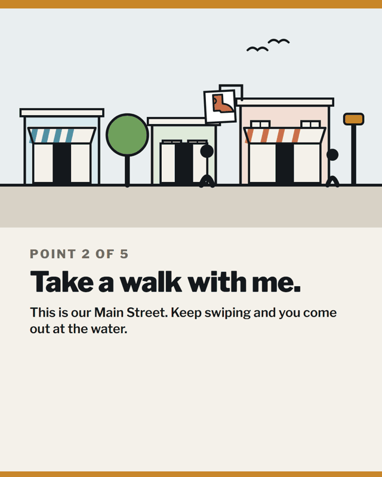
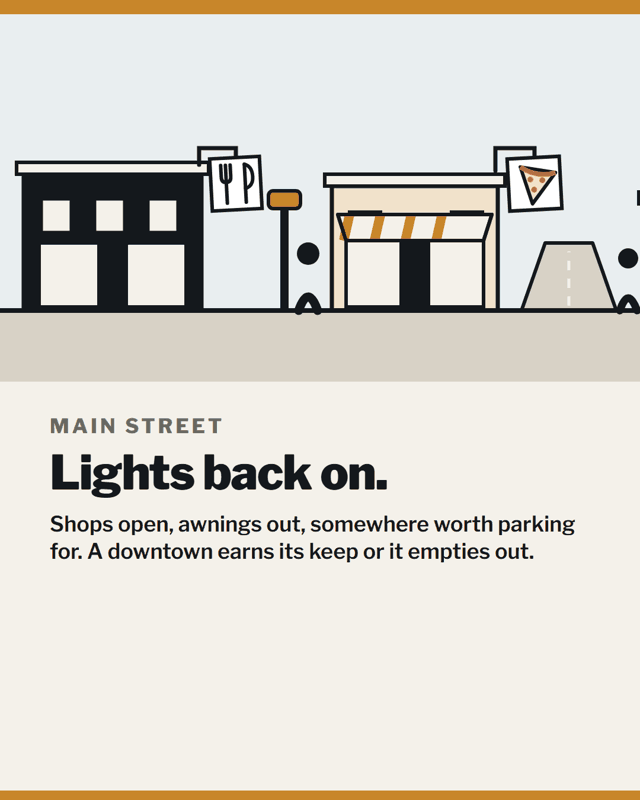
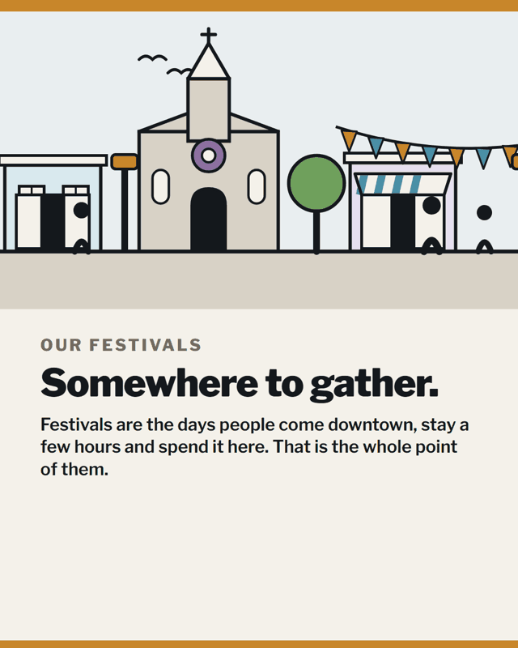
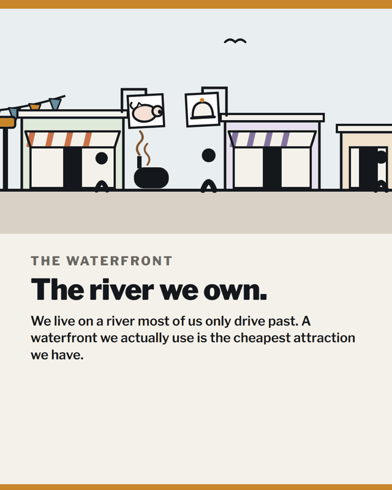
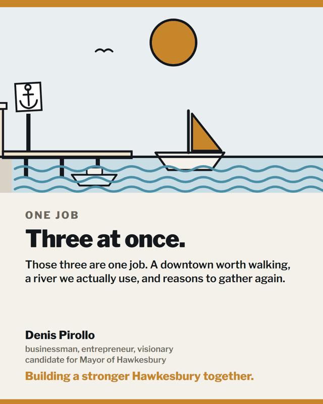
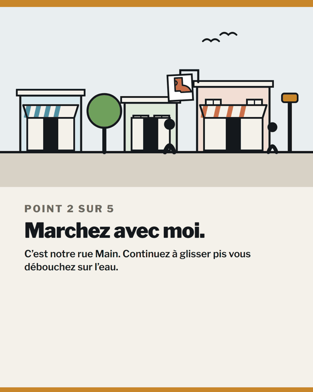
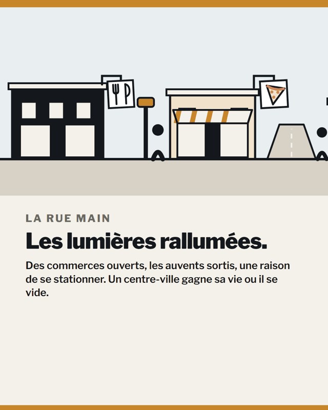
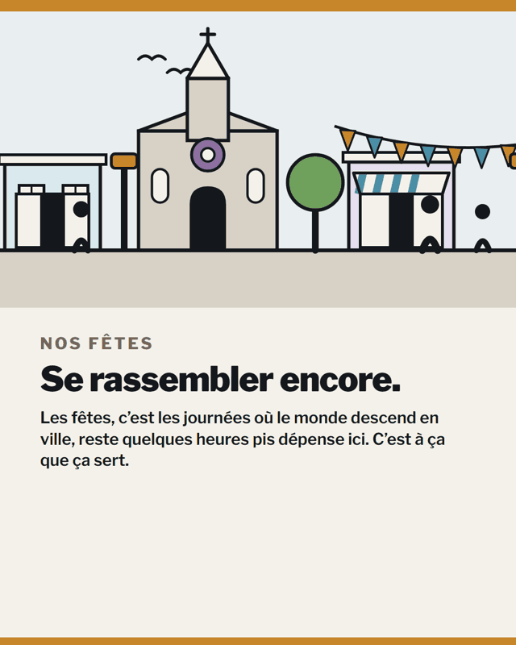
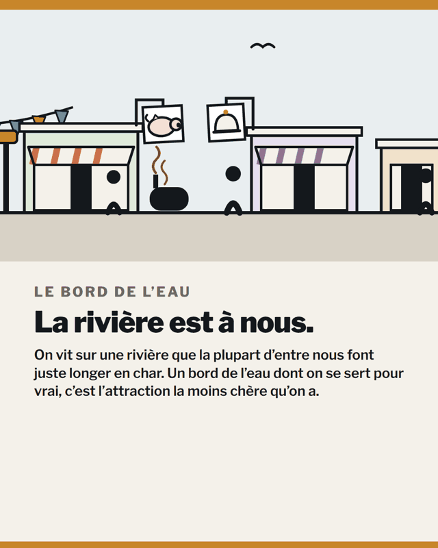
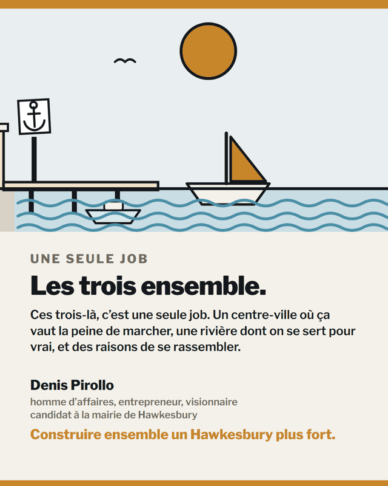

Building a stronger Hawkesbury together.Construire ensemble un Hawkesbury plus fort.
A small campaign: neighbours, volunteers, and a plan. Every dollar comes from a neighbour.Une petite campagne : des voisins, des bénévoles, et un plan. Chaque dollar vient d'un voisin.
Hawkesbury · what I'll doHawkesbury · ce que je vais faire
Five points.Cinq points.
Denis declared these five points himself, in public. They lead everything the campaign does. The full plans are posted below.Denis a déclaré ces cinq points lui-même, publiquement. Ils guident tout le travail de la campagne. Les plans complets sont affichés plus bas.
Point 1Point 1
Fix the worst roads first.Les pires routes en premier.
Fix our high-priority roads and infrastructure. We fix the worst ones first, and we do them properly, so we do not have to do them again.Réparer nos routes et nos infrastructures prioritaires. On fait les pires en premier, pis on les fait comme du monde, pour ne pas avoir à les refaire.
Point 2Point 2
Revitalize Main Street, waterfront, festivals.Revitaliser la rue Main, le bord de l'eau, nos fêtes.
Main Street, the waterfront and the festivals are one job, not three. We want a downtown worth walking in, a river we actually use, and reasons to get together again.La rue Main, le bord de l'eau pis les fêtes, c'est une seule job, pas trois. On veut un centre-ville où ça vaut la peine de marcher, une rivière dont on se sert pour vrai, et des raisons de se rassembler.
Point 3Point 3
Keep our young people and jobs.Garder nos jeunes et les jobs.
Keep our young people here, bring more in, and bring the jobs back. Young people stay when there is good work here.Garder nos jeunes ici, en attirer d'autres, et ramener les jobs. Les jeunes restent quand il y a de bonnes jobs ici.
Point 4Point 4
Build somewhere to live.Bâtir des logements.
Bring in investors to build here. People need somewhere to live and we have almost nothing left to rent or buy.Attirer des investisseurs pour bâtir ici. Le monde a besoin d'un toit et il reste presque plus rien à louer ou à acheter.
Point 5Point 5
Open the books.Ouvrir les livres.
Every candidate can yap about what we want to do. Me included. But nothing gets done until an open audit of the books shows where our money is going. It is last on this list because it is the one that makes the other four possible.N'importe quel candidat peut jaser de ce qu'il veut faire. Moi inclus. Mais rien ne se fait tant qu'un audit transparent des livres n'a pas montré où va notre argent. Il vient en dernier parce que c'est lui qui rend les quatre autres possibles.
Plans · PoliciesPlans · Politiques
The longer readsLes textes de fond
A card can carry one message. The full plans live here: what we will do, how it works, and what it costs. New plans will appear here as we finish them.Une carte porte un seul message. Les plans complets sont ici : ce que nous ferons, comment ça fonctionne, et ce que ça coûte. Les nouveaux plans paraîtront ici à mesure qu'ils seront finis.
Everything we post, in one placeTout ce que nous publions, au même endroit
The campaign's cards, clips and reels, in both languages. The wall turns on its own. To hold one page, rest your mouse on it. Use the arrows to flip through yourself. Save them, share them, pass them along.Les cartes, les clips pis les reels de la campagne, dans les deux langues. Le mur tourne tout seul. Pour retenir une page, laissez votre souris dessus. Servez-vous des flèches pour feuilleter vous-même. Sauvegardez-les, partagez-les, faites-les circuler.
Reel · the car showReel · l'expo d'autosReel · A Catered AffairReel · A Catered AffairRadio · BIG FMRadio · BIG FM
That is the plan. Getting it in front of people costs money, and every dollar comes from a neighbour.C'est ça, le plan. Le mettre devant le monde, ça coûte de l'argent, pis chaque dollar vient d'un voisin.
This is a small campaign. Neighbours, volunteers, and a plan.C'est une petite campagne. Des voisins, des bénévoles, et un plan.
Every dollar comes from a neighbour. That is the whole machine.Chaque dollar vient d'un voisin. C'est ça, toute la machine.
Your donation pays for signs, cards, and getting the plan in front of people.Votre don paie les pancartes, les cartes, et mettre le plan devant le monde.
Every dollar is recorded, every donation gets a receipt, and nothing gets wasted. That is how I run a job, and that is how I will run the town.Chaque dollar est consigné, chaque don reçoit un reçu, et rien ne se perd. C'est comme ça que je mène un chantier, et c'est comme ça que je vais mener la ville.
If you can give, please give. If money is tight, share a card and tell a neighbour. That helps just as much.Si vous pouvez donner, donnez s'il vous plaît. Si l'argent est serré, partagez une carte et parlez-en à un voisin. Ça aide autant.
Thank you. Hawkesbury is where I intend to spend the rest of my life. We build it together.Merci. Hawkesbury, c'est ici que je vais passer le reste de ma vie. On le bâtit ensemble.
Denis
DonateFaire un don
Interac e-TransferVirement Interac
Fill in the form below.Remplissez le formulaire ci-dessous.
Send your gift by e-transfer.Envoyez votre don par virement.
Your official receipt follows.Votre reçu officiel suit.
Thank you. Two quick steps, about a minute.Merci. Deux étapes rapides, environ une minute.
Send $0 by Interac e-transfer to denispirollo2026@gmail.com. When your bank asks for a security question, the answer is Denis2026. The question itself can be anything. Put reference PIR in the message box.Envoyez 0 $ par virement Interac à denispirollo2026@gmail.com. Quand votre banque demande une question de sécurité, la réponse est Denis2026. La question elle-même peut être n'importe laquelle. Inscrivez la référence PIR dans le message.
Your official receipt follows once the transfer arrives.Votre reçu officiel suivra dès la réception du virement.
The plan · Point 5 · long readLe plan · Point 5 · texte de fond
Open the books.Ouvrir les livres.
The Town's budgets, by-laws and audited statements are public documents. Here is what checks out, what cannot be checked, and the six commitments that would let any resident check the books themselves.Les budgets, les règlements pis les états financiers vérifiés de la Ville sont des documents publics. Voici ce qui se vérifie, ce qui ne se vérifie pas, et les six engagements qui permettraient à n'importe quel résident de vérifier les livres par lui-même.
Denis Pirollo · candidate for Mayor of HawkesburyDenis Pirollo · candidat à la mairie de Hawkesbury
Let me start with the thing an honest audit says first. It is the strongest card the Town holds, and you deserve to hear it from me. Hawkesbury's total spending is below the median of its peers. Below the median means below the middle of the pack. The comparison covers fourteen similar eastern Ontario municipalities. We sit ninth of the fourteen on spending per household. We sit tenth on the total the Town takes from a household in taxes and fees combined. The problem in five years of books is the make-up of the spending, and whether you can check it: where the money goes, and how hard it is for you to follow it.Laissez-moi commencer par ce qu'un audit honnête dit en premier. C'est la meilleure carte de la Ville, pis vous méritez de l'entendre de moi. Les dépenses totales de Hawkesbury sont sous la médiane de ses comparables. Sous la médiane, ça veut dire sous le milieu du peloton. La comparaison porte sur quatorze municipalités semblables de l'Est ontarien. On est neuvième sur les quatorze pour les dépenses par ménage. On est dixième pour le total que la Ville prend d'un ménage en taxes et frais combinés. Le problème, dans cinq ans de livres, c'est sur quoi l'argent est dépensé, pis si vous pouvez le vérifier : où va l'argent, et à quel point c'est dur pour vous de le suivre.
The books, the way they should sit: open, line by line, checkableLes livres, comme ils devraient être : ouverts, ligne par ligne, vérifiables
Three things missing from the public recordTrois choses qui manquent au dossier public
The 2026 tax-rate schedule. The by-law that sets this year's tax rates refers to its Schedule A in four separate clauses. Schedule A is the table with the actual rates on it. That table is not attached to the agenda package. It is not on the Town's website either. The newest rate sheet published on the finance page is from 2024. Your 2026 rates exist. The treasurer can produce them. But you cannot look them up.Le tableau des taux de taxes 2026. Le règlement qui fixe les taux de cette année renvoie à son annexe A dans quatre clauses différentes. L'annexe A, c'est le tableau avec les vrais taux dessus. Ce tableau-là n'est pas joint au cahier de la réunion. Il n'est pas sur le site de la Ville non plus. La plus récente feuille de taux publiée sur la page des finances date de 2024. Vos taux 2026 existent. Le trésorier peut les produire. Mais vous ne pouvez pas les consulter.
A single recorded vote. That is a vote where each councillor's name and how they voted go into the record. Six years of the council's own records are public. They hold 404 resolution vote blocks. That is 404 separate votes in the record. Not one of them shows a count of who voted which way. Every one just says Carried, meaning it passed. The entire 2026 budget was adopted in four lines of minutes. Now the honest part, and I say it every time: this is entirely lawful. The law only requires a recorded vote when a member asks for one. Nobody asks. That does not prove everyone agreed. It only proves the record is silent. So no resident can look up how their own councillor voted on anything.Un seul vote consigné. Un vote consigné, c'est un vote où le nom de chaque conseiller pis sa position vont dans le registre. Six ans des archives du conseil sont publiques. Elles contiennent 404 blocs de vote. Ça fait 404 votes séparés au registre. Pas un seul ne montre qui a voté de quel bord. Chacun dit juste Adopté, ce qui veut dire que c'est passé. Le budget 2026 au complet a été adopté en quatre lignes de procès-verbal. Là, la partie honnête, pis je la dis chaque fois : c'est parfaitement légal. La loi n'exige un vote consigné que si un membre le demande. Personne ne le demande. Ça ne prouve pas que tout le monde était d'accord. Ça prouve juste que le registre est muet. Alors aucun résident ne peut vérifier comment son propre conseiller a voté sur quoi que ce soit.
A budget book written for humans. Hawkesbury publishes 20 pages of spreadsheet. Perth is a smaller town than us. It publishes 15 pages with a written explanation. Russell publishes 48. Casselman publishes 71. The words "staffing complement" never appear once in six years of Hawkesbury agendas and minutes. That is the term for how many people the Town employs. This is a publishing gap, and publishing costs nothing.Un livre de budget écrit pour du vrai monde. Hawkesbury publie 20 pages de tableur. Perth est une ville plus petite que nous. Elle publie 15 pages avec des explications écrites. Russell en publie 48. Casselman en publie 71. Les mots « effectif du personnel » n'apparaissent pas une seule fois en six ans d'ordres du jour et de procès-verbaux de Hawkesbury. C'est le terme pour dire combien de monde la Ville emploie. C'est un trou de publication, pis publier ne coûte rien.
There is one more, and it comes from the province's own watchdog. In March 2026 the Ontario Ombudsman found that council broke the Municipal Act, the provincial law that sets the rules councils have to follow. Council had gone behind closed doors in December 2024 for a consultants' presentation. The Ombudsman's reason: its discussion "did not fit within the exception." In plain words, the law did not allow that discussion to be held in private. Council did not contest the finding. It voted to put the recommendations in place. Credit for accepting it. The lesson stands: someone from outside has to check the closed-door habit, or the habit grows.Il y en a une autre, pis elle vient du chien de garde de la province elle-même. En mars 2026, l'Ombudsman de l'Ontario a conclu que le conseil avait enfreint la Loi sur les municipalités, la loi provinciale qui fixe les règles que les conseils doivent suivre. Le conseil s'était réuni derrière des portes fermées en décembre 2024 pour une présentation de consultants. La raison de l'Ombudsman : sa discussion « ne cadrait pas avec l'exception ». En mots simples, la loi ne permettait pas que cette discussion-là se tienne en privé. Le conseil n'a pas contesté le constat. Il a voté pour appliquer les recommandations. Bravo pour l'avoir accepté. La leçon reste : quelqu'un de l'extérieur doit vérifier l'habitude du huis clos, sinon l'habitude grandit.
The money picture, in five checkable numbersLe portrait de l'argent, en cinq chiffres vérifiables
One fact comes before any payroll number, because it protects people who earn their pay. The firefighters' negotiated raises are 1.25% and 1.5% a year, below inflation in every known year. Whatever is pushing costs up, it is not the raises of the people who run into burning buildings. Now here is the five-year picture. Every figure comes from the Town's own adopted budgets and by-laws.Un fait passe avant tout chiffre de paye, parce qu'il protège du monde qui gagne son salaire. Les augmentations négociées des pompiers sont de 1,25 % et 1,5 % par année, sous l'inflation chaque année connue. Peu importe ce qui pousse les coûts, ce n'est pas les augmentations du monde qui rentre dans les bâtiments en feu. Voici maintenant le portrait de cinq ans. Chaque chiffre vient des budgets et règlements adoptés par la Ville elle-même.
Three straight tax increases. Stack them one on top of the other and you get about 19%.Trois hausses de taxes de suite. Empilez-les une par-dessus l'autre pis ça fait environ 19 %.4.93% in 2024, 6.82% in 2025, 6.41% in 2026. The 19% is my own math across the three by-laws. I label it that way every time I say it.4,93 % en 2024, 6,82 % en 2025, 6,41 % en 2026. Le 19 %, c'est mon propre calcul sur les trois règlements. Je l'étiquette de même chaque fois que je le dis.
On the same unchanged house, up 20.49% since 2021.Sur la même maison inchangée, plus 20,49 % depuis 2021.For every $100,000 your house is assessed at, the Town's share of the bill went from $1,101.35 to $1,327.02 between 2021 and 2025. Assessed means the value on paper that your tax is figured from. Look up the assessed value on your own tax bill and multiply. Every one of those figures is printed on a Town by-law or rate sheet. This is the Town's share only. The county's share and the school share are separate stories.Pour chaque 100 000 $ d'évaluation de votre maison, la part de la Ville est passée de 1 101,35 $ à 1 327,02 $ entre 2021 et 2025. L'évaluation, c'est la valeur sur papier à partir de laquelle votre taxe est calculée. Prenez l'évaluation sur votre compte de taxes pis multipliez. Chacun de ces chiffres est imprimé sur un règlement ou une feuille de taux de la Ville. C'est la part de la Ville seulement. La part du comté pis la part des écoles, c'est d'autres histoires.
Where each new dollar went.Où chaque nouvelle piastre est allée.Take every extra dollar of spending paid for by your taxes, added between 2021 and 2026. 38 cents went to the Town's own fire, dispatch and by-law services. Dispatch is the emergency-call service Hawkesbury runs and sells to neighbouring municipalities. 26 cents went to transportation and the public-works establishment. 2 cents went to the police division. Read those words carefully: the public-works establishment, the crews' wages and the cost of running the department, not more pavement. And the growth in dispatch is matched by money coming in for it, so it does not land on the tax bill.Prenez chaque piastre de plus en dépenses payées par vos taxes, ajoutée entre 2021 et 2026. 38 cennes sont allées aux services d'incendie, de répartition et de réglementation de la Ville. La répartition, c'est le service d'appels d'urgence que Hawkesbury opère pis vend aux municipalités voisines. 26 cennes sont allées au transport pis à l'appareil des travaux publics. 2 cennes sont allées à la division policière. Lisez bien les mots : l'appareil des travaux publics, les salaires des équipes pis le coût de faire rouler le département, pas plus d'asphalte. Pis la croissance de la répartition est couverte par de l'argent qui rentre pour ça, donc ça n'atterrit pas sur le compte de taxes.
The biggest line grows faster than the tax bill.La plus grosse ligne grossit plus vite que le compte de taxes.In the 2026 budget, salaries, wages and benefits rise $1,030,404. The whole tax levy rises $859,442. The levy is the total the Town raises in property taxes for its own budget. I put those two side by side to show the scale, never to blame anyone. Part of that payroll is dispatch work that is matched by money coming in. Part of it is paid by user rates, the separate bills people pay for a service instead of through taxes. So it is not the same dollar. The fair question is simpler. Where does the growth come from? The Town has never published that, and it should.Au budget 2026, les salaires et avantages montent de 1 030 404 $. Toute la levée de taxes monte de 859 442 $. La levée, c'est le total que la Ville ramasse en taxes foncières pour son propre budget. Je mets les deux côte à côte pour montrer l'échelle, jamais pour blâmer quelqu'un. Une partie de cette paye, c'est de la répartition couverte par de l'argent qui rentre. Une autre partie est payée par les tarifs d'usagers, les factures à part que le monde paie pour un service au lieu de passer par les taxes. Donc ce n'est pas la même piastre. La question juste est plus simple. D'où vient la croissance ? La Ville ne l'a jamais publié, pis elle le devrait.
The paving line got $15,000 of tax money in six budgets.La ligne d'asphaltage a reçu 15 000 $ de taxes en six budgets.Look at the six capital budgets adopted from 2021 to 2026. Capital is the money for building and fixing things. Out of the money raised by taxes, $15,000 went into the line called Road Network Paving. All of it was in 2021. The road projects that did happen were paid by grants, borrowing and the Counties. That context always travels with the number. It is exactly why chasing grants matters so much in my roads plan. It is also why the reserves need watching. Reserves are the Town's savings. The Town's own projection has them down about a third this year.Regardez les six budgets d'immobilisations adoptés de 2021 à 2026. Les immobilisations, c'est l'argent pour bâtir pis réparer. Sur l'argent ramassé en taxes, 15 000 $ sont allés dans la ligne d'asphaltage du réseau. Tout ça en 2021. Les projets routiers qui se sont faits ont été payés par des subventions, de l'emprunt pis les Comtés. Ce contexte-là voyage toujours avec le chiffre. C'est exactement pour ça que la chasse aux subventions compte tant dans mon plan des routes. C'est aussi pour ça que les réserves ont besoin d'être surveillées. Les réserves, c'est les économies de la Ville. La propre projection de la Ville les met en baisse d'environ un tiers cette année.
What the Town gets right, on the recordCe que la Ville fait bien, au dossier
Open books cut both ways. So here is the other side, and nobody had to ask me for it. The Town's grant office performs. It won up to $3.8 million for the water plant filter, and the full amount it asked for on the arena roof. Of the eight municipalities in this county, Hawkesbury receives the most formula grant money per household. Formula grants are the ones handed out by a set formula. We get the most because those formulas are weighted by need. Nobody should tell you we are shortchanged. In the hard years of 2020 and 2021 the Town spent less than its own payroll budget. That is the honest signature of staff leaving. It has landed close to budget since then. The staff have been fair to your money. And the root cause of our high tax rate is our low assessment base. That means our houses are worth less on paper than our neighbours'. No council invented that. Anyone who tells you this town is simply overspending has not read the books. The fight is over what the money gets spent on and whether you can see it, and it is worth having.Des livres ouverts coupent des deux bords. Alors voici l'autre côté, pis personne n'a eu à me le demander. Le bureau des subventions de la Ville performe. Il a gagné jusqu'à 3,8 millions pour le filtre de l'usine d'eau, pis le plein montant demandé pour le toit de l'aréna. Des huit municipalités du comté, Hawkesbury reçoit le plus d'argent de subventions par formule par ménage. Les subventions par formule, c'est celles qui sont distribuées selon une formule fixe. On en reçoit le plus parce que ces formules-là sont pondérées selon le besoin. Personne ne devrait vous dire qu'on est lésés. Dans les années dures de 2020 et 2021, la Ville a dépensé moins que son propre budget de paye. C'est la signature honnête des départs de personnel. Elle atterrit proche du budget depuis ce temps-là. Le personnel a été correct avec votre argent. Pis la cause de fond de notre taux de taxes élevé, c'est notre base d'évaluation basse. Ça veut dire que nos maisons valent moins sur papier que celles des voisins. Aucun conseil n'a inventé ça. Quelqu'un qui vous dit que cette ville dépense trop, tout simplement, n'a pas lu les livres. Le combat porte sur où va l'argent pis sur votre droit de le voir, pis il vaut la peine.
The garage: what closed books cost, in one storyLe garage : ce que des livres fermés coûtent, en une histoire
The new municipal garage was estimated at $7.2 million in 2022. Council has since authorized $11.25 million. Every step of that climb was lawful and public. That is exactly my point. The checking was missing, and the record shows where.Le nouveau garage municipal était estimé à 7,2 millions en 2022. Le conseil a depuis autorisé 11,25 millions. Chaque étape de cette montée était légale et publique. C'est exactement mon point. La vérification manquait, pis le dossier montre où.
The outgoing council approved the project at its final meeting before the 2022 election. There was no recorded vote. The meeting was public and the documents are on the Town's portal; nothing was hidden. Council never voted on the design contract at all. Staff awarded it without asking for competing bids, using the single-source clause in the purchasing policy. That clause lets the Town hire one firm directly. It was lawful, and staff reported it afterward. But it means there was no council vote, and nobody else was asked to price the same job. Then the firm that drew the plans was also paid to manage the contract and approve the changes. The Town's own report says the extra cost came mainly from design errors and gaps in the engineering. The concrete testing was independent. The design review was not. In four years, no garage decision was taken by a recorded vote. And the 2026 budget still does not say where the last $1.5 million of the project comes from. My question is the taxpayer's question: what pays for it, and when?Le conseil sortant a approuvé le projet à sa dernière réunion avant l'élection de 2022. Il n'y a pas eu de vote consigné. La réunion était publique pis les documents sont sur le portail de la Ville ; rien n'était caché. Le conseil n'a jamais voté sur le contrat de conception. Le personnel l'a octroyé sans demander d'autres prix, en vertu de la clause de fournisseur unique de la politique d'achats. Cette clause-là permet à la Ville d'engager une seule firme directement. C'était légal, pis le personnel l'a rapporté ensuite. Mais ça veut dire qu'il n'y a pas eu de vote du conseil, pis que personne d'autre n'a été appelé à faire un prix sur la même job. Ensuite, la firme qui a dessiné les plans a aussi été payée pour gérer le contrat pis approuver les changements. Le propre rapport de la Ville dit que le coût de plus vient surtout d'erreurs de conception et de trous dans l'ingénierie. Les tests de béton étaient indépendants. La révision de la conception, non. En quatre ans, aucune décision sur le garage n'a été prise par vote consigné. Pis le budget 2026 ne dit toujours pas d'où vient le dernier 1,5 million du projet. Ma question est celle du contribuable : qui paie, pis quand ?
I accuse nobody of anything. I am telling you what the record supports. It shows a checking problem. And checking problems have checking solutions.Je n'accuse personne de rien. Je vous dis ce que le dossier appuie. Il montre un problème de vérification. Pis les problèmes de vérification ont des solutions de vérification.
Six commitments, and the lever for each oneSix engagements, et le levier de chacun
A budget book written for humans.Un livre de budget écrit pour du vrai monde.The mayor personally writes the 2027 budget. Mine comes with a plain-language book: what changed, why, what it costs per household, and the staffing picture. Smaller towns than us do it. It is a publishing commitment, and publishing costs nothing.Le maire écrit lui-même le budget 2027. Le mien vient avec un livre en langage clair : ce qui change, pourquoi, ce que ça coûte par ménage, pis le portrait du personnel. Des villes plus petites que nous le font. C'est un engagement de publication, pis publier ne coûte rien.
Every rate sheet, published, every year.Chaque feuille de taux, publiée, chaque année.The by-law calls for a tax-rate schedule. That is the table with the rates on it. It gets attached and posted the same week the by-law is adopted. You should never need a records request to learn your own tax rate.Le règlement exige un tableau des taux. C'est le tableau avec les taux dessus. Il sera joint et affiché la semaine même où le règlement est adopté. Vous ne devriez jamais avoir besoin d'une demande d'accès pour connaître votre propre taux de taxes.
Recorded votes on capital spending, the money that builds things.Des votes consignés sur les immobilisations, l'argent qui bâtit.Any member can request a recorded vote. I will request one on every one of those projects, every time, starting with my own motions. Residents get to look up every hand, including mine.N'importe quel membre peut demander un vote consigné. Je vais en demander un sur chacun de ces projets-là, chaque fois, en commençant par mes propres motions. Les résidents pourront vérifier chaque main levée, y compris la mienne.
A public list of the contracts handed out without bids.Une liste publique des contrats donnés sans demander d'autres prix.Credit first: the Town's new purchasing policy, the rules for how it buys things, is genuinely better than the one it replaced. The gap is publication. It allows contracts up to $999,999 without a council vote. It does not require the Town to publish any list of the contracts given straight to one firm, or of the change orders. A change order is a change to a job after the contract is signed. I will bring the motion to publish both on the website, every three months. It takes four votes of seven.Le crédit d'abord : la nouvelle politique d'achats de la Ville, les règles sur la façon dont elle achète, est vraiment meilleure que l'ancienne. Le trou, c'est la publication. Elle permet des contrats jusqu'à 999 999 $ sans vote du conseil. Elle n'oblige pas la Ville à publier de liste des contrats donnés directement à une seule firme, ni des ordres de changement. Un ordre de changement, c'est une modification à la job après la signature du contrat. Je vais déposer la motion pour publier les deux sur le site, à tous les trois mois. Ça prend quatre votes sur sept.
A second opinion on every big price.Une deuxième opinion sur chaque gros prix.This is the garage lesson, applied. Pricing jobs was my living. Before the Town commits to a major project, the costs get an independent review. And I read the quotes myself. Checking the numbers is free compared to paying twice.C'est la leçon du garage, appliquée. Faire les prix, c'était mon gagne-pain. Avant que la Ville s'engage sur un gros projet, les coûts passent par une révision indépendante. Pis je lis les devis moi-même. Vérifier les chiffres, ça coûte rien à côté de payer deux fois.
An annual report card, in both languages.Un bulletin annuel, dans les deux langues.Once a year, in plain words: what was promised, what was delivered, what it cost, what moved. My roads plan (point 1) and my Main Street plan (point 2) already commit to the same discipline. One document, every year. A resident can read it in ten minutes and check it in an afternoon.Une fois par année, en mots simples : ce qui a été promis, ce qui a été livré, ce que ça a coûté, ce qui a bougé. Mon plan des routes (point 1) pis mon plan de la rue Main (point 2) promettent déjà la même discipline. Un document, chaque année. Un résident peut le lire en dix minutes pis le vérifier en un après-midi.
What I will not promiseCe que je ne promettrai pas
I will not call anyone a crook. Nothing in the record supports it, and I only say what the record supports. I will not promise the tax levy freezes. Anyone who promises that in a town with our bill for roads, pipes and buildings is selling you something. And I will not pretend recorded votes are required by law today. They are not. That is why making them a habit takes a mayor who asks for them.Je ne traiterai personne de croche. Rien au dossier ne l'appuie, pis je ne dis que ce que le dossier appuie. Je ne promettrai pas de gel de la levée de taxes. Quelqu'un qui promet ça dans une ville avec notre facture de routes, de tuyaux pis de bâtiments vous vend quelque chose. Pis je ne ferai pas semblant que les votes consignés sont exigés par la loi aujourd'hui. Ils ne le sont pas. C'est justement pour ça qu'en faire une habitude prend un maire qui les demande.
In my trade, you show the client the invoice, the quote and the change order, or you do not get paid. I am asking to work for ten thousand clients. The books are yours. My job is to hand them to you open.Dans mon métier, tu montres au client la facture, le devis pis l'ordre de changement, ou tu n'es pas payé. Je demande à travailler pour dix mille clients. Les livres sont à vous. Ma job, c'est de vous les remettre ouverts.
Your money. Your record. Your right to check.Votre argent. Votre dossier. Votre droit de vérifier.
Building a stronger Hawkesbury together.Construire ensemble un Hawkesbury plus fort.
The receiptsLes reçus
Schedules A and B to the Town's adopted budget by-laws, 2021 through 2026 · the levy year by year, the payroll line, where each new dollar went, the paving line, the projection for the Town's savings.Annexes A et B des règlements de budget adoptés par la Ville, 2021 à 2026 · la levée année par année, la ligne de paye, où est allée chaque nouvelle piastre, la ligne d'asphaltage, la projection des économies de la Ville.
Town by-laws and rate sheets, 2021 to 2025 · the Town's share per $100,000 of assessed value, year by year.Règlements et feuilles de taux de la Ville, 2021 à 2025 · la part de la Ville par 100 000 $ d'évaluation, année par année.
By-Law 22-2026 and the Town finance page, checked live August 2026 · the unpublished 2026 rate schedule.Règlement 22-2026 et la page des finances de la Ville, vérifiée en direct en août 2026 · le tableau des taux 2026 non publié.
The Town's public meeting portal, 2021 to 2026 · the 404 votes in the record and the budget-adoption minutes.Le portail public des réunions de la Ville, 2021 à 2026 · les 404 votes au registre et les procès-verbaux d'adoption du budget.
Ontario Ombudsman report, March 2026, and council resolution of March 9, 2026 · the closed-meeting finding and its acceptance.Rapport de l'Ombudsman de l'Ontario, mars 2026, et résolution du conseil du 9 mars 2026 · le constat sur le huis clos et son acceptation.
Procurement Policy SF-P-2026-01 · the dollar limits for handing out contracts, and the publication gap.Politique d'achats SF-P-2026-01 · les limites en dollars pour donner des contrats, et le trou de publication.
Firefighters' collective agreement 2024–2027 · the negotiated raises.Convention collective des pompiers 2024–2027 · les augmentations négociées.
Garage record: the 2022 options analysis, the 2024 authorization and 2025 supplement, the Town's own report on the extra cost, and the line in the 2026 budget with no money attached to it.Dossier du garage : l'analyse d'options de 2022, l'autorisation de 2024 et le supplément de 2025, le propre rapport de la Ville sur le coût de plus, et la ligne du budget 2026 sans argent attaché.
Ontario Financial Information Returns and comparable municipalities, FY2024 · the context for how our spending and our grants per household compare.Rapports d'information financière de l'Ontario et municipalités comparables, exercice 2024 · le contexte pour comparer nos dépenses et nos subventions par ménage.
An idea · Points 2 · 3 · 4 · long readUne idée · Points 2 · 3 · 4 · texte de fond
A campus for trades and care.Un campus des métiers et des soins.
An idea I want to put in front of this town. A bilingual training campus in Hawkesbury for the skilled trades and health care, built on the training that already happens here. This is what points 2, 3 and 4 look like when you follow them all the way down. It is also an honest account of what a mayor could and could not do about it.Une idée que je veux mettre devant cette ville. Un campus bilingue à Hawkesbury pour la formation aux métiers spécialisés pis aux soins de santé, bâti sur la formation qui se donne déjà ici. Voici de quoi les points 2, 3 et 4 ont l'air quand on les suit jusqu'au bout. C'est aussi un portrait honnête de ce qu'un maire pourrait et ne pourrait pas faire là-dedans.
Denis Pirollo · candidate for Mayor of HawkesburyDenis Pirollo · candidat à la mairie de Hawkesbury
An idea, not a promise · nothing here is signedUne idée, pas une promesse · rien ici n'est signé
Here is the story this town tells over and over. A kid grows up here and wants a trade or a nursing career. The training is somewhere else. So they get an education and a moving van in the same month. Most of them do not come back. There is proof that it can go the other way, small as that proof is. La Cité already trains practical nurses at our hospital. Eight people have finished since 2022, and about half of them work there today. Train them here and they stay here. But eight people is all we have. Everything else a kid might want to learn is still about an hour and a quarter away. That gap is what quietly empties this town of its young people. No pothole, no tax line, nothing on a council agenda does more damage over a generation than that gap does. Point 3 of my platform is to keep our young people and jobs. It exists to stop this.Voici l'histoire que cette ville se raconte encore et encore. Un jeune grandit ici pis il veut un métier ou une carrière en soins. La formation est ailleurs. Alors il reçoit une éducation pis un camion de déménagement le même mois. La plupart ne reviennent pas. Il y a une preuve que ça peut se passer autrement, aussi petite soit-elle. La Cité forme déjà des infirmières auxiliaires à notre hôpital. Huit personnes ont fini depuis 2022, pis à peu près la moitié travaillent là aujourd'hui. Formez-les ici pis ils restent ici. Mais huit personnes, c'est tout ce qu'on a. Tout le reste qu'un jeune pourrait vouloir apprendre est encore à peu près à une heure et quart d'ici. Ce trou-là vide tranquillement cette ville de ses jeunes. Aucun nid-de-poule, aucune ligne de taxes, rien sur un ordre du jour ne fait plus de dommage sur une génération que ce trou-là. Le point 3 de ma plateforme, c'est de garder nos jeunes pis nos emplois. Il existe pour arrêter ça.
The loop the campus closesLa boucle que le campus referme
The idea, in plain wordsL'idée, en mots simples
The idea is a bilingual campus in Hawkesbury that trains people for the skilled trades and health care. It starts as a growth of what already works here. La Cité already trains practical nurses here, with the hospital. The hands-on labs happen at the hospital itself, the part where students practise on a real hospital floor. The classroom half still comes from Ottawa over a screen. That is exactly the half a campus would bring home. The hospital already hires those graduates. The high schools on both sides of the river already send their young people away to train. A campus would keep them here. Where it would go and how it would be paid for are two questions I am not going to answer for you today. Nobody has earned the right to answer them yet. Students and staff downtown every weekday would be the Main Street plan's best customer (point 2). Workers trained here would be the investment plan's best argument (point 4).L'idée, c'est un campus bilingue à Hawkesbury qui forme du monde pour les métiers spécialisés pis les soins de santé. Ça commence comme la croissance de ce qui marche déjà ici. La Cité forme déjà des infirmières auxiliaires ici, avec l'hôpital. Les laboratoires se font à l'hôpital même, la partie où les étudiantes pratiquent sur un vrai plancher d'hôpital. La moitié théorique arrive encore d'Ottawa par un écran. C'est exactement cette moitié-là qu'un campus ramènerait chez nous. L'hôpital engage déjà ces diplômées-là. Les écoles secondaires des deux bords de la rivière envoient déjà leurs jeunes se former ailleurs. Un campus les garderait ici. Où ça irait pis comment ça se paierait, c'est deux questions que je ne vais pas vous répondre aujourd'hui. Personne n'a encore gagné le droit d'y répondre. Des étudiants pis du personnel au centre-ville chaque jour de semaine, ce serait le meilleur client du plan de la rue Main (point 2). Des travailleurs formés ici, ce serait le meilleur argument du plan d'investissement (point 4).
A campus, drawn as an idea: no site, no name, just the thing itselfUn campus, dessiné comme une idée : pas de terrain, pas de nom, juste la chose elle-même
One more thing, said plainly, the way a neighbour deserves. More than one candidate in this race has said Hawkesbury deserves a post-secondary school, a place to keep studying after high school. Good. That means the town agrees on where we want to go. Here is where we might differ. I do not think saying it is the hard part. The hard part is who you get in a room, in what order, and what a mayor is actually allowed to do once they are there. That is what the rest of this is about.Une chose encore, dite simplement, comme un voisin le mérite. Plus d'un candidat dans cette course a dit que Hawkesbury mérite une école postsecondaire, une place pour continuer à étudier après le secondaire. Tant mieux. Ça veut dire que la ville s'entend sur là où on veut aller. Voici où on diffère peut-être. Je ne pense pas que le dire soit la partie difficile. La partie difficile, c'est qui tu réunis dans une salle, dans quel ordre, pis ce qu'un maire a vraiment le droit de faire une fois qu'ils sont là. C'est de ça que le reste parle.
I will say this much, because you deserve to know where it stands. This is not something I thought of last week. I have quietly started conversations with people who know how these things actually get built, on both sides of the river. That is as far as I will go in public today. The people who would sit at that table have not had their say yet, and it is not my place to speak for them. When there is something real to show you, you will see it here first, and you will see it from me.Je vais en dire ça, parce que vous méritez de savoir où c'est rendu. Ce n'est pas une idée qui m'est venue la semaine passée. J'ai commencé tranquillement des conversations avec du monde qui sait comment ces affaires-là se bâtissent pour vrai, des deux bords de la rivière. C'est aussi loin que je vais aller en public aujourd'hui. Le monde qui s'assoirait à cette table-là n'a pas encore eu son mot à dire, pis ce n'est pas à moi de parler pour eux. Quand il y aura quelque chose de réel à vous montrer, vous allez le voir ici en premier, pis vous allez le voir venant de moi.
The meeting only a mayor can callLa réunion que seul un maire peut convoquer
No private citizen can call this meeting. A mayor can, and it costs the town almost nothing. Here is who would sit at that table: the college, the hospital, the school boards, the region's workforce board, the employers who cannot hire, and the Counties, the bigger local government Hawkesbury sits inside. One table, one question: what would it take, and what do you need from the Town? If the answers point somewhere, the Town can put its name behind them. That happens in public, by a vote of council, where you can watch it. I cannot force anyone to come to that table, and I will not pretend I can. What I can do is make Hawkesbury the easiest yes in eastern Ontario.Aucun simple citoyen ne peut convoquer cette réunion. Un maire le peut, pis ça coûte presque rien à la ville. Voici qui serait assis à cette table : le collège, l'hôpital, les conseils scolaires, le conseil de la main-d'œuvre de la région, les employeurs qui ne trouvent personne, pis les Comtés, le gouvernement local plus large dont Hawkesbury fait partie. Une table, une question : qu'est-ce que ça prendrait, pis de quoi avez-vous besoin de la Ville ? Si les réponses pointent quelque part, la Ville peut mettre son nom derrière. Ça se fait en public, par un vote du conseil, où vous pouvez le voir se faire. Je ne peux forcer personne à venir à cette table, pis je ne ferai pas semblant. Ce que je peux faire, c'est faire de Hawkesbury le oui le plus facile de l'Est ontarien.
The partners, by category · no site, no names, on purposeLes partenaires, par catégorie · pas de site, pas de noms, par exprès
The honest ledger: what a mayor can and cannot deliver hereLe registre honnête : ce qu'un maire peut et ne peut pas livrer ici
Call that meeting, and keep calling itConvoquer cette réunion, pis continuer à la convoquer
Put the Town's name on applications for money, by a vote of councilMettre le nom de la Ville sur des demandes d'argent, par un vote du conseil
Keep pushing for it with ministers, the people who hand out the money, and the CountiesContinuer à pousser auprès des ministres, du monde qui donne l'argent, pis des Comtés
Set up a way of choosing a site that Town staff run in the open, and that anyone can take part inMettre en place une façon de choisir le site que le personnel de la Ville mène au grand jour, pis à laquelle tout le monde peut participer
Put the incentives council approves into the budget he brings forwardMettre les incitatifs approuvés par le conseil dans le budget qu'il dépose
A mayor CANNOTUn maire NE PEUT PAS
Fund or run a college. Colleges answer to the province and to their own boardsFinancer ou diriger un collège. Les collèges répondent à la province pis à leurs propres conseils
Spend a dollar without a council voteDépenser une piastre sans vote du conseil
Approve another government's grant. The Town applies, others decideApprouver la subvention d'un autre gouvernement. La Ville demande, d'autres décident
Pick the site. The open process picks itChoisir le site. C'est le processus ouvert qui choisit
Force the hospital, a school board or any employer to signForcer l'hôpital, un conseil scolaire ou un employeur à signer
Every promise on this page comes from the left column. If you ever catch me promising from the right column, hold it against me.Chaque promesse sur cette page vient de la colonne de gauche. Si jamais vous m'attrapez à promettre de la colonne de droite, reprochez-le-moi.
The money, and the buildingL'argent, et le bâtiment
With what money? Mostly not yours, and never behind your back. The province has set aside serious money to train people for jobs that are sitting empty. The federal government helps pay for community projects like this every year. Those are the kinds of places an idea like this would have to go looking. If this town ever put anything in, council would set the amount in public before a dollar moved. And I would not want the town owning a campus or paying to run one. Whoever owns the building carries the building. That is the normal way these things get built. I have spent my working life on the building side of them.Avec quel argent ? Surtout pas le vôtre, pis jamais dans votre dos. La province a mis de côté de l'argent sérieux pour former du monde pour des postes qui restent vides. Le fédéral aide à payer des projets communautaires comme celui-là chaque année. C'est ce genre d'endroits qu'une idée comme ça devrait aller voir. Si cette ville mettait un jour quelque chose, le conseil fixerait le montant en public avant qu'une piastre bouge. Pis je ne voudrais pas que la ville possède un campus ni qu'elle le fasse rouler. Celui qui possède le bâtiment porte le bâtiment. C'est de même que ça se bâtit d'habitude. J'ai passé ma vie de travail du côté construction de ces affaires-là.
Which building? I am not going to name one. Not today, not later, not if I win. The moment a candidate or a mayor names a building, he has put his thumb on the scale. He may also have put money in somebody's pocket. If this ever becomes real, the rules for choosing go public, Town staff run it, and any owner can put a building forward. And I will put my own rules for staying out of it in writing. Before it starts, not after.Quel bâtiment ? Je n'en nommerai pas un. Pas aujourd'hui, pas plus tard, pas si je gagne. Le moment où un candidat ou un maire nomme un bâtiment, il a mis son pouce sur la balance. Il a peut-être aussi mis de l'argent dans la poche de quelqu'un. Si ça devient réel un jour, les règles du choix deviennent publiques, le personnel de la Ville s'en occupe, pis n'importe quel propriétaire peut proposer son bâtiment. Pis je vais mettre par écrit mes propres règles pour m'en tenir loin. Avant que ça commence, pas après.
And both languages, or it does not deserve the name. The French college is where the conversation starts, because it is the one already training people here. The table grows from there. The English-language side of this region's training belongs at that table too, and every board's kids belong in those shops. A border town that trains in both languages is the whole advantage.Pis les deux langues, sinon ça ne mérite pas le nom. Le collège français est le point de départ de la conversation, parce que c'est lui qui forme déjà des gens ici. La table grandit à partir de là. Le côté anglophone de la formation de cette région a sa place à cette table aussi, pis les jeunes de tous les conseils ont leur place dans ces ateliers. Une ville frontalière qui forme dans les deux langues, c'est ça, l'avantage au complet.
What I will not promiseCe que je ne promettrai pas
I will not promise you a building before the partners have signed. That is how towns end up stuck with a building nobody uses. I will not promise a ribbon cutting on a date. I am not promising you a campus at all. Here is what I am promising: to do the work in public. The meeting, the asking, and a straight answer either way. If a partner says no, or the numbers say no, I will tell you plainly, within days, and what remains is still worth having: the problem named, the table standing, and a town that asked out loud. Everything the law lets me tell you, I will tell you. When the law makes a meeting private, I will tell you that too, and why.Je ne vous promettrai pas un bâtiment avant que les partenaires aient signé. C'est comme ça qu'une ville se ramasse pognée avec un bâtiment que personne n'utilise. Je ne vous promettrai pas une coupure de ruban à une date. Je ne vous promets pas un campus pantoute. Voici ce que je promets : faire l'ouvrage en public. La réunion, les demandes, pis une réponse franche dans un sens ou dans l'autre. Si un partenaire dit non, ou si les chiffres disent non, je vais vous le dire clairement, en quelques jours, pis ce qui reste vaut encore la peine : le problème nommé, la table debout, pis une ville qui a demandé tout haut. Tout ce que la loi me permet de vous dire, je vais vous le dire. Quand la loi rend une réunion privée, je vais vous dire ça aussi, pis pourquoi.
I build for a living. The first rule of building is simple. You do not pour concrete before the ground is ready, and you do not promise the ribbon before the partners sign. The ground here is ready. The college already trains people here. The hospital already hires them. The kids are still leaving. What this needs is somebody willing to call the meeting. That is a job. I am applying for it.Je bâtis pour gagner ma vie. La première règle de la construction est simple. On ne coule pas le béton avant que le terrain soit prêt, pis on ne promet pas le ruban avant que les partenaires signent. Le terrain ici est prêt. Le collège forme déjà du monde ici. L'hôpital les engage déjà. Les jeunes partent encore. Ce que ça prend, c'est quelqu'un de prêt à convoquer la réunion. C'est une job. Je pose ma candidature.
Train here. Work here. Live here.Se former ici. Travailler ici. Vivre ici.
Building a stronger Hawkesbury together.Construire ensemble un Hawkesbury plus fort.
The receiptsLes reçus
This page makes no claim about money, no claim about a site, and no claim about a partner. The two facts it leans on are public and you can check them today: La Cité collégiale has trained practical nurses at the Hawkesbury hospital since September 2022, and the college's own page tells its students they must be willing to travel to the Ottawa region to finish some of their work placements. Both are on La Cité's website. Everything else here is an idea, and it is labelled as one.Cette page ne fait aucune affirmation sur l'argent, aucune sur un site, aucune sur un partenaire. Les deux faits sur lesquels elle s'appuie sont publics pis vérifiables aujourd'hui : La Cité collégiale forme des infirmières auxiliaires à l'Hôpital général de Hawkesbury depuis septembre 2022, pis la page du collège dit à ses étudiants qu'ils doivent être prêts à se déplacer dans la région d'Ottawa pour compléter certains stages. Les deux sont sur le site de La Cité. Tout le reste ici est une idée, pis c'est écrit comme tel.
The plan · Point 4 · long readLe plan · Point 4 · texte de fond
Homes are the investment.Les logements, c'est l'investissement.
For twenty years this town paid big-town bills with too few shoulders to carry them. Every new home built here adds another household to share the Town's bills. It feeds Main Street. And it proves to the next investor that Hawkesbury is worth building in. Here is the land, the rules, and the people I will put to work.Pendant vingt ans, cette ville a payé des factures de grande ville avec trop peu d'épaules pour les porter. Chaque nouveau logement bâti ici, c'est un ménage de plus pour partager les factures de la Ville. Il fait vivre la rue Main. Pis il prouve au prochain investisseur que Hawkesbury vaut la peine qu'on y bâtisse. Voici le terrain, les règles, pis le monde que je vais mettre à l'ouvrage.
Denis Pirollo · candidate for Mayor of HawkesburyDenis Pirollo · candidat à la mairie de Hawkesbury
Here is the number that explains almost every other number in this town. Between 2001 and 2021, Hawkesbury went from 10,314 people to 10,194. We shrank. In those same twenty years the county around us grew 25%. Russell grew 58%. Casselman grew 36%. Clarence-Rockland grew 35%. Every neighbour grew. We did not.Voici le chiffre qui explique presque tous les autres chiffres de cette ville. Entre 2001 et 2021, Hawkesbury est passée de 10 314 personnes à 10 194. On a rapetissé. Pendant ces mêmes vingt ans, le comté autour de nous a grandi de 25 %. Russell, de 58 %. Casselman, de 36 %. Clarence-Rockland, de 35 %. Chaque voisin a grandi. Pas nous.
Russell, 2001 to 2021Russell, 2001 à 2021
+58%
The county as a wholeLe comté au complet
+25%
HawkesburyHawkesbury
−1.2%
Source · Statistics Canada census profiles, 2001 and 2021Source · Profils du recensement, Statistique Canada, 2001 et 2021
Why does that matter to your wallet? Because the Town's bills get divided among the households that live here. This year's levy is $14,258,000. The levy is the money the Town raises in property taxes to pay for its own year. It lands on 5,080 households. That works out to about $2,807 per household. Now say we had grown at the county's pace over those twenty years. The same bill spread over more households would come to roughly $2,244. About twenty percent lighter. That is an illustration, and I will always call it one. Nobody can promise your taxes drop the day a house goes up. But the math points one way, and it has been running against you for twenty years. A town that does not grow divides the same bills among fewer, older, more tired shoulders. The median age here is now 54.8. That means half of us are older than that. The census will not fix it. Homes will.Pourquoi ça touche votre portefeuille ? Parce que les factures de la Ville se divisent entre les ménages qui vivent ici. Le prélèvement de cette année est de 14 258 000 $. Le prélèvement, c'est l'argent que la Ville va chercher en taxes foncières pour payer son année. Il tombe sur 5 080 ménages. Ça donne environ 2 807 $ par ménage. Là, mettons qu'on avait grandi au rythme du comté pendant ces vingt ans. La même facture étalée sur plus de ménages donnerait à peu près 2 244 $. Environ vingt pour cent de moins. C'est une illustration, pis je vais toujours l'appeler comme ça. Personne ne peut promettre que vos taxes baissent le jour où une maison se construit. Mais le calcul pointe dans une seule direction, pis il joue contre vous depuis vingt ans. Une ville qui ne grandit pas divise les mêmes factures entre des épaules moins nombreuses, plus âgées, plus fatiguées. L'âge médian ici est rendu à 54,8 ans. Ça veut dire que la moitié du monde ici est plus vieux que ça. Le recensement ne réglera pas ça. Les logements, oui.
One more thing before the plan. The growth is coming to this region whether we act or sleep. The province expects Prescott and Russell to grow by about half again between 2025 and 2051. The only question is whether any of it lands in Hawkesbury. Or whether we keep watching it drive past on the 417. Cornwall, Ontario, is the closest thing we have to a mirror. It is an older river town, bilingual like we are. Even Cornwall grew about 5% while we shrank. This is a choice, and towns near us are making the other one.Une dernière chose avant le plan. La croissance s'en vient dans la région, qu'on agisse ou qu'on dorme. La province prévoit que Prescott et Russell va grandir d'à peu près la moitié entre 2025 et 2051. La seule question, c'est de savoir si une partie atterrit à Hawkesbury. Ou si on continue de la regarder passer sur la 417. Cornwall, en Ontario, c'est notre plus proche miroir. C'est une ville de rivière plus vieille, bilingue comme nous. Même Cornwall a grandi d'environ 5 % pendant qu'on rapetissait. C'est un choix, pis les villes autour de nous font l'autre.
The whole plan, in one loopTout le plan, en une boucle
First lever: the land we already own, cleaned once, cleaned rightPremier levier : le terrain qu'on possède déjà, nettoyé une fois, nettoyé comme il faut
Hawkesbury is an old industrial town, and old industrial towns sit on old industrial land. That used to be our problem. It is becoming our opening. The province is on our waterfront right now, cleaning the lagoon at the old mill. In April it told the Town it would haul roughly 45,000 tonnes of fill. Fill is loose earth and rock. That is about 2,500 truckloads, most of it this year. Provincial money is already being spent on Hawkesbury land to make it buildable. And in October 2025 the province rewrote its own site-cleanup rules. It gave one reason: to build homes faster by clearing the obstacles that stop old commercial land from becoming places people live.Hawkesbury est une vieille ville industrielle, pis les vieilles villes industrielles sont assises sur des vieux terrains industriels. Avant, c'était notre problème. C'est en train de devenir notre ouverture. La province est sur notre bord de l'eau en ce moment, à nettoyer le bassin de l'ancien moulin. En avril, elle a avisé la Ville qu'elle transporterait environ 45 000 tonnes de remblai. Le remblai, c'est de la terre pis de la roche. Ça fait à peu près 2 500 voyages de camion, la plupart cette année. L'argent provincial se dépense déjà sur du terrain de Hawkesbury pour le rendre constructible. Pis en octobre 2025, la province a réécrit ses propres règles de décontamination. Elle a donné une seule raison : bâtir des logements plus vite en enlevant les obstacles qui empêchent les vieux terrains commerciaux de devenir des places où le monde vit.
Now the one I will be asked about at every door: the old municipal garage land on Main Street East. This year's budget borrows $250,000 to tear the building down. Ask what comes next, and the Town's own answer is that it "will be up to council." The Town's own paid engineers have already written about that land. It sits against houses. It is too small and too close to the river to rebuild a garage on. And it is contaminated. Those are their words, from the Town's own report. Here are mine. Deciding the demolition before deciding the use is backwards. Ontario requires a higher cleanup standard for homes than for a town garage yard. So a town that demolishes first and thinks later risks paying twice. I will argue at a public meeting for one order of work. Decide the use first. Clean once, to the standard that use requires. Then put the land back to work. The use I will argue for is homes that pay taxes again, with a public strip along the water. I say that because the Town's own report says you cannot build to the river's edge anyway. The land gets sold at a price backed by a public appraisal. An appraisal is a professional's written estimate of what the land is worth, and ours goes out in public. It never gets given away. And every dollar that land ever produces goes against the garage debt, never quietly into general spending. The old garage helps pay for the new one.Là, celle qu'on va me demander à chaque porte : le terrain de l'ancien garage municipal sur Main Est. Le budget de cette année emprunte 250 000 $ pour démolir le bâtiment. Demandez ce qui vient après, pis la propre réponse de la Ville, c'est que ce sera « au conseil de décider ». Les ingénieurs payés par la Ville ont déjà écrit sur ce terrain-là. Il est collé sur des maisons. Il est trop petit pis trop proche de la rivière pour y rebâtir un garage. Pis il est contaminé. Ça, c'est leurs mots, dans le rapport de la Ville elle-même. Voici les miens. Décider la démolition avant de décider l'usage, c'est à l'envers. L'Ontario exige une norme de nettoyage plus haute pour des logements que pour une cour de garage municipal. Alors une ville qui démolit d'abord pis réfléchit ensuite risque de payer deux fois. Je vais plaider, en réunion publique, pour un seul ordre de travail. Décider l'usage d'abord. Nettoyer une fois, à la norme que cet usage exige. Pis remettre le terrain à l'ouvrage. L'usage que je vais défendre, c'est du logement qui paie des taxes encore, avec une bande publique le long de l'eau. Je dis ça parce que le rapport de la Ville dit de toute façon qu'on ne peut pas bâtir jusqu'au bord. Le terrain se vend à un prix appuyé par une évaluation publique. Une évaluation, c'est l'estimation écrite d'un professionnel de ce que le terrain vaut, pis la nôtre sort en public. Il ne se donne jamais. Pis chaque piastre que ce terrain-là rapporte un jour s'en va contre la dette du garage, jamais en douce dans les dépenses générales. Le vieux garage aide à payer le neuf.
You will notice what I did not say. I did not name a number of homes, a buyer, a price, a cleanup cost, or a date. Nobody honest can, not before the environmental work is done and an appraisal is public. The toolbox for the rest of our old land already exists. Years ago the Town adopted a community improvement plan. That is a Town plan council can use to help get certain properties fixed up and back in service. Its own text covers a district for old industrial land and for old buildings put to a new use. It carries programs for environmental studies, downtown housing, and turning empty commercial space into homes. It has been sitting quiet, and the downtown budget behind it has not moved in six years. The province will even match a council that uses it. The province cancels the school part of the property tax bill on a cleaned-up site, for up to a decade when the result is housing. The tools are on the shelf, in writing, in force today. A mayor's job is to take them down.Vous remarquerez ce que je n'ai pas dit. Je n'ai pas nommé un nombre de logements, un acheteur, un prix, un coût de nettoyage ni une date. Personne d'honnête ne le peut, pas avant que le travail environnemental soit fait pis qu'une évaluation soit publique. Le coffre à outils pour le reste de nos vieux terrains existe déjà. Il y a des années, la Ville a adopté un plan d'améliorations communautaires. C'est un plan de la Ville que le conseil peut utiliser pour aider à remettre certaines propriétés en état pis en service. Son propre texte couvre un secteur pour les vieux terrains industriels pis pour les vieux bâtiments remis à un nouvel usage. Il porte des programmes pour les études environnementales, le logement au centre-ville, pis la conversion de locaux commerciaux vides en logements. Il dort, pis le budget du centre-ville derrière lui n'a pas bougé depuis six ans. La province va même appuyer un conseil qui s'en sert. Elle annule la partie de la taxe foncière qui va aux écoles sur un terrain nettoyé, jusqu'à dix ans quand le résultat est du logement. Les outils sont sur la tablette, par écrit, en vigueur aujourd'hui. La job d'un maire, c'est de les descendre.
Second lever: make Hawkesbury the easiest honest yes a builder can getDeuxième levier : faire de Hawkesbury le oui honnête le plus facile qu'un bâtisseur peut avoir
I have sat on the builder's side of the counter my whole working life. So let me show you that counter as it stands today. Every line comes from the Town's own by-laws, which are the rules council writes and council can change. To build an apartment here you must provide almost two parking spaces per unit. A bachelor apartment needs the same as a family-sized one. There is no option to pay into public parking instead, because the by-law's own text admits the Town owns none. Want to build something the current rules do not allow? That is a rezoning, and it can require up to 14 separate technical studies before the Town's clock even starts. The only speed the Town promises anywhere is ten working days to check whether your file is complete. The Town's own price list runs $3,400 to $5,700 for a zoning change. A site plan, the drawing of what goes where on the lot, runs $2,600 to $4,500, plus a $7,000 deposit. On top of that, when the Town hires an outside expert to look at your file, it sends you the bill, with no limit on the amount, plus 15% for handling it. I will say the honest part out loud. Passing those bills along is lawful and common in Ontario, and in practice the Town billed far less than it could have. The problem is different. A builder cannot predict what a yes will cost here, or when it will come. The industry's own national study says approval speed and predictable fees decide where builders go. So they go elsewhere.J'ai passé ma vie de travail du bord du bâtisseur au comptoir. Alors laissez-moi vous montrer ce comptoir tel qu'il est aujourd'hui. Chaque ligne est tirée des règlements de la Ville elle-même, c'est-à-dire les règles que le conseil écrit pis que le conseil peut changer. Pour bâtir un logement ici, il faut fournir presque deux cases de stationnement par unité. Un studio en demande autant qu'un logement familial. Il n'y a pas d'option de payer pour du stationnement public à la place, parce que le texte du règlement admet lui-même que la Ville n'en possède pas. Vous voulez bâtir quelque chose que les règles actuelles ne permettent pas ? Ça, c'est un rezonage, pis ça peut exiger jusqu'à 14 études techniques distinctes avant même que l'horloge de la Ville parte. La seule vitesse que la Ville promet, c'est dix jours ouvrables pour vérifier si votre dossier est complet. La liste de prix de la Ville va de 3 400 $ à 5 700 $ pour un changement de zonage. Un plan d'implantation, le dessin de ce qui va où sur le terrain, va de 2 600 $ à 4 500 $, plus un dépôt de 7 000 $. Par-dessus ça, quand la Ville engage un expert de l'extérieur pour regarder votre dossier, elle vous envoie la facture, sans plafond sur le montant, plus 15 % pour s'en occuper. Je dis la partie honnête tout haut. Refiler ces factures-là, c'est légal pis courant en Ontario, pis en pratique la Ville a facturé bien moins qu'elle aurait pu. Le problème est ailleurs. Un bâtisseur ne peut pas prédire ce qu'un oui va coûter ici, ni quand il va arriver. L'étude nationale de l'industrie elle-même dit que la vitesse d'approbation pis des frais prévisibles décident où les bâtisseurs s'en vont. Alors ils s'en vont ailleurs.
Here is the part that should make you hopeful, and a little angry. Council can fix most of this by itself, without asking anyone, at almost no cost. Ontario's 2024 change to the parking rules never reached towns like ours. So our parking rule is entirely council's to change, and Toronto, Edmonton and Kingston have already changed theirs. The province already allows up to three units on a residential lot, with no rezoning needed. Our job is to make sure our own by-law's wording never trips a builder the province has already said yes to. And Cornwall, a town in Prince Edward Island smaller than ours, collected about $4.3 million in federal money for bringing exactly these kinds of rules up to date. There is no public record that Hawkesbury asked.Voici la partie qui devrait vous donner de l'espoir, pis un peu de colère. Le conseil peut régler la plus grande partie de ça tout seul, sans demander à personne, à presque aucun coût. Le changement de 2024 aux règles de stationnement de l'Ontario n'a jamais atteint les villes comme la nôtre. Alors notre règle de stationnement appartient entièrement au conseil, pis Toronto, Edmonton pis Kingston ont déjà changé les leurs. La province permet déjà jusqu'à trois unités sur un lot résidentiel, sans rezonage. Notre job, c'est de s'assurer que le texte de notre propre règlement ne fasse jamais trébucher un bâtisseur à qui la province a déjà dit oui. Pis Cornwall, une ville de l'Île-du-Prince-Édouard plus petite que la nôtre, est allée chercher environ 4,3 millions $ en argent fédéral pour mettre exactement ce genre de règles à jour. Il n'y a aucune trace publique que Hawkesbury ait demandé.
The first-year moves, and who votes on each:Les gestes de la première année, pis qui vote sur chacun :
Cut the parking wall downtown. Bring a by-law change to council that lowers the number of parking spaces an apartment has to have, and lets a builder pay into public parking instead. Council votes.Abattre le mur du stationnement au centre-ville. Amener au conseil une modification au règlement qui baisse le nombre de cases de stationnement exigées pour un logement pis qui laisse un bâtisseur payer pour du stationnement public à la place. Le conseil vote.
Cut the study list down to size. Publish which of the 14 possible studies a small project actually needs, before anyone spends a dollar. Staff policy, reported to council in public.Couper la liste d'études. Publier de quelles études, parmi les 14 possibles, un petit projet a vraiment besoin, avant que le monde dépense une piastre. Politique du personnel, rapportée au conseil en public.
One window, one person. One Town contact walks every housing file from the first call to the permit. The Town publishes how long each step takes, so you can watch the clock. Budget line; council votes.Un guichet, une personne. Un seul contact à la Ville accompagne chaque dossier de logement du premier appel jusqu'au permis. La Ville publie combien de temps chaque étape prend, pour que vous puissiez surveiller l'horloge. Ligne budgétaire ; le conseil vote.
Let staff sign the routine files. Let staff approve the simple site plans, the way other Ontario towns already do. A small project then stops waiting for the next council night. Council votes once.Laisser le personnel signer les dossiers courants. Laisser le personnel approuver les plans d'implantation simples, comme d'autres villes de l'Ontario le font déjà. Un petit projet arrête alors d'attendre la prochaine soirée du conseil. Le conseil vote une fois.
Bring our own rules in line with the province's. Put our zoning wording in line with the province's three-units rule and the 2025 cleanup-rule changes. Then no builder gets tripped by wording that is already dead. Council votes.Mettre nos règles en ligne avec celles de la province. Aligner le texte de notre règlement de zonage sur la règle provinciale des trois unités pis sur les changements de 2025 aux règles de décontamination. Comme ça, aucun bâtisseur ne trébuche sur du texte déjà mort. Le conseil vote.
Ask for the money other towns ask for. Every federal and provincial program this file touches gets an application with Hawkesbury's name on it. By a council vote, in public. And I report back on every one, including the noes.Demander l'argent que les autres villes demandent. Chaque programme fédéral pis provincial que ce dossier touche reçoit une demande avec le nom de Hawkesbury dessus. Par un vote du conseil, en public. Pis je vous rends compte de chacune, y compris les non.
Third lever: lights on above the shopsTroisième levier : de la lumière au-dessus des commerces
The cheapest new housing in any old town is already built. It is upstairs.Le logement neuf le moins cher dans toute vieille ville est déjà bâti. Il est en haut.
Nearly half of this town rents: 2,465 of our 5,080 households. For years, people looking for an apartment here have found almost nothing sitting empty. Now walk Main Street and count the dark second-floor windows above the open shops. Those floors sit empty for reasons a builder can name from the sidewalk. Walls and floors built to hold back a fire. A second way out. Sprinklers. And one more that used to be on the list: a tax system that charged apartment buildings more than houses. That extra charge ended in 2025. The rest is work a council can lead. The community improvement plan already carries programs written for downtown housing and for turning commercial space into homes. Next door, Cornwall has been running the same play for years. And my Main Street plan (Point 2) needs exactly what this delivers, because a customer who lives above the shop shows up seven days a week. A renter in a new upstairs apartment also frees up a house on a side street for a young family. The same logic works on the waterfront the cleanup is opening: homes facing the river, a public strip along the water, feet on Main Street every evening.Presque la moitié de cette ville est locataire : 2 465 de nos 5 080 ménages. Depuis des années, le monde qui cherche un logement ici trouve presque rien de vide. Là, marchez la rue Main pis comptez les fenêtres noires au deuxième étage au-dessus des commerces ouverts. Ces étages-là restent vides pour des raisons qu'un bâtisseur peut nommer du trottoir. Des murs pis des planchers capables de retenir un feu. Une deuxième sortie. Les gicleurs. Pis une autre qui était sur la liste : un système de taxes qui chargeait plus cher aux immeubles à logements qu'aux maisons. Ce montant en trop est fini depuis 2025. Le reste, c'est de l'ouvrage qu'un conseil peut mener. Le plan d'améliorations communautaires porte déjà des programmes écrits pour le logement au centre-ville pis pour transformer des locaux commerciaux en logements. À côté, Cornwall joue la même game depuis des années. Pis mon plan de la rue Main (point 2) a besoin d'exactement ce que ça livre, parce qu'un client qui vit au-dessus du commerce se présente sept jours sur sept. Un locataire dans un nouveau logement à l'étage libère aussi une maison sur une rue transversale pour une jeune famille. La même logique marche sur le bord de l'eau que le nettoyage est en train d'ouvrir : des logements face à la rivière, une bande publique le long de l'eau, du monde dehors sur la Main chaque soir.
The part only I bring: the people who write the chequesLa partie que moi seul j'apporte : le monde qui signe les chèques
Plans attract nothing. People attract money. Hawkesbury sits roughly an hour and a bit by road from downtown Montreal and from downtown Ottawa. We are at the one road bridge over the Ottawa River between them. Our town pipes have room to grow, and that is written down in the Town's own report. The province just paid to grow them further, out of a fund whose whole purpose is enabling new homes. That is the pitch. Now the part that is mine to give. I have spent thirty years building businesses between these two cities. I will put my own network of businessmen and organizations across Montreal and Ottawa to work on Hawkesbury's file. I will start with the people who are already building one town over on this same corridor. I have already begun those conversations about housing and development investment, and more of them start the week after I win. No names on a campaign page. A serious investor deserves a table, and the town deserves a process with no thumbs on the scale.Un plan n'attire rien. Le monde attire l'argent. Hawkesbury est à environ une heure et quelque de route du centre-ville de Montréal pis de celui d'Ottawa. On est au seul pont routier sur la rivière des Outaouais entre les deux. Nos tuyaux municipaux ont de la place pour grandir, pis c'est écrit dans le rapport de la Ville elle-même. La province vient de payer pour les agrandir encore, à même un fonds dont le but même est de permettre de nouveaux logements. Ça, c'est l'argument. Là, la partie qui m'appartient. J'ai passé trente ans à bâtir des entreprises entre ces deux villes-là. Je vais mettre mon propre réseau d'hommes d'affaires pis d'organisations à travers Montréal pis Ottawa à l'ouvrage sur le dossier de Hawkesbury. Je vais commencer par ceux qui bâtissent déjà une ville plus loin sur ce même corridor. J'ai déjà commencé ces conversations-là pour l'investissement en logement pis en développement, pis d'autres partent la semaine après ma victoire. Pas de noms sur une page de campagne. Un investisseur sérieux mérite une table, pis la ville mérite un processus sans pouce sur la balance.
And one more tool from my trade that this town has never had in the mayor's chair. I know contractors, and I know the large corporate contracting world, on both sides of the river. A consultant's price estimate lands on the council table for roads, for pipes, for a building project, for a cleanup. I can pick up the phone and get a real second quote. That is to check the bill, and nothing else. I would never steer work to anyone I know. How the Town buys things stays with staff, in public, under the rules. A town that cannot check a number pays whatever it is told. Ask yourself who that arrangement has been good for, because it has not been you.Pis un autre outil de mon métier que cette ville n'a jamais eu dans la chaise du maire. Je connais les entrepreneurs, pis je connais le monde des grands donneurs d'ouvrage corporatifs, des deux bords de la rivière. L'estimation d'un consultant atterrit sur la table du conseil pour des routes, pour des tuyaux, pour un projet de construction, pour un nettoyage de terrain. Je peux prendre le téléphone pis obtenir une vraie deuxième soumission. C'est pour vérifier la facture, rien d'autre. Je ne dirigerais jamais de l'ouvrage vers quelqu'un que je connais. La façon dont la Ville achète reste au personnel, en public, selon les règles. Une ville qui ne peut pas vérifier un chiffre paie ce qu'on lui dit. Demandez-vous à qui cet arrangement-là a profité, parce que ce n'est pas à vous.
The honest ledger: what a mayor can and cannot deliver hereLe registre honnête : ce qu'un maire peut et ne peut pas livrer ici
A mayor CANUn maire PEUT
Bring the by-law changes to council: the parking spaces builders are forced to build, letting them pay into public parking instead, the study list, letting staff sign the simple filesAmener les changements de règlement au conseil : le nombre de cases de stationnement exigées, payer pour du stationnement public à la place, la liste d'études, laisser le personnel signer les dossiers simples
Argue a position on Town land at a public meeting, and leave the decision with councilDéfendre une position sur un terrain de la Ville en réunion publique, pis laisser la décision au conseil
Put the Town's name on every funding application, by a council vote, in publicMettre le nom de la Ville sur chaque demande de financement, par un vote du conseil, en public
Open doors: bring investors from his own network to a public process run by staffOuvrir des portes : amener des investisseurs de son propre réseau vers un processus public mené par le personnel
Publish how long the Town takes, and report the noes as loudly as the yesesPublier combien de temps la Ville prend pis annoncer les non aussi fort que les oui
A mayor CANNOTUn maire NE PEUT PAS
Force anyone to build; investors decide with their own moneyForcer qui que ce soit à bâtir ; les investisseurs décident avec leur propre argent
Spend a dollar or sell a piece of land without a council voteDépenser une piastre ou vendre un terrain sans vote du conseil
Promise a number of homes, prices, buyers, cleanup costs, or dates before the work is donePromettre un nombre de logements, des prix, des acheteurs, des coûts de nettoyage ou des dates avant que l'ouvrage soit fait
Set interest rates, building-code rules, or another government's programsFixer les taux d'intérêt, le code du bâtiment ou les programmes d'un autre gouvernement
Hand out grants or steer contracts; the programs and the buying are run by staff, under the rules, in publicDistribuer des subventions ou diriger des contrats ; les programmes pis les achats sont menés par le personnel, selon les règles, en public
Every promise on this page comes from the left column. If you ever catch me promising from the right column, hold it against me.Chaque promesse sur cette page vient de la colonne de gauche. Si jamais vous m'attrapez à promettre de la colonne de droite, reprochez-le-moi.
My own situation, said before anyone asksMa propre situation, dite avant qu'on me la demande
I manage residential buildings for local owners. A housing plan from a man in my line of work deserves your hardest look. So here is the rule, in writing, before a single vote is cast. If anything ever comes to council that touches a property connected to my work or my clients, I declare it in writing and I leave the room. Every single time. I name no site, on this page or in office. The rules for choosing go public. Staff run the process. Any owner can put land forward. And the appraisal is public before any vote on Town land. That protects you from me, and it protects me from the accusation. A plan this important has to be built so you never have to take my word for it. Charm is not a safeguard.Je gère des immeubles résidentiels pour des propriétaires d'ici. Un plan de logement venant d'un homme de mon métier mérite votre regard le plus dur. Alors voici la règle, par écrit, avant qu'un seul vote soit compté. Si jamais quelque chose arrive au conseil qui touche une propriété liée à mon travail ou à mes clients, je le déclare par écrit pis je sors de la salle. Chaque fois, sans exception. Je ne nomme aucun site, sur cette page ou en poste. Les règles de sélection deviennent publiques. Le personnel mène le processus. N'importe quel propriétaire peut présenter son terrain. Pis l'évaluation est publique avant tout vote sur un terrain de la Ville. Ça vous protège de moi, pis ça me protège de l'accusation. Un plan aussi important doit être bâti pour que vous n'ayez jamais à me croire sur parole. Le charme, ce n'est pas une protection.
What I will not promiseCe que je ne promettrai pas
I will not promise a number of homes by a date. Towns that do end up explaining instead of building. I will not name buyers or prices before appraisals and environmental work are public. I will not pretend a mayor controls mortgage rates or the price of lumber. What I promise is the work, in public, on a clock you can watch. The by-law changes brought to council. The applications filed. The land decided in open meetings. My network on the phone. And a straight answer either way, within days, when something says no. Other candidates in this race care about housing too, and where their ideas are good, my door is open. This town has been short of homes longer than it has been short of opinions. What it has never had is a mayor whose own trade is getting buildings built. That is the job I am applying for.Je ne promettrai pas un nombre de logements pour une date. Les villes qui font ça finissent par s'expliquer au lieu de bâtir. Je ne nommerai pas d'acheteurs ni de prix avant que les évaluations pis le travail environnemental soient publics. Je ne ferai pas semblant qu'un maire contrôle les taux hypothécaires ou le prix du bois. Ce que je promets, c'est l'ouvrage, en public, sur une horloge que vous pouvez surveiller. Les changements de règlement amenés au conseil. Les demandes envoyées. Le terrain décidé en réunions ouvertes. Mon réseau au téléphone. Pis une réponse franche dans un sens ou dans l'autre, en quelques jours, quand quelque chose dit non. D'autres candidats dans cette course tiennent au logement eux aussi, pis là où leurs idées sont bonnes, ma porte est ouverte. Cette ville manque de logements depuis plus longtemps qu'elle manque d'opinions. Ce qu'elle n'a jamais eu, c'est un maire dont le propre métier est de faire sortir des bâtiments de terre. C'est la job que je demande.
I build for a living. The first thing you learn is that a foundation carries everything or nothing. This town's foundation is its land, its pipes, and its people. All three are readier than we have been told. The land is being cleaned as you read this. The pipes have room. And half this town is already renting, waiting for somebody to build. What has been missing is a mayor who reads the by-laws like a builder and answers the phone like a businessman. I am both.Je bâtis pour gagner ma vie. La première affaire qu'on apprend, c'est qu'une fondation porte tout ou rien. La fondation de cette ville, c'est son terrain, ses tuyaux pis son monde. Les trois sont plus prêts qu'on vous l'a dit. Le terrain se fait nettoyer pendant que vous lisez ça. Les tuyaux ont de la place. Pis la moitié de la ville loue déjà, en attendant que quelqu'un bâtisse. Ce qui manquait, c'est un maire qui lit les règlements comme un bâtisseur pis qui répond au téléphone comme un homme d'affaires. Je suis les deux.
Clean the land. Build the homes. Share the load.Nettoyer le terrain. Bâtir les logements. Partager la charge.
Building a stronger Hawkesbury together.Construire ensemble un Hawkesbury plus fort.
The receiptsLes reçus
Population and household figures · Statistics Canada census profiles, 2001 and 2021 · levy from Schedule A to By-Law N° 4-2026Chiffres de population et de ménages · profils du recensement, Statistique Canada, 2001 et 2021 · prélèvement de l'annexe A du règlement N° 4-2026
Regional growth projection · Ontario Ministry of Finance population projections, 2025-2051Projection de croissance régionale · projections démographiques du ministère des Finances de l'Ontario, 2025-2051
Parking, studies and fees · Comprehensive Zoning By-law N° 20-2018 (s.2.30.10, s.1.14) and Tariff By-law N° 56-2024, Schedule AStationnement, études et frais · règlement de zonage N° 20-2018 (art. 2.30.10, art. 1.14) et règlement tarifaire N° 56-2024, annexe A
Old garage site · Schedule "B" to By-Law N° 4-2026 · the Town's consultant's options analysis (LRL Associates, 2022) · The Review, 15 Dec 2025Terrain de l'ancien garage · annexe « B » du règlement N° 4-2026 · analyse d'options du consultant de la Ville (LRL Associates, 2022) · The Review, 15 déc. 2025
Lagoon cleanup · Ministry of Natural Resources notice to the Town, 30 April 2026, as reported by The Review, 6 July 2026 · provincial cleanup-rule change of 23 October 2025 (O. Reg. 153/04 amendments)Nettoyage du bassin · avis du ministère des Richesses naturelles à la Ville, 30 avril 2026, rapporté par The Review, 6 juillet 2026 · modification provinciale des règles de décontamination du 23 octobre 2025 (modifications à l'O. Reg. 153/04)
Community improvement plan · Town of Hawkesbury CIP, amended April 2021 (hawkesbury.ca) · provincial education-tax matching per ontario.ca, Brownfields Financial Tax Incentive ProgramPlan d'améliorations communautaires · PAC de la Ville de Hawkesbury, modifié avril 2021 (hawkesbury.ca) · appariement provincial de la taxe scolaire selon ontario.ca, Programme de mesures d'incitation fiscale pour les friches industrielles
Cornwall, Prince Edward Island's federal money · CMHC Housing Accelerator Fund announcements, 2024 · town pipes and provincial water funding · Town of Hawkesbury wastewater plant annual performance report (2023) and the September 2025 provincial funding announcementL'argent fédéral de Cornwall (Île-du-Prince-Édouard) · annonces du Fonds pour accélérer la construction de logements, SCHL, 2024 · les tuyaux de la ville et le financement provincial de l'eau · rapport annuel de performance de la station d'épuration de Hawkesbury (2023) et l'annonce de financement provincial de septembre 2025
Builder-priorities benchmark · Canadian Home Builders' Association municipal benchmarking study, 3rd edition (2024)Étalonnage des priorités des bâtisseurs · étude d'étalonnage municipal de l'Association canadienne des constructeurs d'habitations, 3e édition (2024)
The plan · Jobs & investment · long readLe plan · Emplois et investissement · texte de fond
Finish the pipes. Open the industrial park.Finir les tuyaux. Ouvrir le parc industriel.
Next door in Champlain, 130 acres of industrial land sits bought, zoned and empty. The only thing between that land and real jobs is water and sewer. Ours. The two towns finally shook hands on paper in December. Here is how a builder gets the deal finished, the services in the ground, and this town back on an employer's map.Juste à côté, à Champlain, 130 acres de terrain industriel sont achetées, zonées pis vides. La seule affaire entre ce terrain-là pis de vraies jobs, c'est l'aqueduc pis les égouts. Les nôtres. Les deux villes se sont enfin serré la main sur papier en décembre. Voici comment un bâtisseur finit l'entente, met les services dans le sol, pis remet cette ville sur la carte des employeurs.
Denis Pirollo · candidate for Mayor of HawkesburyDenis Pirollo · candidat à la mairie de Hawkesbury
Every plan on this site starts with a number. This one starts with a piece of land you drive past every week. Behind the warehouse, the hotel and the gas station on Highway 17 East, there are 130 acres of industrial land. Bought. Zoned for industry under the Counties' own plan. Empty. The lot line sits in Champlain Township, a few hundred metres past our boundary, and there is exactly one place its water, its sewer and its road connection can come from. Here. Champlain cannot reach it with services. We can. The land is ready. The pipes are the plan.Chaque plan sur ce site commence avec un chiffre. Celui-ci commence avec un terrain devant lequel vous passez chaque semaine. En arrière de l'entrepôt, de l'hôtel pis de la station-service sur la 17 Est, il y a 130 acres de terrain industriel. Acheté. Zoné pour l'industrie dans le plan des Comtés eux-mêmes. Vide. La limite du lot est dans le canton de Champlain, quelques centaines de mètres passé notre frontière, pis il y a exactement une place d'où son eau, ses égouts pis son chemin peuvent venir. Ici. Champlain ne peut pas s'y rendre avec des services. Nous, oui. Le terrain est prêt. Les tuyaux, c'est le plan.
Industrial land next door, bought and zonedDu terrain industriel juste à côté, acheté pis zoné
130 acres
The first agreement between the two towns, signedLa première entente entre les deux villes, signée
Dec 17, 202517 déc. 2025
The target date for the final agreementLa date visée pour l'entente finale
Apr 30, 2026 · passed30 avril 2026 · passée
Source · the two towns' joint announcement, 17 December 2025 · council records, spring 2026Source · l'annonce conjointe des deux villes, 17 décembre 2025 · registres des conseils, printemps 2026
Why should you care about an empty field? Because of who pays the Town's bills. Industrial land pays property tax at roughly three times what a house pays on the same value. That figure comes from the Town's own leadership, said out loud to the newspaper this spring. It is the whole reason this file matters. My housing plan (Point 4) showed you a town that shrank for twenty years while every neighbour grew, dividing the same bills among fewer shoulders. Homes are half the answer. Employers are the other half. We sit halfway between Montreal and Ottawa, at the one road bridge over the river between them, with industrial land at a fraction of big-city prices. What we have never had is a serviced lot to show.Pourquoi vous soucier d'un champ vide ? À cause de qui paye les factures de la Ville. Le terrain industriel paye des taxes foncières environ trois fois ce qu'une maison paye sur la même valeur. Ce chiffre-là vient de la direction de la Ville elle-même, dit tout haut au journal ce printemps. C'est toute la raison pourquoi ce dossier compte. Mon plan de logement (point 4) vous a montré une ville qui a rapetissé pendant vingt ans pendant que chaque voisin grandissait, en divisant les mêmes factures entre moins d'épaules. Les logements, c'est la moitié de la réponse. Les employeurs, c'est l'autre moitié. On est à mi-chemin entre Montréal pis Ottawa, au seul pont routier sur la rivière entre les deux, avec du terrain industriel à une fraction des prix des grandes villes. Ce qu'on n'a jamais eu, c'est un lot desservi à montrer.
The deal the two towns finally started, and where it actually standsL'entente que les deux villes ont enfin commencée, pis où elle en est pour vrai
Ask how long Hawkesbury and Champlain have circled this and you get twenty years or thirty, depending which mayor is telling the story. I have spent my working life around trenches. This is the first one I have seen stay open for a generation. Then, on December 17, 2025, the two councils signed a first agreement on paper. The shape of it is a fair trade between neighbours. The land north of the road, the piece with the industrial park on it, would join Hawkesbury. In exchange, Champlain's own land on the south side of the road gets to hook into our water and sewer, and stays Champlain's. Each town keeps the taxes from its own side. Both towns keep their names, their councils and their tax bills. The two towns stay two towns. You do not join two houses to share a waterline. You write down who owns the fence, and you get digging.Demandez depuis combien de temps Hawkesbury pis Champlain tournent autour de ça, pis vous allez recevoir vingt ans ou trente, selon quel maire raconte l'histoire. J'ai passé ma vie de travail autour des tranchées. Celle-là, c'est la première que je vois rester ouverte pendant une génération. Pis là, le 17 décembre 2025, les deux conseils ont signé une première entente sur papier. La forme, c'est un échange juste entre voisins. Le terrain au nord du chemin, le morceau avec le parc industriel dessus, se joindrait à Hawkesbury. En échange, le terrain de Champlain au sud du chemin peut se brancher sur notre eau pis nos égouts, pis reste à Champlain. Chaque ville garde les taxes de son bord. Les deux villes gardent leur nom, leur conseil pis leur compte de taxes. Les deux villes restent deux villes. On ne met pas deux maisons ensemble pour partager une ligne d'eau. On écrit qui possède la clôture, pis on creuse.
The trade, in one picture. A property line and a pipe, written down.L'échange, en une image. Une limite de propriété pis un tuyau, écrits noir sur blanc.
Now the honest part, because you will hear it at the debates anyway. The first agreement set a target of April 30, 2026 for the final, binding one. That date has come and gone, and as I write this the final agreement is still being worked on behind closed doors. I am not pointing a finger. Two councils, two sets of lawyers and a provincial rulebook make for slow carpentry, and the people who got this file moving after a generation of nothing deserve credit, on both sides of the road. But I have run enough jobs to know what happens to a deadline nobody is watching. It slips once, quietly. Then it slips for good. This one lands on the next council's desk. I am asking for the job of catching it.Là, la partie honnête, parce que vous allez l'entendre aux débats de toute façon. La première entente visait le 30 avril 2026 pour l'entente finale, celle qui lie. Cette date-là est passée, pis au moment où j'écris ceci, l'entente finale se travaille encore derrière des portes closes. Je ne pointe personne du doigt. Deux conseils, deux équipes d'avocats pis un livre de règles provincial, ça fait de la menuiserie lente, pis le monde qui a fait bouger ce dossier-là après une génération de rien mérite du crédit, des deux bords du chemin. Mais j'ai mené assez de chantiers pour savoir ce qui arrive à un échéancier que personne ne surveille. Il glisse une fois, sans bruit. Ensuite il glisse pour de bon. Celui-là atterrit sur le bureau du prochain conseil. Je demande la job de l'attraper.
What is actually in the way now: engineering, and one provincial permissionCe qui bloque pour vrai à c't'heure : l'ingénierie, pis une permission provinciale
Here is the part of this file nobody puts on a poster. Before this town can promise one new pipe, it has to prove its plants can carry the load. In May, council bought that proof: a $109,199 study of our water and sewer capacity, shared with Champlain, done by the same engineering firm that already knows our system. The study measures what our treatment plants can handle at full build-out, finds the choke points, and prices the upgrades. And it feeds the one document this whole plan hangs on: a provincial environmental permission the Town must hold before new servicing can be promised. No study, no permission. No permission, no park. That is the real critical path, and it runs through paperwork before it runs through the ground. One more thing about that study, and it matters to every family here: the same plants that would serve the park are the plants that serve every new home. Point 4 waits on the same answer. Whoever is mayor when that study lands had better be someone who reads an engineering report the way other people read a menu.Voici la partie de ce dossier que personne ne met sur une affiche. Avant que cette ville puisse promettre un seul tuyau neuf, elle doit prouver que ses usines peuvent porter la charge. En mai, le conseil a acheté cette preuve : une étude de 109 199 $ sur notre capacité d'eau pis d'égouts, partagée avec Champlain, faite par la même firme d'ingénierie qui connaît déjà notre réseau. L'étude mesure ce que nos usines de traitement peuvent prendre à pleine construction, trouve les goulots, pis met un prix sur les mises à niveau. Pis elle nourrit le seul document sur lequel tout ce plan repose : une permission environnementale provinciale que la Ville doit détenir avant de promettre du nouveau service. Pas d'étude, pas de permission. Pas de permission, pas de parc. Ça, c'est le vrai chemin critique, pis il passe par la paperasse avant de passer par le sol. Une dernière affaire sur cette étude-là, pis ça touche chaque famille ici : les usines qui serviraient le parc, c'est les mêmes qui servent chaque nouveau logement. Le point 4 attend la même réponse. Celui qui sera maire quand cette étude-là va atterrir est mieux d'être quelqu'un qui lit un rapport d'ingénierie comme le monde lit un menu.
And when the trenches do open, remember what I do for a living. A consultant's estimate for pipes and pumping lands on the council table. I can pick up the phone and get a real second quote to check it against, the same way I promised on the housing page. To check the bill, and nothing else. How the Town buys stays with staff, under the rules, in public. A town that cannot check a number pays whatever it is told, and on a job this size the difference is not pocket change.Pis quand les tranchées vont ouvrir pour vrai, rappelez-vous ce que je fais dans la vie. L'estimation d'un consultant pour des tuyaux pis du pompage atterrit sur la table du conseil. Je peux prendre le téléphone pis obtenir une vraie deuxième soumission pour la vérifier, comme je l'ai promis sur la page du logement. Pour vérifier la facture, rien d'autre. La façon dont la Ville achète reste au personnel, selon les règles, en public. Une ville qui ne peut pas vérifier un chiffre paye ce qu'on lui dit, pis sur une job de cette taille-là, la différence, c'est pas de la petite monnaie.
The whole plan, in one loopTout le plan, en une boucle
Why this cannot wait another generationPourquoi ça ne peut pas attendre une autre génération
Timing matters on this one. The federal government and the province are putting serious money behind Canadian manufacturing and defence work right now, and that money will land where a serviced lot is ready for a shovel. It will not wait for a town that is still negotiating with its neighbour. Down the 417 in this same county, Russell Township asked the province and got $1.5 million for its own industrial park. Asking works. Ready wins. The planning already done for our park names the kinds of employers it was drawn for: food processing, warehousing and logistics, durable goods, metal work. Real payrolls, the kind our young people leave town to find. My youth plan (Point 3) builds them a door into town hall. This plan builds them a reason to stay that pays every two weeks.Le timing compte dans ce dossier-là. Le fédéral pis la province mettent de l'argent sérieux derrière la fabrication canadienne pis la défense en ce moment, pis cet argent-là va atterrir où un lot desservi attend la pelle. Il n'attendra pas une ville encore en négociation avec sa voisine. Sur la 417, dans notre propre comté, le canton de Russell a demandé à la province pis a reçu 1,5 million $ pour son propre parc industriel. Demander, ça marche. Être prêt, ça gagne. La planification déjà faite pour notre parc nomme le genre d'employeurs pour qui il a été dessiné : la transformation alimentaire, l'entreposage pis la logistique, les biens durables, le travail du métal. Des vraies payes, le genre que nos jeunes quittent la ville pour trouver. Mon plan jeunesse (point 3) leur bâtit une porte à l'hôtel de ville. Ce plan-ci leur bâtit une raison de rester qui paye aux deux semaines.
The whole argument, drawn: a serviced lot, a building on it, a truck at the dockTout l'argument, dessiné : un lot desservi, une bâtisse dessus, un camion au quai
And somebody has to sell it. A brochure never signed a tenant. A person does. I said it on the housing page and it counts double here: I have spent thirty years building businesses between Montreal and Ottawa, and I will put my own network of businessmen and organizations on Hawkesbury's file, starting with the people already building along this corridor. On top of that, I will put a full-time economic development officer in Town Hall, so that somebody in this building wakes up every morning thinking about jobs. That position costs money, it goes in the budget, and council votes on it. And that officer's first call every morning goes to the people already working to bring employers here, because a town this size wins by pulling in the same direction, and a file this old has partners on it who deserve to hear the Town's next move from the Town.Pis il faut que quelqu'un le vende. Une brochure n'a jamais signé un locataire. Une personne, oui. Je l'ai dit sur la page du logement pis ça compte en double ici : j'ai passé trente ans à bâtir des entreprises entre Montréal pis Ottawa, pis je vais mettre mon propre réseau d'hommes d'affaires pis d'organisations sur le dossier de Hawkesbury, en commençant par ceux qui bâtissent déjà le long de ce corridor. Par-dessus ça, je vais mettre un agent de développement économique à temps plein à l'hôtel de ville, pour que quelqu'un dans cette bâtisse se réveille chaque matin en pensant aux jobs. Ce poste-là coûte de l'argent, il va dans le budget, pis le conseil vote dessus. Pis le premier appel de cet agent-là, chaque matin, va au monde qui travaille déjà à amener des employeurs ici, parce qu'une ville de cette taille-là gagne en tirant dans la même direction, pis un dossier aussi vieux a des partenaires dessus qui méritent d'apprendre le prochain geste de la Ville par la Ville.
The first-year moves, and who votes on each:Les gestes de la première année, pis qui vote sur chacun :
Finish the agreement, in the open. The final deal comes to a public council vote, and the document itself gets published, in both languages, the week it is signed. Negotiating rooms can be private. The deal cannot. Council votes.Finir l'entente, au grand jour. L'entente finale passe à un vote public du conseil, pis le document lui-même est publié, dans les deux langues, la semaine où il est signé. Une salle de négociation peut être privée. L'entente, non. Le conseil vote.
Land the capacity study and publish every page of it. The study is already bought and shared with Champlain. I make sure it gets finished, presented in public, and posted where you can read it, choke points, price tags and all. Staff report to council, in public.Recevoir l'étude de capacité pis en publier chaque page. L'étude est déjà achetée pis partagée avec Champlain. Je m'assure qu'elle se finit, qu'elle se présente en public, pis qu'elle s'affiche où vous pouvez la lire, goulots, prix pis tout. Le personnel fait rapport au conseil, en public.
File for the provincial permission. The moment the study allows it, the Town's application for the environmental permission goes in, so servicing can be promised on paper that counts. Council votes.Déposer la demande de permission provinciale. Dès que l'étude le permet, la demande de la Ville pour la permission environnementale part, pour que le service se promette sur du papier qui compte. Le conseil vote.
Ask for the money other towns ask for. Every provincial and federal program this park can claim gets an application with Hawkesbury's name on it, by a council vote, in public. Russell asked and got $1.5 million. I report back on every answer, including the noes.Demander l'argent que les autres villes demandent. Chaque programme provincial pis fédéral que ce parc peut réclamer reçoit une demande avec le nom de Hawkesbury dessus, par un vote du conseil, en public. Russell a demandé pis a reçu 1,5 million $. Je vous rends compte de chaque réponse, y compris les non.
Put one person on jobs, full time. An economic development officer in Town Hall, with the park as file number one and Main Street as file number two. Budget line; council votes.Mettre une personne sur les jobs, à temps plein. Un agent de développement économique à l'hôtel de ville, avec le parc comme dossier numéro un pis la rue Main comme dossier numéro deux. Ligne budgétaire ; le conseil vote.
Run the file like a job site. One published schedule with every step on it, so the neighbour town, the people who own the land, the engineers and the province all read the same dates, and nobody holding a piece of this file learns the next step from the newspaper. On my job sites the schedule hangs on the wall. This one hangs on the Town's website. Costs nothing; the mayor's office just does it.Mener le dossier comme un chantier. Un échéancier publié avec chaque étape dessus, pour que la ville voisine, le monde à qui le terrain appartient, les ingénieurs pis la province lisent tous les mêmes dates, pis que personne qui tient un morceau de ce dossier-là apprenne la prochaine étape dans le journal. Sur mes chantiers, l'échéancier est accroché au mur. Celui-là s'accroche sur le site de la Ville. Ça ne coûte rien ; le bureau du maire le fait, c'est tout.
The honest ledger: what a mayor can and cannot deliver hereLe registre honnête : ce qu'un maire peut et ne peut pas livrer ici
A mayor CANUn maire PEUT
Drive the final agreement to a public council vote and publish the signed text, both languages, same weekMener l'entente finale à un vote public du conseil pis publier le texte signé, dans les deux langues, la même semaine
Put the capacity study, its choke points and its price tags in front of everyone, and file for the provincial permission the moment it allowsMettre l'étude de capacité, ses goulots pis ses prix devant tout le monde, pis déposer la demande de permission provinciale dès qu'elle le permet
Write the budget that funds the economic development officer and every funding application, and ask council for the votes in the openÉcrire le budget qui finance l'agent de développement économique pis chaque demande de financement, pis demander les votes au conseil au grand jour
Bring investors from his own network to a public process run by staff, and get a real second quote to check the engineering billsAmener des investisseurs de son propre réseau vers un processus public mené par le personnel, pis obtenir une vraie deuxième soumission pour vérifier les factures d'ingénierie
Publish the clock: every milestone, every slip, every answer from every government, the noes as loudly as the yesesPublier l'horloge : chaque étape, chaque retard, chaque réponse de chaque gouvernement, les non aussi fort que les oui
A mayor CANNOTUn maire NE PEUT PAS
Sign the deal alone. He is one vote of seven here, and Champlain's council answers to ChamplainSigner l'entente tout seul. Il est un vote sur sept ici, pis le conseil de Champlain répond à Champlain
Spend a dollar on pipes, studies or staff without a council voteDépenser une piastre sur des tuyaux, des études ou du personnel sans vote du conseil
Promise an employer, a number of jobs, or an opening date before the services exist. Investors decide with their own moneyPromettre un employeur, un nombre de jobs ou une date d'ouverture avant que les services existent. Les investisseurs décident avec leur propre argent
Skip the engineering or the provincial permission. The rulebook is the rulebook, and I have pulled enough permits to respect itSauter l'ingénierie ou la permission provinciale. Le livre de règles, c'est le livre de règles, pis j'ai tiré assez de permis pour le respecter
Promise your taxes drop the day the park opens. The arithmetic helps every taxpayer over time. A dated promise would be a liePromettre que vos taxes baissent le jour où le parc ouvre. Le calcul aide chaque contribuable avec le temps. Une promesse avec une date serait un mensonge
Every promise on this page comes from the left column. If you ever catch me promising from the right column, hold it against me.Chaque promesse sur cette page vient de la colonne de gauche. Si jamais vous m'attrapez à promettre de la colonne de droite, reprochez-le-moi.
What I will not promiseCe que je ne promettrai pas
I will not name the employers who will come, because I do not know yet, and anyone who says they do is selling you a rendering. I will not put a jobs number on a field that does not have a waterline. I will not pretend all 130 acres turn into factory floors either. Every site I have ever worked gave up ground to drainage, ponds and roads before it gave up one lot, and a builder who tells you different has never drained a field. I will not promise the final agreement is signed by a date I do not control, because two councils hold that pen, and I will be holding only one of the seven votes on one of them. And I will not pretend every term of a deal negotiated behind closed doors is automatically good for Hawkesbury. I will read it like a contractor reads a contract, because that is what I am. If it is good, I will say so and push it through in the open. If a term is bad for this town, I will say that too, in public, and go back to the table. What I promise is the work, on a clock you can watch: the vote, the study, the application, the officer, and a straight answer every time something says no. A generation of talk built nothing on that land. Pipes will.Je ne nommerai pas les employeurs qui vont venir, parce que je ne le sais pas encore, pis quiconque dit le savoir est en train de vous vendre un dessin. Je ne mettrai pas un nombre de jobs sur un champ qui n'a pas de ligne d'eau. Je ne ferai pas semblant non plus que les 130 acres au complet deviennent des planchers d'usine. Chaque site où j'ai travaillé a donné du terrain au drainage, aux bassins pis aux chemins avant de donner un seul lot, pis un bâtisseur qui vous dit le contraire n'a jamais drainé un champ. Je ne promettrai pas que l'entente finale est signée pour une date que je ne contrôle pas, parce que deux conseils tiennent ce crayon-là, pis moi je vais tenir juste un des sept votes sur un des deux. Pis je ne ferai pas semblant que chaque clause d'une entente négociée derrière des portes closes est automatiquement bonne pour Hawkesbury. Je vais la lire comme un entrepreneur lit un contrat, parce que c'est ça que je suis. Si elle est bonne, je vais le dire pis la pousser au grand jour. Si une clause est mauvaise pour cette ville, je vais le dire aussi, en public, pis retourner à la table. Ce que je promets, c'est l'ouvrage, sur une horloge que vous pouvez surveiller : le vote, l'étude, la demande, l'agent, pis une réponse franche chaque fois que quelque chose dit non. Une génération de paroles n'a rien bâti sur ce terrain-là. Des tuyaux, oui.
I have spent my life connecting buildings to services. Water in, sewage out, on budget, inspected, done once. Nobody ever called that work glamorous. Everything else in a town gets built on top of it anyway. This town has been one waterline away from a real industrial park for a generation, and the first paper is finally signed. What this file needs now is a mayor whose own trade is finishing. Give me the job, and the next time you drive past that field behind the highway, count the trucks.J'ai passé ma vie à connecter des bâtiments à des services. L'eau qui rentre, les égouts qui sortent, dans le budget, inspecté, fait une fois. Personne n'a jamais appelé cet ouvrage-là glamour. Le reste d'une ville se bâtit par-dessus pareil. Cette ville est à une ligne d'eau d'un vrai parc industriel depuis une génération, pis le premier papier est enfin signé. Ce que ce dossier-là a besoin à c't'heure, c'est un maire dont le propre métier est de finir. Donnez-moi la job, pis la prochaine fois que vous passez devant ce champ-là en arrière de la 17, comptez les camions.
Finish the deal. Build the pipes. Land the jobs.Finir l'entente. Bâtir les tuyaux. Ramener les jobs.
Building a stronger Hawkesbury together.Construire ensemble un Hawkesbury plus fort.
The receiptsLes reçus
The 130 acres, its location and its zoning · The Review, 22 December 2025 and 15 May 2026Les 130 acres, leur emplacement pis leur zonage · The Review, 22 décembre 2025 pis 15 mai 2026
The first agreement and its terms · joint announcement of the Township of Champlain and the Town of Hawkesbury, 17 December 2025 (champlain.ca and hawkesbury.ca): roughly 106 hectares north of the road joining Hawkesbury, water and sewer access for roughly 139 hectares on the south side, target of 30 April 2026 for the final agreementLa première entente pis ses conditions · annonce conjointe du canton de Champlain pis de la Ville de Hawkesbury, 17 décembre 2025 (champlain.ca pis hawkesbury.ca) : environ 106 hectares au nord du chemin qui se joignent à Hawkesbury, l'accès à l'eau pis aux égouts pour environ 139 hectares du côté sud, cible du 30 avril 2026 pour l'entente finale
The final agreement still in the works · Le Droit, 16 April 2026 · Township of Champlain council agendas, 14 and 28 May 2026 (negotiations item, closed session)L'entente finale encore en chantier · Le Droit, 16 avril 2026 · ordres du jour du conseil du canton de Champlain, 14 pis 28 mai 2026 (point négociations, huis clos)
The capacity study · Town of Hawkesbury council, 11 May 2026, recommendation 2026_REC_24: $109,199 excluding tax, cost shared with Champlain, named prerequisite for the Town's provincial environmental approvalL'étude de capacité · conseil de la Ville de Hawkesbury, 11 mai 2026, recommandation 2026_REC_24 : 109 199 $ avant taxes, coût partagé avec Champlain, préalable nommé pour l'approbation environnementale provinciale de la Ville
Industrial tax at roughly three times residential · the outgoing mayor's own figure, Le Droit, 16 April 2026La taxe industrielle à environ trois fois la résidentielle · le chiffre du maire sortant lui-même, Le Droit, 16 avril 2026
Twenty to thirty years of stalemate · the mayors' own accounts, ONFR (TFO) and Le Droit, 2026Vingt à trente ans d'impasse · les récits des maires eux-mêmes, ONFR (TFO) pis Le Droit, 2026
Russell Township's $1.5 million for its 417 industrial park · Eastern Ontario Development Fund, township announcement, December 2024Le 1,5 million $ du canton de Russell pour son parc industriel de la 417 · Fonds de développement de l'Est de l'Ontario, annonce du canton, décembre 2024
Halfway between Montreal and Ottawa, at the one road bridge · see the receipts of the housing plan (Point 4)À mi-chemin entre Montréal pis Ottawa, au seul pont routier · voir les reçus du plan logement (point 4)
The plan · Point 2 · long readLe plan · Point 2 · texte de fond
Revitalize Main Street, waterfront, festivals.Revitaliser la rue Main, le bord de l'eau, nos fêtes.
Nobody at Town Hall is paid to bring a visitor to Hawkesbury. The street, the river and the festivals that fill them are one economy. Here is the plan to run them as one. It also names who has to vote on each piece.Personne à l'hôtel de ville n'est payé pour amener un visiteur à Hawkesbury. La rue, la rivière pis les fêtes qui les remplissent, c'est une seule économie. Voici le plan pour les gérer comme une seule. Il dit aussi qui doit voter sur chaque morceau.
Denis Pirollo · candidate for Mayor of HawkesburyDenis Pirollo · candidat à la mairie de Hawkesbury
Stand on our waterfront for an hour and count the boats. The Carillon lock sits just downstream of us. In one season, 27,915 people passed through it. That is Parks Canada's own count. Boaters and visitors already travel this river. The Town spends nothing to make them stop by.Restez une heure sur notre bord de l'eau pis comptez les bateaux. L'écluse de Carillon est juste en aval de chez nous. En une saison, 27 915 personnes y sont passées. C'est le propre décompte de Parcs Canada. Les plaisanciers pis les visiteurs voyagent déjà sur cette rivière. La Ville ne dépense rien pour qu'ils s'arrêtent chez nous.
When I say nothing, I mean nothing. The Town's own budget book has a tourism line printed in it. Line 950, tourism: $0. The line exists. It is just left empty, year after year. That zero reads like a job posting. Nobody at Town Hall has been given the job of bringing people here.Quand je dis rien, c'est rien pour vrai. Le propre livre de budget de la Ville a une ligne tourisme imprimée dedans. Ligne 950, tourisme : 0 $. La ligne existe. Elle est juste laissée vide, année après année. Ce zéro-là se lit comme une offre d'emploi. Personne à l'hôtel de ville n'a reçu la job d'amener du monde ici.
The zero, as a card · share itLe zéro, en carte · partagez-la
First, what I will not doD'abord, ce que je ne ferai pas
You will not hear me attack a dollar this Town spends on an event. Every event we still have is held up by volunteers: clubs, service groups, somebody's kitchen table. Those people are carrying this town on their backs. The businesses that write sponsorship cheques are carrying it with them. Sometimes an organizer steps back. Sometimes the paperwork and the insurance get too heavy. Either way, the event just dies. That is how the system is built today, and it is nobody's fault.Vous ne m'entendrez jamais attaquer une piastre que la Ville dépense sur un événement. Chaque événement qu'on a encore tient sur le dos de bénévoles : des clubs, des organismes, la table de cuisine de quelqu'un. Ce monde-là porte la ville sur ses épaules. Les commerces qui signent des chèques de commandite la portent avec eux. Des fois, un organisateur se retire. Des fois, la paperasse pis les assurances deviennent trop lourdes. D'une façon ou de l'autre, l'événement meurt, c'est tout. C'est de même que le système est bâti aujourd'hui, pis ce n'est la faute de personne.
So my plan starts with partnership. Keep the volunteers, keep the sponsors, and add the one thing the system is missing. An owner. Somebody whose job is to make the street, the river and the calendar earn money.Mon plan part donc du partenariat. Garder les bénévoles, garder les commanditaires, pis ajouter la seule affaire qui manque au système. Un responsable. Quelqu'un dont la job, c'est de faire en sorte que la rue, la rivière pis le calendrier rapportent de l'argent.
Why the street, the water and the festivals are one jobPourquoi la rue, l'eau pis les fêtes sont une seule job
Watch what happens on a good event day. A festival fills Main Street. The crowd walks the street and spends in the shops. The shops earn enough to sponsor the next event. The river is the reason half those visitors came at all. That is one loop, one economy. Break that loop anywhere and all three pieces weaken together. An empty storefront breaks it. A dead waterfront breaks it. A cancelled festival breaks it. That is why my platform treats them as one point. It is why this plan treats them as one job.Regardez ce qui se passe une bonne journée d'événement. Une fête remplit la rue Main. La foule marche la rue pis dépense dans les commerces. Les commerces gagnent assez pour commanditer la prochaine fête. La rivière est la raison pour laquelle la moitié de ces visiteurs sont venus. C'est une seule boucle, une seule économie. Cassez cette boucle-là n'importe où pis les trois morceaux faiblissent ensemble. Une vitrine vide la casse. Un bord de l'eau mort la casse. Une fête annulée la casse. C'est pour ça que ma plateforme les traite comme un seul point. Pis c'est pour ça que ce plan les traite comme une seule job.
The street itself is point 1 of my platform. Main West gets rebuilt in 2027. The roads plan says exactly how I will work that rebuild. This plan is about what the street is for once it is fixed. The timing matters too. Ontario's own population forecasters expect this county to grow by half again between 2025 and 2051. The visitors and the new residents are coming to the region either way. The question is whether they stop in Hawkesbury. People stay where there is work. They invest where the street is alive. That is how points 3 and 4 of my platform lean on this one.La rue elle-même, c'est le point 1 de ma plateforme. La Main Ouest se fait rebâtir en 2027. Le plan des routes dit exactement comment je vais travailler ce chantier-là. Ce plan-ci parle de ce que la rue est supposée donner une fois réparée. Le timing compte aussi. Les propres prévisionnistes de la population de l'Ontario s'attendent à ce que le comté grossisse de moitié entre 2025 et 2051. Les visiteurs pis les nouveaux résidents s'en viennent dans la région de toute façon. La question, c'est de savoir s'ils vont s'arrêter à Hawkesbury. Le monde reste là où il y a de l'ouvrage. Pis il investit là où la rue est vivante. C'est comme ça que les points 3 et 4 de ma plateforme s'appuient sur celui-ci.
Here is one more number from the Town's books. The downtown improvement budget has been frozen for six years. That is the money the downtown businesses pay in for their own street. For a long time now, the businesses on that street have been asked to do more with the same money.Voici un autre chiffre des livres de la Ville. Le budget d'amélioration du centre-ville est gelé depuis six ans. C'est l'argent que les commerces du centre-ville versent pour leur propre rue. Ça fait longtemps qu'on demande aux commerces de cette rue-là d'en faire plus avec le même argent.










Walk the street · slide sideways and you come out at the waterMarchez la rue · glissez de côté pis vous sortez à l'eau
How we got hereComment on est arrivés ici
2021
The Counties cut off their tourism office, which has since been shut down for good. The same year, they closed their economic development department. That was the office in charge of growing the local economy. Since then, nobody has been in charge of bringing visitors to this county.Les Comtés coupent leur bureau de tourisme, qui a fermé pour de bon depuis. La même année, ils ferment leur département de développement économique. C'était le bureau chargé de faire grandir l'économie locale. Depuis, personne n'est responsable d'amener des visiteurs dans ce comté.
Feb 2024
The region's new tourism body offers to write a tourism plan. On the record, the Counties' top manager answers: "We're not really interested in taking this on." The offer stays open to each of the eight towns. Not one of them steps up.Le nouvel organisme touristique de la région offre d'écrire un plan de tourisme. Publiquement, le plus haut gestionnaire des Comtés répond : « We're not really interested in taking this on. » L'offre reste ouverte à chacune des huit municipalités. Pas une ne lève la main.
Feb 2026
The Town's 2026 budget prints the tourism line: $0. The downtown improvement budget stays frozen for a sixth year.Le budget 2026 de la Ville imprime la ligne tourisme : 0 $. Le budget d'amélioration du centre-ville reste gelé pour une sixième année.
2026
The Town's new parks and recreation master plan is presented in May. It goes to council for a vote in June. Its waterfront chapter is titled "The Waterfront as a Signature Experience."Le nouveau plan directeur des parcs et loisirs de la Ville est présenté en mai. Il passe au conseil pour un vote en juin. Son chapitre sur le bord de l'eau s'intitule « The Waterfront as a Signature Experience ».
Oct 26
Election day. The council you choose decides whether that chapter stays a title or becomes a season.Jour du vote. Le conseil que vous choisissez décide si ce chapitre-là reste un titre ou devient une saison.
Who holds each piece of this jobQui tient chaque morceau de cette job
Like the roads, this job runs through every level of government. Pretending otherwise is how promises die. Here is the honest map.Comme les routes, cette job-là passe par tous les paliers de gouvernement. Faire semblant du contraire, c'est comme ça que les promesses meurent. Voici la vraie carte.
The TownLa Ville
Council is the one that can actually move the biggest pieces: a policy for events, a written job for tourism, the master plan waiting for its vote, and the budget that pays for all three. Every one of those needs four votes of seven at the council table. The downtown businesses have their own association, funded by the money they pay in, to improve the street. They are the Town's natural partner on the street. They have been working with a frozen budget for six years.Le conseil est celui qui peut vraiment bouger les plus gros morceaux : une politique d'événements, une job écrite pour le tourisme, le plan directeur qui attend son vote, pis le budget qui paie les trois. Chacun de ces morceaux-là a besoin de quatre votes sur sept à la table du conseil. Les commerces du centre-ville ont leur propre association, financée par l'argent qu'ils versent, pour améliorer la rue. Ils sont le partenaire naturel de la Ville sur la rue. Pis ça fait six ans qu'ils travaillent avec un budget gelé.
The CountiesLes Comtés
The United Counties of Prescott and Russell walked away from tourism in 2021. They have not walked back. The mayor of Hawkesbury holds one seat of eight at their table. This year's Main Street deal proves that county money moves when Hawkesbury shows up with a plan and asks. The county quit tourism. Its towns did not have to. Any of the eight can step up. Hawkesbury can be the one that does.Les Comtés unis de Prescott et Russell ont abandonné le tourisme en 2021. Ils ne sont jamais revenus. Le maire de Hawkesbury occupe un siège sur huit à leur table. L'entente de cette année sur la rue Main prouve que l'argent des Comtés bouge quand Hawkesbury arrive avec un plan pis le demande. Le comté a lâché le tourisme. Ses municipalités ne sont pas obligées de faire pareil. N'importe laquelle des huit peut lever la main. Hawkesbury peut être celle qui le fait.
The ProvinceLa Province
The region's tourism organization has already offered to write the plan. Any of the eight towns can take that offer. Ontario hands out money for festivals and events every year. It runs separate grants for francophone communities, and that is exactly what we are. A grant is money the Town has to apply for. Those programs run on clocks. The applications have deadlines every year, whether or not anyone in Hawkesbury is watching.L'organisme touristique de la région a déjà offert d'écrire le plan. N'importe laquelle des huit municipalités peut accepter cette offre-là. L'Ontario donne de l'argent pour les festivals et les événements chaque année. Il a aussi des subventions séparées pour les communautés francophones, pis c'est exactement ce qu'on est. Une subvention, c'est de l'argent qu'il faut demander. Ces programmes-là roulent sur des horloges. Les demandes ont des dates limites chaque année, que quelqu'un à Hawkesbury les surveille ou non.
OttawaOttawa
Parks Canada already runs the lock that puts 27,915 people a season on our doorstep. The federal government funds local festivals through a program that runs every year. That program has a deadline. For next summer's events, it lands this fall. Ottawa also runs a summer jobs program that pays student wages. That is a direct answer to the volunteer shortage every organizer here knows. Federal money for events exists. It goes to towns that apply.Parcs Canada gère déjà l'écluse qui met 27 915 personnes par saison à notre porte. Le fédéral finance les festivals locaux par un programme qui revient chaque année. Ce programme-là a une date limite. Pour les événements de l'été prochain, elle tombe cet automne. Le fédéral a aussi un programme d'emplois d'été qui paie des salaires étudiants. C'est une réponse directe à la pénurie de bénévoles que chaque organisateur ici connaît. L'argent fédéral pour les événements existe. Il va aux villes qui font une demande.
None of that money asks for a tax increase. It asks for somebody whose job is to send in the applications. And it asks for a council that votes to let them.Rien de cet argent-là ne demande une hausse de taxes. Ça demande quelqu'un dont la job est de faire les demandes. Pis ça demande un conseil qui vote pour le laisser faire.
The proof, as a card · share itLa preuve, en carte · partagez-la
And asking works. Cornwall, a town in Prince Edward Island smaller than ours, got about $4.3 million from the federal government for updating its building rules. There is no public record that Hawkesbury ever asked. It was a different program, but the lesson is the same. The towns that show up with applications get the cheques.Pis demander, ça marche. Cornwall, une ville de l'Île-du-Prince-Édouard plus petite que la nôtre, a reçu environ 4,3 millions du fédéral pour moderniser ses règles de construction. Aucune trace publique que Hawkesbury ait jamais demandé. C'était un programme différent, mais la leçon est la même. Les villes qui arrivent avec des demandes reçoivent les chèques.
The six moves, and who votes on eachLes six gestes, et qui vote sur chacun
A mayor of Hawkesbury has one vote of seven. I will never pretend otherwise. Every move below names what it takes to make it happen.Un maire de Hawkesbury a un vote sur sept. Je ne ferai jamais semblant du contraire. Chaque geste ci-dessous dit ce que ça prend pour qu'il arrive.
Give the zero an owner.Donner un responsable au zéro.The mayor personally writes the 2027 budget. I will write a tourism and events job into it. That means one person who answers for visitors, grants and the calendar. That owner gets a target and files a public report. Council can change it, and the debate happens in the open. A zero line has no owner. A line with money in it does.Le maire écrit lui-même le budget 2027. Je vais y écrire une job de tourisme et d'événements. Ça veut dire une seule personne qui répond des visiteurs, des subventions pis du calendrier. Ce responsable-là a une cible pis dépose un rapport public. Le conseil peut le changer, et le débat se fait en public. Une ligne à zéro n'a pas de responsable. Une ligne avec de l'argent dedans en a un.
An events policy that carries the paperwork.Une politique d'événements qui porte la paperasse.Today the Town's own events guide puts the insurance, the certificates, the electricity and the toilets on the volunteers. Champlain Township next door publishes an events policy. It has a pot of money organizers can apply for. It also has a rule that lets the township's own insurance cover an event the township runs together with the organizers. I will put a Hawkesbury policy built on that model in front of council for a vote. Volunteers bring the event, the Town brings the paperwork. Four votes of seven.Aujourd'hui, le propre guide d'événements de la Ville met les assurances, les certificats, l'électricité pis les toilettes sur le dos des bénévoles. Le canton de Champlain, juste à côté, publie une politique d'événements. Elle a un montant que les organisateurs peuvent demander. Elle a aussi une règle qui permet à l'assurance du canton de couvrir un événement que le canton gère avec les organisateurs. Je vais mettre une politique de Hawkesbury bâtie sur ce modèle-là devant le conseil pour un vote. Les bénévoles amènent l'événement, la Ville amène la paperasse. Quatre votes sur sept.
One sponsorship menu for every event.Un seul menu de commandite pour tous les événements.One festival here already publishes its sponsorship levels, with local business names on every one. That way of doing it belongs to the whole calendar. The Town's events owner offers one menu to the downtown businesses, the Chamber of Commerce and the sponsors already writing cheques. Then volunteer organizers stop chasing sponsors one door at a time. Local businesses buy a season instead, because a full street is worth money to them. Businesses in, door-to-door out.Un festival ici publie déjà ses niveaux de commandite, avec des noms de commerces locaux à chaque niveau. Cette façon de faire là appartient à tout le calendrier. Le responsable des événements offre un seul menu aux commerces du centre-ville, à la Chambre de commerce pis aux commanditaires qui signent déjà des chèques. Comme ça, les organisateurs bénévoles arrêtent de courir après les commanditaires une porte à la fois. Les commerces locaux achètent une saison, parce qu'une rue pleine, ça vaut de l'argent pour eux. Les commerces dedans, le porte-à-porte dehors.
A grant calendar with an owner.Un calendrier de subventions avec un responsable.Federal money for festivals. Provincial money for events. Grants for francophone communities. Student summer wages. Each one has a deadline every year. Today, watching those deadlines is nobody's job in Hawkesbury. The events owner keeps the calendar and gets the applications in on time. Every fall, that owner reports which applications went in and what came back. Asking works. Cornwall proved it.L'argent fédéral pour les festivals. L'argent provincial pour les événements. Les subventions pour les communautés francophones. Les salaires étudiants d'été. Chacun a une date limite chaque année. Aujourd'hui, surveiller ces dates-là, ce n'est la job de personne à Hawkesbury. Le responsable des événements tient le calendrier pis envoie les demandes à temps. Chaque automne, il rapporte quelles demandes sont parties et ce qui est revenu. Demander, ça marche. Cornwall l'a prouvé.
Life at the waterfront before concrete at the waterfront.De la vie au bord de l'eau avant le béton au bord de l'eau.The Town's own plan went to council for a vote in June. It calls the waterfront a signature experience. Residents told its authors what they want down there: concession stands, vendors, patios with live music. None of that needs a construction season. It needs permits, a rental on the water, and a calendar that puts events beside the river on purpose. Towns up this same river already run that playbook. The playbook is a phone call away.Le propre plan de la Ville est passé au conseil pour un vote en juin. Il appelle le bord de l'eau une expérience signature. Les résidents ont dit aux auteurs ce qu'ils veulent là : des kiosques, des vendeurs, des terrasses avec de la musique. Rien de ça ne demande une saison de construction. Ça demande des permis, une location sur l'eau, pis un calendrier qui met les événements à côté de la rivière par exprès. Des villes sur la même rivière roulent déjà ce plan de match-là. Il est à un coup de téléphone.
Report what the calendar earns, every year.Rapporter ce que le calendrier rapporte, chaque année.The goal gets written down: events that pay their own way through sponsorship, vendors and grants. Then a public report every year. It shows what each Town-supported event cost, what it brought in, and what changed. Point 5 of my platform is Open the books. This is what that looks like on a stage.L'objectif s'écrit noir sur blanc : des événements qui paient leur chemin par la commandite, les vendeurs pis les subventions. Ensuite, un rapport public chaque année. Il montre ce que chaque événement soutenu par la Ville a coûté, ce qu'il a rapporté, pis ce qui a changé. Le point 5 de ma plateforme, c'est Ouvrir les livres. Voici de quoi ça a l'air sur une scène.
What I will not promiseCe que je ne promettrai pas
I will not promise you a headline act. I will not invent a festival from a podium. Good events come from organizers, and my job is to make their job lighter. I will not hand you a number for what tourism will bring in either. Anyone who puts a number on that for a town with a zero line is guessing, and I do not campaign on guesses. The events this town already loves belong to the volunteers who run them. The credit stays theirs. The Town's part is the paperwork, the insurance and the grant applications. The Town carries that, and the next event dies of old age instead of exhaustion.Je ne vous promettrai pas une tête d'affiche. Je n'inventerai pas un festival depuis un podium. Les bons événements viennent des organisateurs, et ma job est de rendre la leur plus légère. Je ne vous donnerai pas non plus un chiffre sur ce que le tourisme va rapporter. Quelqu'un qui met un chiffre là-dessus pour une ville avec une ligne à zéro devine, pis je ne fais pas campagne sur des devinettes. Les événements que cette ville aime déjà appartiennent aux bénévoles qui les font rouler. Le crédit reste à eux. La part de la Ville, c'est la paperasse, les assurances pis les demandes de subvention. La Ville porte ça, pis le prochain événement va mourir de vieillesse au lieu de mourir d'épuisement.
I have spent my working life making things earn their keep. This town owns a main street that is being rebuilt. It owns a riverfront most towns would kill for. It owns a calendar of events held up by people who love this place. Three things this town owns, zero dollars and nobody in charge. Give them one owner, one policy and one sponsorship menu, and they start paying this town back.J'ai passé ma vie active à faire rapporter ce qu'on possède. Cette ville possède une rue principale en train d'être rebâtie. Elle possède un bord de rivière que bien des villes nous envieraient. Elle possède un calendrier d'événements porté par du monde qui aime cette place. Trois affaires que la ville possède, zéro piastre, pis personne en charge. Donnez-leur un responsable, une politique pis un menu de commandite, et ils commencent à redonner à la ville.
One street. One waterfront. One calendar. One job.Une rue. Un bord de l'eau. Un calendrier. Une seule job.
Building a stronger Hawkesbury together.Construire ensemble un Hawkesbury plus fort.
The receiptsLes reçus
Schedule A to By-Law 4-2026, Town of Hawkesbury · the tourism line at $0 and the downtown improvement levy, which is the money raised for the downtown, 2021 to 2026.Annexe A du règlement 4-2026, Ville de Hawkesbury · la ligne tourisme à 0 $ et la taxe d'amélioration du centre-ville, c'est-à-dire l'argent ramassé pour le centre-ville, 2021 à 2026.
Parks Canada attendance open data · Carillon Canal National Historic Site, 27,915 visitors, 2023-24 season.Données ouvertes de fréquentation de Parcs Canada · lieu historique national du Canal-de-Carillon, 27 915 visiteurs, saison 2023-24.
The Review, February 9, 2024, "Prescott-Russell switches tourism regions" · the county tourism cuts and the quoted answer to the regional plan offer.The Review, 9 février 2024, « Prescott-Russell switches tourism regions » · les coupes au tourisme du comté et la réponse citée à l'offre de plan régional.
Town of Hawkesbury Parks and Recreation Master Plan, presented May 2026, before council for a vote June 22, 2026 · the waterfront chapter and what residents asked for.Plan directeur des parcs et loisirs de la Ville de Hawkesbury, présenté en mai 2026, devant le conseil pour un vote le 22 juin 2026 · le chapitre sur le bord de l'eau et ce que les résidents ont demandé.
Town of Hawkesbury Special Events Guide, January 2024 update · what organizers must carry today.Guide des événements spéciaux de la Ville de Hawkesbury, mise à jour de janvier 2024 · ce que les organisateurs doivent porter aujourd'hui.
Champlain Township special events policy · the money organizers can apply for and the insurance rule for events the township runs together with the organizers.Politique des événements spéciaux du canton de Champlain · l'argent que les organisateurs peuvent demander et la règle d'assurance pour les événements que le canton gère avec les organisateurs.
Canada Mortgage and Housing Corporation news release, 2024 · Cornwall, Prince Edward Island's Housing Accelerator Fund agreement, about $4.3 million.Communiqué de la Société canadienne d'hypothèques et de logement, 2024 · l'entente du Fonds pour accélérer la construction de logements avec Cornwall (Île-du-Prince-Édouard), environ 4,3 millions.
Ontario Ministry of Finance population projections, 2025 to 2051 · the county growth outlook.Projections démographiques du ministère des Finances de l'Ontario, 2025 à 2051 · les perspectives de croissance du comté.
Straight talk · the office · long readParlons franchement · la fonction · texte de fond
What a mayor can actually do.Ce qu'un maire peut vraiment faire.
Most campaign promises assume the mayor has powers the job does not have. Here is the honest manual. What a mayor of Hawkesbury can do alone. What takes council. What belongs to other governments. And how I will use every real lever for you.La plupart des promesses de campagne supposent que le maire a des pouvoirs que la fonction n'a pas. Voici le manuel honnête. Ce qu'un maire de Hawkesbury peut faire seul. Ce qui prend le conseil. Ce qui appartient à d'autres gouvernements. Et comment je vais utiliser chaque vrai levier pour vous.
Denis Pirollo · candidate for Mayor of HawkesburyDenis Pirollo · candidat à la mairie de Hawkesbury
A mayor of Hawkesbury is the chairman of a seven-person council, and one vote of the seven. A tie loses. A mayor cannot order a Town employee to do anything. The staff run the town day to day, under the Chief Administrative Officer, who is the Town's top manager. The big decisions belong to council as a body, by vote. Which services exist. What the tax rate is. What gets built. Who gets a contract. Any candidate who skips those facts is promising you somebody else's job.Un maire de Hawkesbury est le président d'un conseil de sept personnes, et un vote sur les sept. Une égalité, c'est perdu. Un maire ne peut donner d'ordre à aucun employé de la Ville. Le personnel fait rouler la ville chaque jour, sous la direction générale, qui est le poste de gestionnaire en chef de la Ville. Les grosses décisions appartiennent au conseil comme corps, par vote. Quels services existent. Quel est le taux de taxes. Qu'est-ce qui se construit. Qui reçoit un contrat. Un candidat qui saute par-dessus ces faits-là vous promet la job de quelqu'un d'autre.
So why run for it? Because the job does hold real powers. That set of powers grew recently. And it is mostly sitting unused.Alors pourquoi se présenter ? Parce que la fonction tient de vrais pouvoirs. La liste de ces pouvoirs-là a grossi récemment. Pis elle dort en grande partie.
The drawer the office keeps: a budget pen, a microphone, and powers waiting for a handLe tiroir de la fonction : un crayon de budget, un micro, pis des pouvoirs qui attendent une main
What a mayor can do alone, no vote neededCe qu'un maire peut faire seul, sans vote
Since May 1, 2025, the province has made Hawkesbury a strong-mayor municipality. That comes with a specific list of legal powers attached to this office:Depuis le 1er mai 2025, la province a fait de Hawkesbury une municipalité à pouvoirs accrus du maire. Ça vient avec une liste précise de pouvoirs légaux attachés à cette fonction :
The budget penLe crayon du budget
The mayor writes the annual budget himself and puts it in front of council. It is due by February 1. The mayor cannot hand that job to anyone else. Council can vote to change the budget. The mayor can veto a change, which means block it. Council can only overturn that veto with two-thirds of all members, five of seven. There is one honest limit here, and I say it before anyone asks. A new mayor's first budget is the 2027 budget. The rules say so. Year one runs on the budget council already adopted.Le maire écrit lui-même le budget annuel pis le dépose devant le conseil. Il est dû au plus tard le 1er février. Il ne peut pas passer cette job-là à personne d'autre. Le conseil peut voter pour changer le budget. Le maire peut bloquer un changement. C'est ça, un veto. Le conseil ne peut renverser ce veto-là qu'aux deux tiers de tous les membres, cinq sur sept. Il y a une limite honnête ici, pis je la dis avant qu'on me la demande. Le premier budget d'un nouveau maire, c'est celui de 2027. Les règles le disent. La première année roule sur le budget que le conseil a déjà adopté.
Powers on paperDes pouvoirs sur papier
The strong-mayor law also gives this office the power to hire and fire the Chief Administrative Officer, and to set up how the Town is organized. Most residents do not know the next part. The current mayor signed those powers away. He signed four written papers handing those jobs to other people, and he can take each one back. He also signed a written promise not to use his veto. A new mayor gets the full legal list automatically. Taking any of it back up takes one signed, written, public decision. It costs nothing. It can be done the same day. In my first week I will put in writing exactly which responsibilities I take up. Every time I use one it is signed and public, because the law requires it. That is how it should be.La loi des pouvoirs accrus donne aussi à cette fonction le pouvoir d'embaucher et de congédier la direction générale, pis d'organiser la Ville. La plupart des résidents ignorent la suite. Le maire actuel a signé pour remettre ces pouvoirs-là. Il a signé quatre papiers qui remettent ces jobs-là à d'autres personnes, pis il peut reprendre chacun d'eux. Il a aussi signé un engagement écrit de ne pas utiliser son veto. Un nouveau maire reçoit automatiquement toute la liste légale. En reprendre n'importe quel morceau prend une décision signée, écrite, publique. Ça coûte rien. Ça se fait le jour même. Dans ma première semaine, je vais mettre par écrit exactement quelles responsabilités je reprends. Chaque fois que je m'en sers, c'est signé pis public, parce que la loi l'exige. C'est comme ça que ça devrait être.
The chair and the voiceLa présidence et la voix
A mayor can call a special meeting of council at any time. A mayor chairs the meetings and keeps order, and can declare a municipal emergency when there is one. The law also makes the mayor the town's chief spokesman and promoter. That means speaking for Hawkesbury to ministers, to the people who hand out the money, to investors, and to the region. That microphone is free and it is real. What it is missing today is a work plan.Un maire peut convoquer une réunion extraordinaire du conseil en tout temps. Il préside les réunions pis maintient l'ordre. Il peut déclarer une urgence municipale quand il y en a une. La loi fait aussi du maire le porte-parole et promoteur en chef de la ville. Ça veut dire parler pour Hawkesbury aux ministres, à ceux qui distribuent l'argent, aux investisseurs pis à la région. Ce micro-là est gratuit pis il est réel. Ce qui lui manque aujourd'hui, c'est un plan de travail.
A narrow veto, a real budget handUn veto étroit, une vraie main sur le budget
The strong-mayor veto reaches only some by-laws. A by-law is a rule council passes by vote. The veto covers a by-law that could get in the way of the province's housing target, which is the province's goal for how many new homes get built. It also covers a by-law about the roads, buses, utilities and the water and sewer hookups built to support that target. In plain words, the roads, the buses and the pipes that new housing needs. The budget by-law cannot be vetoed at all. But the budget is still in a mayor's hands. The mayor writes the first draft. The mayor can veto council's changes to it. If council cannot find five of seven to overturn that veto, the mayor's numbers stand. I am telling you both halves. That way you can catch anyone, me included, who ever pretends this job is smaller or bigger than it is.Le veto des pouvoirs accrus ne touche que certains règlements. Un règlement, c'est une règle que le conseil adopte par vote. Le veto couvre un règlement qui pourrait nuire à la cible de logement de la province, c'est-à-dire son objectif de combien de nouveaux logements se bâtissent. Il couvre aussi un règlement sur les routes, les autobus, les services publics pis les raccordements d'eau et d'égout bâtis pour soutenir cette cible-là. En mots simples : les routes, les autobus pis les tuyaux dont les nouveaux logements ont besoin. Le règlement du budget, lui, ne peut pas être bloqué du tout. Mais le budget reste dans les mains du maire. Le maire écrit la première version. Le maire peut bloquer les changements du conseil. Si le conseil ne trouve pas cinq voix sur sept pour renverser ce veto-là, ce sont les chiffres du maire qui tiennent. Je vous dis les deux moitiés. Comme ça, vous pouvez attraper n'importe qui, moi inclus, qui ferait semblant que cette job-là est plus petite ou plus grosse qu'elle ne l'est.
What takes council, and the math of getting itCe qui prend le conseil, et le calcul pour l'obtenir
Everything that matters moves by a council vote. Services, contracts, policies, the tax by-law, every dollar spent. An ordinary motion, meaning a normal item that only needs a simple majority, passes on a majority of the members present. That is four of seven when everyone shows up. Changing council's own rules takes two-thirds and two meetings. A motion that loses can only be brought back by someone who voted with the winning side. That math is the real job of a mayor. It means building four votes, in public, item by item. I have spent my life pricing work, presenting it, and earning the yes. That is the skill this job actually runs on.Tout ce qui compte bouge par un vote du conseil. Les services, les contrats, les politiques, le règlement de taxes, chaque piastre dépensée. Une motion ordinaire, c'est-à-dire un point courant qui ne demande qu'une majorité simple, passe à la majorité des membres présents. Ça fait quatre sur sept quand tout le monde est là. Changer les propres règles du conseil prend les deux tiers pis deux réunions. Une motion battue ne peut être ramenée que par quelqu'un qui a voté du bord gagnant. Ce calcul-là, c'est la vraie job d'un maire. Ça veut dire bâtir quatre votes, en public, dossier par dossier. J'ai passé ma vie à chiffrer de l'ouvrage, à le présenter, pis à gagner le oui. C'est la compétence sur laquelle cette job roule vraiment.
The councillors are the point, so let me say it plainly. The six people elected beside me are the government, just as much as the mayor is. I promise them the same thing I promise you. Every proposal priced. Every document shared early. Every vote asked for in the open. And credit given when a councillor carries a file. Nobody delivers anything alone in this system, and I would not want a system where somebody could.Les conseillers sont le cœur de l'affaire, alors je le dis clairement. Les six personnes élues à côté de moi sont le gouvernement, autant que le maire. Je leur promets la même chose qu'à vous. Chaque proposition chiffrée. Chaque document partagé d'avance. Chaque vote demandé au grand jour. Pis le crédit donné quand un conseiller porte un dossier. Personne ne livre rien tout seul dans ce système, pis je ne voudrais pas d'un système où quelqu'un le pourrait.
What is not the Town's to decide at allCe qui n'appartient pas du tout à la Ville
Out of each dollar you pay in municipal taxes, 67 cents stays with the Town. About a quarter goes to the United Counties of Prescott and Russell. There, Hawkesbury holds one of eight seats, and the votes are weighted by population. The bigger a town's population, the more say it has at that table. The rest goes to the school boards. The hospital, policing standards, ambulances, long-term care, welfare rates, the county roads and the bridge to Quebec: other governments own those. A mayor has real tools there. The county seat. Going in person to put our case to ministers. And applications sent in on time. That is exactly how my roads plan and my Main Street plan are built. When something is not the Town's, I will tell you whose it is and show you the letter I sent them.Sur chaque piastre que vous payez en taxes municipales, 67 cennes restent à la Ville. Environ le quart s'en va aux Comtés unis de Prescott et Russell. Là, Hawkesbury détient un siège sur huit, pis les votes sont pondérés selon la population. Plus une ville a de population, plus elle a de poids à cette table-là. Le reste s'en va aux conseils scolaires. L'hôpital, les normes policières, les ambulances, les soins de longue durée, l'aide sociale, les routes de comté pis le pont vers le Québec : d'autres gouvernements possèdent ça. Un maire a de vrais outils là-dedans. Le siège aux Comtés. Aller en personne plaider notre cause devant les ministres. Pis des demandes envoyées à temps. C'est exactement comme ça que mon plan des routes pis mon plan de la rue Main sont bâtis. Quand quelque chose n'est pas à la Ville, je vais vous dire à qui c'est pis vous montrer la lettre que je leur ai envoyée.
How I will use the real levers, for youComment je vais utiliser les vrais leviers, pour vous
Week one: the powers, in writing.Semaine un : les pouvoirs, par écrit.A signed public decision saying which strong-mayor responsibilities I take up. You will know exactly who answers for what before I touch anything.Une décision publique signée qui dit quelles responsabilités des pouvoirs accrus je reprends. Vous allez savoir exactement qui répond de quoi avant que je touche à quoi que ce soit.
The 2027 budget, written to the plans.Le budget 2027, écrit selon les plans.The budget pen is the biggest single power the job holds. Mine writes the roads pages (point 1) from the Town's own asset plan, which is the Town's own plan for the things it owns and has to keep up. It writes the events work from the Main Street plan (point 2). And it comes with the plain-language book my Open the books plan (point 5) promises.Le crayon du budget est le plus gros pouvoir de la fonction. Le mien écrit les pages routes (point 1) à partir du propre plan d'actifs de la Ville, c'est-à-dire son plan pour les affaires qu'elle possède pis qu'elle doit entretenir. Il écrit la job des événements à partir du plan de la rue Main (point 2). Pis il vient avec le livre en langage clair que mon plan Ouvrir les livres (point 5) promet.
The microphone, on a schedule.Le micro, sur un horaire.The promoter role stops being ceremonial. There will be a standing calendar of trips to put our case to other governments, applications, and meetings with the people who hand out the money. It gets published, and the results get reported. The mayor is the town's salesman. I have been a salesman for my own work my whole life.Le rôle de promoteur arrête d'être une cérémonie. Il va y avoir un calendrier permanent de sorties pour plaider notre cause devant les autres gouvernements, de demandes, pis de rencontres avec ceux qui distribuent l'argent. Il est publié, pis les résultats sont rapportés. Le maire est le vendeur de la ville. J'ai été le vendeur de mon propre ouvrage toute ma vie.
Four votes, earned in the open.Quatre votes, gagnés au grand jour.Every major motion gets priced and shared with all six councillors before I ask for it. On spending for the things the Town builds and owns, I will ask for a recorded vote, so every councillor's name goes down beside their vote, in public. No surprise items. Respect is a strategy, and it is also just how I work.Chaque grosse motion est chiffrée pis partagée avec les six conseillers avant que je la demande. Sur les dépenses pour les affaires que la Ville bâtit pis possède, je vais demander un vote consigné, pour que le nom de chaque conseiller soit inscrit à côté de son vote, en public. Pas d'items surprises. Le respect est une stratégie, pis c'est aussi juste ma façon de travailler.
The county seat, worked like a job.Le siège aux Comtés, travaillé comme une job.One of eight seats, at the table that handles a quarter of your tax bill and the region's business. The Main Street deal proved the seat produces when it is used. It gets used.Un siège sur huit, à la table qui gère le quart de votre compte de taxes pis les affaires de la région. L'entente sur la rue Main a prouvé que le siège produit quand on s'en sert. On va s'en servir.
The promise test, applied to me first.Le test des promesses, appliqué à moi d'abord.Every commitment I publish names its lever: my pen, a council vote, a county motion, or an application to another government. If a promise of mine ever arrives without its lever named, hold it against me.Chaque engagement que je publie nomme son levier : mon crayon, un vote du conseil, une motion aux Comtés, ou une demande à un autre gouvernement. Si une de mes promesses arrive un jour sans son levier nommé, reprochez-le-moi.
Take the test with youApportez le test avec vous
This campaign season, candidates will promise you things. I will too. Ask one question every time: "Which vote, whose pen, or whose money delivers that?" If the answer is the mayor's own pen, it can be promised. If it is four votes of seven, the promise is to bring the motion and earn the votes. If it is another government's money, the promise is to apply, loudly and on time. And if the candidate cannot tell you which of the three it is, you have learned everything you need.Cette saison de campagne, les candidats vont vous promettre des affaires. Moi aussi. Posez une seule question chaque fois : « Quel vote, quel crayon, ou l'argent de qui livre ça ? » Si la réponse est le crayon du maire, ça peut se promettre. Si c'est quatre votes sur sept, la promesse est de déposer la motion pis de gagner les votes. Si c'est l'argent d'un autre gouvernement, la promesse est de faire la demande, fort pis à temps. Pis si le candidat ne peut pas vous dire lequel des trois c'est, vous avez appris tout ce qu'il fallait.
I am asking for a job with a written description. You just read it. One vote of seven. A budget pen. A county seat. A microphone. And a set of powers waiting in a drawer. That is plenty, in the hands of somebody who shows up with the work done.Je demande une job avec une description écrite. Vous venez de la lire. Un vote sur sept. Un crayon de budget. Un siège aux Comtés. Un micro. Pis des pouvoirs qui attendent dans un tiroir. C'est en masse, dans les mains de quelqu'un qui arrive avec l'ouvrage fait.
Know the office. Work the office. Answer for the office.Connaître la fonction. Travailler la fonction. Répondre de la fonction.
Building a stronger Hawkesbury together.Construire ensemble un Hawkesbury plus fort.
The receiptsLes reçus
Municipal Act, 2001 · the roles of council, the mayor and the Town's staff, the vote rules, and the strong-mayor part with its regulations.Loi de 2001 sur les municipalités · les rôles du conseil, du maire et du personnel de la Ville, les règles de vote, et la partie sur les pouvoirs accrus avec ses règlements.
Ontario Regulation 530/22, Schedule 1 · Hawkesbury added by Ontario Regulation 41/25, filed May 1, 2025 · and the same regulation's mayoral budget process, its February 1 timing rule, and the rule that keeps the budget by-law out of reach of the veto.Règlement de l'Ontario 530/22, annexe 1 · Hawkesbury ajoutée par le Règlement de l'Ontario 41/25, déposé le 1er mai 2025 · et, dans le même règlement, le processus budgétaire du maire, sa règle du 1er février, et la règle qui met le règlement budgétaire hors de portée du veto.
Ontario Regulation 580/22, Provincial Priorities · the two priorities the veto is tied to: the province's housing target, and the buses, roads, utilities and water and sewer hookups that support it.Règlement de l'Ontario 580/22, priorités provinciales · les deux priorités auxquelles le veto est lié : la cible de logement de la province, et les autobus, les routes, les services publics et les raccordements d'eau et d'égout qui la soutiennent.
United Counties of Prescott and Russell by-law 2010-22 · one seat per member municipality, and votes weighted by the number of voters, with no upper limit.Règlement 2010-22 des Comtés unis de Prescott et Russell · un siège par municipalité membre, et des votes pondérés selon le nombre d'électeurs, sans limite maximale.
The five Mayor's Decisions of June 23, 2025, published on the Town's council page · the four handovers of power, each with the wording that lets him take it back, and the written promise not to use the veto.Les cinq décisions du maire du 23 juin 2025, publiées sur la page du conseil de la Ville · les quatre remises de pouvoirs, chacune avec le texte qui lui permet de les reprendre, et l'engagement écrit de ne pas utiliser le veto.
Town of Hawkesbury procedure by-law · meetings, how many members it takes to hold one, majorities, the warning a councillor must give before bringing an item forward, and bringing a beaten item back.Règlement de procédure de la Ville de Hawkesbury · réunions, combien de membres ça prend pour en tenir une, majorités, l'avis qu'un conseiller doit donner avant de déposer un point, et le retour d'un point battu.
Town of Hawkesbury, "Understanding your municipal taxes" · the 67-cent split.Ville de Hawkesbury, « Comprendre vos taxes municipales » · la répartition de 67 cennes.
United Counties of Prescott and Russell composition by-law · the eight-mayor county council.Règlement de composition des Comtés unis de Prescott et Russell · le conseil de comté des huit maires.
The plan · Point 1 · long readLe plan · Point 1 · texte de fond
Fix the worst roads first.Les pires routes en premier.
The Town's own plan already says what the roads need. Here is what it says. Here is who controls each part of the fix. And here is exactly how I will use the mayor's job to get it done.Le plan de la Ville dit déjà ce que ça prend. Voici ce qu'il dit. Voici qui contrôle chaque morceau de la solution. Pis voici exactement comment je vais me servir de la job de maire pour livrer.
Denis Pirollo · candidate for Mayor of HawkesburyDenis Pirollo · candidat à la mairie de Hawkesbury
Start with what the Town's own engineers wrote down. In 2025 the Town published its Asset Management Plan. That is the Town's own written list of what it owns and what condition the Town says it is in. That plan grades 58% of our road network "very poor." Another 14% is "poor." Together that is 72% of the network, measured by what those roads would cost to replace. The plan before it said 49% very poor. It got worse.Commençons par ce que les ingénieurs de la Ville ont écrit eux-mêmes. En 2025, la Ville a publié son plan de gestion des actifs. C'est la liste que la Ville fait elle-même de ce qu'elle possède, pis de l'état qu'elle leur donne. Ce plan-là cote 58 % de notre réseau routier « très mauvais ». Un autre 14 % est coté « mauvais ». Ensemble, ça fait 72 % du réseau, mesuré selon ce que ça coûterait pour les remplacer. Le plan d'avant disait 49 %. Ça s'est empiré.
Those grades come from the Town's own plan. I did not write them. The same plan puts a price on the fix.Ces cotes-là viennent du propre plan de la Ville. Ce n'est pas moi qui les ai écrites. Le même plan met un prix sur la solution.
What the Town needs each year, roads and buildingsCe que ça prend par année, routes et bâtiments
$9.93M
What it is putting inCe que la Ville met
$3.57M
The hole, every yearLe trou, chaque année
$6.36M
Source · Asset Management Plan 2025 · Town of HawkesburySource · Plan de gestion des actifs 2025 · Ville de Hawkesbury
One honest note goes with that gap. I say it first because somebody will check. Between the 2024 plan and the 2025 plan, the gap got smaller. The roads themselves still got worse.Une note honnête va avec cet écart-là. Je la dis en premier parce que quelqu'un va vérifier. Entre le plan 2024 et le plan 2025, l'écart a rétréci. Les routes, elles, ont continué de se dégrader.
The gap, as a card · share itL'écart, en carte · partagez-la
Why roads come firstPourquoi les routes passent en premier
In my trade, nobody builds on a bad foundation. Roads and the pipes under them are the town's foundation. Every new business, every new building, every new home has to sit on them.Dans mon métier, personne ne bâtit sur une mauvaise fondation. Les routes et les tuyaux en dessous, c'est la fondation de la ville. Chaque nouveau commerce, chaque nouveau bâtiment, chaque nouveau logement doit s'asseoir dessus.
Points 2, 3 and 4 of my platform ask people to invest here. Revitalize Main Street. Keep our young people. Bring in investment for development. None of that happens on streets that crack, flood and close. An investor reads a town the way I read a job site. They look at the ground first. Our whole sales pitch is simple: infrastructure that is ready for new businesses, new buildings and new residents.Les points 2, 3 et 4 de ma plateforme demandent au monde d'investir ici. Revitaliser la rue Main. Garder nos jeunes. Attirer l'investissement. Rien de ça n'arrive sur des rues qui fendent, qui inondent pis qui ferment. Un investisseur lit une ville comme moi je lis un chantier. Il regarde le terrain en premier. Notre argument de vente est simple : c'est une infrastructure prête pour des commerces, des bâtiments pis des résidents.
And growth pays back. New buildings and new businesses start paying town taxes too. Right now the same bill is spread over the property we already have, and that is not much property to spread it over. More buildings, and more valuable ones, spread it wider. Fixing roads first is how the rest of the plan becomes possible.Pis la croissance redonne. Les nouveaux bâtiments pis les nouveaux commerces se mettent à payer des taxes eux autres aussi. Aujourd'hui, la même facture se répartit sur les propriétés qu'on a déjà, pis ça fait pas beaucoup de propriétés pour l'étendre. Plus de bâtiments, pis des plus payants, ça l'étend plus large. Réparer les routes en premier, c'est ce qui rend le reste du plan possible.
How we got hereComment on est arrivés ici
Nov 2025
The latest round of provincial Connecting Links road money closes to applications on November 13. Hawkesbury's next chance at that program is expected to come up under the next council.Le dernier concours provincial Connecting Links, l'argent pour les routes, ferme aux demandes le 13 novembre. La prochaine chance de Hawkesbury devrait revenir au prochain conseil.
Feb 2026
The 2026 budget puts about $6 million into rebuilding Main Street West.Le budget 2026 met environ 6 millions pour refaire la Main Ouest.
Apr 2026
The province tells the Town it will keep trucking contaminated fill right through the work zone. That is roughly 45,000 tonnes of fill, about 2,500 truckloads.La province avise la Ville qu'elle va continuer à faire passer du remblai contaminé en plein dans la zone de travaux. Ça fait environ 45 000 tonnes, à peu près 2 500 voyages de camion.
Jun 2026
Council postpones the Main West reconstruction to 2027 (report AG-02-2026, Option 2).Le conseil reporte la reconstruction de la Main Ouest à 2027 (rapport AG-02-2026, option 2).
Jul 2026
The Counties sign on to the Main Street deal: $468,000 toward a $1.8-million storm-sewer job.Les Comtés signent l'entente sur la Main : 468 000 $ sur un égout pluvial de 1,8 million.
2027
Main West's delivery year. The budget that pays for it is written by the mayor and council you elect this October.L'année de livraison de la Main Ouest. Le budget qui la paie sera écrit par le maire et le conseil que vous élisez en octobre.
Who owns the road under your tiresÀ qui appartient la route sous vos roues
Fixing roads in Hawkesbury means working with three levels of government at once. Pretending otherwise is how promises die. Here is the honest map.Réparer les routes à Hawkesbury, ça veut dire travailler avec trois paliers de gouvernement en même temps. Faire semblant du contraire, c'est comme ça que les promesses meurent. Voici la vraie carte.
The TownLa Ville
Main Street runs about 3.3 kilometres through town, and it is a municipal road. That means it belongs to the Town, not to the Counties or the province. In April 2025 the Counties were asked to take it over. They said no. So the Town keeps the road, and the Town keeps the maintenance bill. Out of every municipal tax dollar, 67 cents stays with the Town. The rest goes to the Counties and the schools.La rue Main fait environ 3,3 kilomètres en ville, pis c'est une route municipale. Ça veut dire qu'elle appartient à la Ville, pas aux Comtés ni à la province. En avril 2025, on a demandé aux Comtés de la prendre. Ils ont dit non. Ça fait que la Ville garde la route, pis la Ville garde la facture d'entretien. Sur chaque piastre de taxes municipales, 67 cennes restent à la Ville. Le reste s'en va aux Comtés pis aux écoles.
The CountiesLes Comtés
The United Counties of Prescott and Russell (UCPR) run the county roads. They also collect about a quarter of your tax bill. The mayor of Hawkesbury holds one seat of eight at their table. The July deal on Main Street is what that seat is for. And the traffic numbers make our case: 81,930 vehicles in 12 days at the west end of Main Street. That traffic is regional. The road belongs to the Town. Regional traffic should bring regional money. Going to get it is the mayor's job.Les Comtés unis de Prescott et Russell (CUPR) gèrent les routes de comté. Ils perçoivent aussi environ le quart de votre compte de taxes. Le maire de Hawkesbury occupe un siège sur huit à leur table. L'entente de juillet sur la Main, c'est à ça que sert ce siège-là. Et les chiffres de circulation parlent pour nous : 81 930 véhicules en 12 jours au bout ouest de la Main. Ce trafic-là est régional. La route, elle appartient à la Ville. Du trafic régional, ça devrait amener de l'argent régional. Pis aller le chercher, c'est la job du maire.
The ProvinceLa Province
Ontario runs a program called Connecting Links. It pays for stretches of road the province has put on its own list. It pays up to 90% of costs, with a cap now set at $5 million per road project. The latest round put $46 million into 21 projects. Applications closed November 13, 2025. That means the next chance to apply is expected to land in front of the council you choose in October. Ontario also sends money every year on a set formula, which just means the amount is worked out by a fixed rule rather than decided each year. That is $1.2 million from the Ontario Community Infrastructure Fund, for roads and sewers. That grant is not guaranteed to grow. It dropped $133,000 from 2025 to 2026. And the province shows up in this story a third time. Its own trucking of contaminated fill is why Main West waits for 2027.L'Ontario gère un programme qui s'appelle Connecting Links. Il paie pour des bouts de route que la province a mis sur sa propre liste. Il paie jusqu'à 90 % des coûts, avec un plafond fixé maintenant à 5 millions par projet routier. Le dernier concours a mis 46 millions dans 21 projets. Les demandes ont fermé le 13 novembre 2025. Ça veut dire que la prochaine chance de faire une demande devrait arriver devant le conseil que vous choisissez en octobre. L'Ontario envoie aussi de l'argent chaque année selon une formule, ce qui veut juste dire que le montant est calculé selon une règle fixe au lieu d'être décidé chaque année. C'est 1,2 million du Fonds ontarien pour l'infrastructure communautaire, pour les routes pis les égouts. Cette subvention-là n'est pas garantie de monter. Elle a baissé de 133 000 $ entre 2025 et 2026. Pis la province est dans l'histoire une troisième fois. C'est son propre transport de remblai contaminé qui fait attendre la Main Ouest jusqu'en 2027.
OttawaOttawa
The old federal gas tax is now called the Canada Community-Building Fund. It sends us $334,000 a year by formula, and that money is already coming in. The job is spending it in the right place.L'ancienne taxe fédérale sur l'essence s'appelle aujourd'hui le Fonds pour le développement des collectivités du Canada. Il nous envoie 334 000 $ par année par formule, pis cet argent-là rentre déjà. Le travail, c'est de le dépenser à la bonne place.
None of that money needs a tax increase. It needs applications filed on time, and a council that votes to file them.Rien de cet argent-là n'exige une hausse de taxes. Ça prend des demandes déposées à temps, pis un conseil qui vote pour les déposer.
The condition, as a card · share itL'état, en carte · partagez-la
The part nobody campaigns on: the votesLa partie dont personne ne parle en campagne : les votes
A mayor of Hawkesbury has one vote of seven. If the vote ties, the motion fails. A mayor cannot order a single employee to do anything. Work moves when four of seven vote yes. Then staff carry it out through the Chief Administrative Officer, the Town's top employee. Anyone who promises you roads without naming those votes is selling you a paint job.Un maire de Hawkesbury a un vote sur sept. S'il y a égalité, la motion tombe. Un maire ne peut donner d'ordre à aucun employé. Le travail avance quand quatre sur sept votent oui. Après, le personnel l'exécute par le directeur général, l'employé le plus haut placé de la Ville. Quelqu'un qui vous promet des routes sans nommer ces votes-là vous vend une couche de peinture.
One thing did change. Since May 1, 2025, Hawkesbury is a strong-mayor municipality under a provincial rule. That means the mayor writes the yearly budget himself and brings it to council. A new mayor's first budget is the 2027 budget. That is the schedule the law sets. And 2027 is also Main West's delivery year.Une chose a changé. Depuis le 1er mai 2025, Hawkesbury est une municipalité à « pouvoirs accrus du maire » en vertu d'une règle provinciale. Ça veut dire que le maire écrit lui-même le budget de l'année pis qu'il l'amène au conseil. Le premier budget d'un nouveau maire, c'est celui de 2027. C'est l'horaire que la loi fixe. Pis 2027, c'est aussi l'année de livraison de la Main Ouest.
So here is exactly how I will work it.Alors voici exactement comment je vais travailler.
The 2027 budget gets written to the plan.Le budget 2027 sera écrit selon le plan.Writing the budget is the mayor's own duty, and it is due by February 1. I will write the roads pages straight from the Asset Management Plan. Worst streets first, each one with a price and a date. Council can change it, and every change gets debated in public.Écrire le budget, c'est le devoir personnel du maire, au plus tard le 1er février. Je vais écrire les pages des routes directement à partir du plan de gestion des actifs. Les pires rues en premier, chacune avec un prix pis une date. Le conseil peut le changer, pis chaque changement se débat en public.
The Connecting Links application is the new council's first roads vote.La demande Connecting Links sera le premier vote routes du nouveau conseil.Filing takes a council resolution. That is a formal vote at the council table, and it means four votes of seven. I will ask for that vote in public in my first weeks, and every hand will be on the record.Déposer prend une résolution du conseil. C'est un vote formel à la table du conseil, pis ça veut dire quatre votes sur sept. Je vais demander ce vote-là en public dans mes premières semaines, pis chaque main sera au procès-verbal.
Streets get done once.Les rues se font une fois.The Town's own plan already says the surface work should line up with the pipes underneath. That policy becomes the rule for every project on the list. That way we only open a street once.Le propre plan de la Ville demande déjà que le travail de surface soit coordonné avec les tuyaux en dessous. Cette politique devient la règle pour chaque projet sur la liste. Comme ça, on ouvre une rue juste une fois.
Every big job gets a second opinion on price.Chaque grosse job aura une deuxième opinion sur le prix.Pricing jobs is what I did for a living. Four trade licences. My own licensed construction company. My own payroll to meet. Before the Town commits to a big project, I will push council to require an independent second opinion on the costs. And I will read the quotes myself. Checking the numbers is cheap. Paying twice is not.Faire les prix, c'était mon gagne-pain. Quatre licences de métier. Ma propre entreprise de construction licenciée. Ma propre paye à sortir. Avant que la Ville s'engage sur un gros projet, je vais pousser le conseil à exiger une deuxième opinion indépendante sur les coûts. Pis je vais lire les devis moi-même. Vérifier les chiffres, ça coûte pas cher. Payer deux fois, ça coûte cher.
The worst-first list gets published.La liste des pires en premier sera publiée.I cannot give orders to staff, and I will not pretend I can. Council can direct the work through the Chief Administrative Officer. So I will bring the motion. It asks for a public priority list, street by street, that residents can check for themselves.Je ne peux pas donner d'ordres au personnel, et je ne ferai pas semblant. Le conseil peut diriger le travail par le directeur général. Alors je vais déposer la motion. Elle demande une liste de priorités publique, rue par rue, que les résidents peuvent vérifier eux-mêmes.
The county seat gets worked.Le siège aux Comtés sera travaillé.One seat of eight, and I will use it loudly. The July deal proves Counties money is gettable. It should not take a crisis to get it.Un siège sur huit, pis je vais m'en servir fort. L'entente de juillet prouve que l'argent des Comtés est allable chercher. Ça ne devrait pas prendre une crise pour l'avoir.
Every year, a public report card.Chaque année, un bulletin public.Which streets got done. What each one cost. What moved on the list. Point 5 of my platform is Open the books. This is what that looks like on pavement.Quelles rues ont été faites. Ce que chacune a coûté. Ce qui a bougé sur la liste. Le point 5 de ma plateforme, c'est Ouvrir les livres. Voici de quoi ça a l'air sur l'asphalte.
What I will not promiseCe que je ne promettrai pas
In its own budget, the Town expects its reserves, the money it has set aside, to be $6.2 million by the end of this year. Fixing and replacing the roads and buildings the Town owns is supposed to cost about $9.9 million a year in the Town's own plan. So the money set aside is worth about seven months of that yearly bill. The Town is not broke. But nobody should promise you the hole gets filled in one budget. What I promise is the order we work in: worst streets first, every outside dollar chased, every project done once, every year reported.Dans son propre budget, la Ville prévoit que ses réserves, l'argent qu'elle a mis de côté, seront de 6,2 millions d'ici la fin de l'année. Réparer pis remplacer les routes pis les bâtiments que la Ville possède, ça devrait coûter environ 9,9 millions par année selon le propre plan de la Ville. Ça fait que l'argent mis de côté vaut à peu près sept mois de cette facture annuelle. La Ville n'est pas cassée. Mais personne ne devrait vous promettre que le trou se remplit en un seul budget. Ce que je promets, c'est l'ordre dans lequel on travaille : les pires rues en premier, chaque piastre de l'extérieur allée chercher, chaque projet fait une fois, chaque année rapportée.
And asking works. In 2024 council wrote to the province about policing costs. The next year the provincial cheque went up $143,000. In 2026 it stands at $2,329,400. A mayor who shows up with the Town's own numbers gets taken seriously.Pis demander, ça marche. En 2024, le conseil a écrit à la province pour les coûts de police. L'année suivante, le chèque provincial a monté de 143 000 $. En 2026, il est à 2 329 400 $. Un maire qui arrive avec les chiffres de la Ville elle-même, on le prend au sérieux.
Main West, said straightLa Main Ouest, dit franchement
The 2026 budget put about $6 million into rebuilding Main West. In June, council postponed it to 2027. The province is trucking contaminated fill straight through the work zone, about 2,500 truckloads. I do not fault that call. But let's be straight about it. The job is not happening this year. Delivering it falls to the next council, and I will read the quotes before the work starts.Le budget 2026 mettait environ 6 millions pour refaire la Main Ouest. En juin, le conseil l'a reportée à 2027. La province fait passer du remblai contaminé en plein dans la zone de travaux, environ 2 500 voyages de camion. Je ne blâme pas la décision. Mais soyons francs. La job ne se fait pas cette année. C'est au prochain conseil de la livrer, pis moi, je lis les devis avant que ça commence.
I have spent my working life pricing jobs, meeting payroll, standing behind the work. Roads are a job. A job needs a proposal, a price, a clear order of work, and somebody who checks it. That is what I am offering.J'ai passé ma vie active à faire les prix, à sortir la paye, à répondre de l'ouvrage. Les routes, c'est une job. Une job, ça prend un devis, un prix, un ordre de travail clair, pis quelqu'un qui vérifie. C'est ça que j'offre.
The worst ones first. Done properly. Done once.Les pires en premier. Faites comme du monde. Faites une fois.
Building a stronger Hawkesbury together.Construire ensemble un Hawkesbury plus fort.
The receiptsLes reçus
Asset Management Plan 2025, Town of Hawkesbury · road condition grades and the yearly cost of fixing and replacing what the Town owns.Plan de gestion des actifs 2025, Ville de Hawkesbury · les cotes des routes et ce que ça coûte par année pour réparer pis remplacer ce que la Ville possède.
By-Law 4-2026, Schedules A and B · the Town's adopted 2026 budget, including the Main West line and what the Town expects to have in reserves.Règlement 4-2026, annexes A et B · le budget 2026 adopté, incluant la ligne Main Ouest et ce que la Ville prévoit avoir en réserves.
Administrative report AG-02-2026, regular meeting of council, June 22, 2026 · the Main West postponement and the provincial trucking.Rapport administratif AG-02-2026, réunion ordinaire du conseil, 22 juin 2026 · le report de la Main Ouest et le transport provincial.
Connecting Link Agreement coverage, Le Carillon, July 2026 · the Counties' $468,000 share.Couverture de l'entente Connecting Link, Le Carillon, juillet 2026 · la part de 468 000 $ des Comtés.
Provincial Connecting Links announcement, February 6, 2026 · the $46-million round and the $5-million cap.Annonce provinciale Connecting Links, 6 février 2026 · le concours de 46 millions et le plafond de 5 millions.
Ontario open data · Ontario Community Infrastructure Fund (OCIF) formula allocations; Ontario Municipal Partnership Fund (OMPF) municipal allocations, 2024 to 2026.Données ouvertes de l'Ontario · allocations du Fonds ontarien pour l'infrastructure communautaire (FOIC) ; allocations du Fonds de partenariat avec les municipalités de l'Ontario (FPMO), 2024 à 2026.
Infrastructure Canada open data · Canada Community-Building Fund, 2025-26.Données ouvertes d'Infrastructure Canada · Fonds pour le développement des collectivités, 2025-26.
Traffic counts as reported by The Review, April 21, 2025.Comptages de circulation rapportés par The Review, 21 avril 2025.
Town of Hawkesbury, "Understanding your municipal taxes" · the 67-cent split.Ville de Hawkesbury, « Comprendre vos taxes municipales » · la répartition de 67 cennes.
The plan · Technology · long readLe plan · Technologie · texte de fond
The savings left on the table.Les économies laissées sur la table.
Running Town Hall costs 37 percent more than it did five years ago. And no line in the Town's books can say what our technology costs or saves. Here is the plan. It counts the hours, puts real services online, and locks the doors properly. It does all of it without one person losing a job.Faire rouler l'hôtel de ville coûte 37 pour cent de plus qu'il y a cinq ans. Pis pas une ligne dans les livres de la Ville ne peut dire ce que notre technologie coûte ou économise. Voici le plan. Il compte les heures, met de vrais services en ligne, pis barre les portes comme il faut. Il fait tout ça sans qu'une seule personne perde sa job.
Denis Pirollo · candidate for Mayor of HawkesburyDenis Pirollo · candidat à la mairie de Hawkesbury
Try a little errand tour of your own town. You can buy a parking pass for the boat launch from your kitchen table in two minutes. Then your dog needs its licence. That one means a drive to Town Hall, Door 3, in person, and thirty dollars if you get there before March 15. A building permit goes by email or on paper to Door 1. To book a civil marriage, you call the Clerk. To pay for a business licence, you walk to the counter. And whatever you came for, come before noon or after one, because the building takes lunch. None of that describes the people behind the counter. They work with the tools they were given. It describes the tools.Faites une petite tournée de commissions dans votre propre ville. Vous pouvez acheter une passe de stationnement pour la rampe à bateaux depuis votre table de cuisine en deux minutes. Ensuite, votre chien a besoin de sa licence. Celle-là, c'est un char jusqu'à l'hôtel de ville, porte 3, en personne, pis trente piastres si vous arrivez avant le 15 mars. Un permis de construction s'en va par courriel ou sur papier à la porte 1. Pour réserver un mariage civil, vous appelez le greffe. Pour payer un permis d'affaires, vous marchez jusqu'au comptoir. Pis quoi que vous veniez faire, venez avant midi ou après une heure, parce que la bâtisse prend son dîner. Rien de tout ça ne décrit le monde derrière le comptoir. Ce monde-là travaille avec les outils qu'on lui a donnés. Ça décrit les outils.
I say this with love. My own level of technology is printing the important emails so I can read them properly. I am not the guy who fixes this with his own two thumbs. I am the guy who has signed thirty years of invoices. I know what an hour of skilled time costs. And when I walk through that building, I see the hours everywhere: forms retyped by hand, paper carried by hand, three trips where one click should do. Every one of those hours is your tax money. This plan is about going and getting it back.Je dis ça avec amour. Mon propre niveau de technologie, c'est d'imprimer les courriels importants pour les lire comme il faut. Je ne suis pas le gars qui règle ça avec ses deux pouces. Je suis le gars qui a signé trente ans de factures. Je sais ce que coûte une heure de temps qualifié. Pis quand je marche dans cette bâtisse-là, je vois les heures partout : des formulaires retapés à la main, du papier porté à la main, trois voyages où un clic devrait suffire. Chacune de ces heures-là, c'est votre argent de taxes. Ce plan-ci, c'est d'aller le rechercher.
What the books say, and the question they cannot answerCe que les livres disent, pis la question à laquelle ils ne peuvent pas répondre
The Town reports its finances to the province every year. One line is called general government. That line is the cost of running the administration itself. It went from just over $2.5 million in 2020 to almost $3.5 million in 2024. That is 37 percent in five years, with a 20 percent jump in the last year alone. Now ask the next question. It is the first one any businessman would ask. Out of that money, what do we spend on our technology, and what does it save us? Go looking: six years of reports to the province, the whole department budget, every spending category. There is no technology line. The Town's own published books cannot answer the question. Point 5 of my platform opens the financial books. This plan opens the stopwatch.La Ville rapporte ses finances à la province chaque année. Une ligne s'appelle administration générale. Cette ligne-là, c'est le coût de faire rouler l'administration elle-même. Elle est passée d'un peu plus de 2,5 millions en 2020 à presque 3,5 millions en 2024. Ça fait 37 pour cent en cinq ans, avec un bond de 20 pour cent dans la dernière année tout seul. Là, posez la question suivante. C'est la première que n'importe quel homme d'affaires poserait. Là-dedans, combien on dépense sur notre technologie, pis combien elle nous fait économiser ? Allez voir : six ans de rapports à la province, tout le budget par département, chaque catégorie de dépense. Il n'y a pas de ligne technologie. Les livres publiés de la Ville ne peuvent pas répondre à la question. Le point 5 de ma plateforme ouvre les livres financiers. Ce plan-ci ouvre le chronomètre.
Running the administration, 2024Faire rouler l'administration, 2024
$3.5M
The same line in 2020La même ligne en 2020
$2.5M
The technology line inside itLa ligne technologie là-dedans
no such lineligne inexistante
Source · the Town's own financial reports to the province, what was actually spent in 2020 and 2024, on the line called general governmentSource · les rapports financiers de la Ville à la province, ce qui a vraiment été dépensé en 2020 pis en 2024, sur la ligne appelée administration généraleThe whole plan, in one loopTout le plan, en une boucle
First lever: the process audit, before a single dollar of promisesPremier levier : l'audit des processus, avant une seule piastre de promesses
This is the part where I could stand at a podium and promise you a big shiny savings number. I will do no such thing, and Toronto is the reason. In 2021 that city's staff promised council that a flashy new digital payments deal would return eleven million dollars over five years. In 2024 Toronto's own Auditor General went and checked. The Auditor General found those savings were never realistic. About six percent of tax bills moved online instead of the ten percent promised. And after three years, staff could not even produce the real number. The biggest city in the country got sold a forecast. A small town cannot afford to buy one. So the first promise in this plan is deliberately boring. In year one, a written audit of how Town Hall actually works. Every service, every step, every hour, on paper and in public. Which forms get retyped by hand. Which payments force a trip to a counter. Where the same information gets entered twice. What our systems truly cost, because today no line in the books will say. Then, and only then, we fix the worst waste first. And we publish what each fix saved. If a fix saves nothing, you will read that too.Ici, je pourrais me planter derrière un podium pis vous promettre un gros chiffre d'économies qui brille. Je ne ferai rien de tel, pis Toronto est la raison. En 2021, le personnel de cette ville-là a promis au conseil qu'une belle entente de paiements numériques rapporterait onze millions de dollars sur cinq ans. En 2024, le vérificateur général de Toronto est allé vérifier. Le vérificateur a conclu que ces économies n'ont jamais été réalistes. Environ six pour cent des comptes de taxes sont passés en ligne au lieu des dix pour cent promis. Pis après trois ans, le personnel ne pouvait même pas produire le vrai chiffre. La plus grosse ville du pays s'est fait vendre une prévision. Une petite ville n'a pas les moyens de s'en acheter une. Alors la première promesse de ce plan est plate par exprès. Dans la première année, un audit écrit de comment l'hôtel de ville fonctionne pour vrai. Chaque service, chaque étape, chaque heure, sur papier pis en public. Quels formulaires se font retaper à la main. Quels paiements forcent un voyage au comptoir. Où la même information s'entre deux fois. Ce que nos systèmes coûtent vraiment, parce qu'aujourd'hui aucune ligne dans les livres ne le dit. Ensuite, pis seulement ensuite, on répare le pire gaspillage en premier. Pis on publie ce que chaque réparation a économisé. Si une réparation n'économise rien, vous allez lire ça aussi.
One more piece of honesty. The government programs that used to pay for exactly this kind of review are gone. Ontario's modernization fund for small towns took its last applications in 2023. The federal asset-management program wrapped up in 2024. As of today there is no grant with Hawkesbury's name on it for this kind of modernization. And I will not build a plan on money that may never come. This plan funds itself the old-fashioned way: by wasting less. If a program opens tomorrow, good. The Town's name goes on the application by a council vote, in public. Same rule as every plan I have.Encore un morceau d'honnêteté. Les programmes gouvernementaux qui payaient pour exactement ce genre de révision sont finis. Le fonds ontarien de modernisation pour les petites villes a pris ses dernières demandes en 2023. Le programme fédéral de gestion des actifs s'est terminé en 2024. En date d'aujourd'hui, il n'y a pas de subvention avec le nom de Hawkesbury dessus pour ce genre de modernisation. Pis je ne bâtirai pas un plan sur de l'argent qui ne viendra peut-être jamais. Ce plan se finance à l'ancienne : en gaspillant moins. Si un programme ouvre demain, tant mieux. Le nom de la Ville s'en va sur la demande par un vote du conseil, en public. Même règle que tous mes plans.
Second lever: finish the job the app startedDeuxième levier : finir la job que l'application a commencée
Credit where it is due. The Town has taken first steps. The Town launched a resident app in September 2024, and you can report a pothole in it. It launched a new website in December 2024, and the Town itself called that a significant advancement in its digital transformation. Council meetings stream live on YouTube. Good. Keep all of it. But look at what is still missing behind that front page. Today the Town runs two separate payment systems from two different companies. One is for taxes, water and penalty notices. The other is for recreation and the boat launch. So a resident with a tax bill and a kid in swimming lessons has to use two different websites. And the permits I listed at the top of this page still move by email, paper and counter. An app that takes your pothole report but cannot take your building permit is a front door on a house with no hallway.Rendons à César ce qui est à César. La Ville a fait des premiers pas. Depuis septembre 2024, il y a une application résidente où vous pouvez signaler un nid-de-poule. Depuis décembre 2024, il y a un nouveau site web, pis la Ville elle-même l'a appelé une avancée significative de sa transformation numérique. Les réunions du conseil sont diffusées en direct sur YouTube. Tant mieux. On garde tout ça. Mais regardez ce qui manque encore derrière cette page d'accueil. Aujourd'hui, la Ville fait rouler deux systèmes de paiement séparés de deux compagnies différentes. Un pour les taxes, l'eau pis les avis de pénalité. L'autre pour les loisirs pis la rampe à bateaux. Ça fait qu'un résident avec un compte de taxes pis un enfant aux cours de natation doit utiliser deux sites différents. Pis les permis que j'ai listés en haut de cette page voyagent encore par courriel, papier pis comptoir. Une application qui prend votre nid-de-poule mais pas votre permis de construction, c'est une porte d'entrée sur une maison sans corridor.
And before anyone tells you a town our size cannot do better, let me introduce the neighbours. Smiths Falls has about nine thousand people. It runs a working online building-permit service. A contractor applies there, uploads his drawings and tracks his file without driving anywhere. Tay Township has eleven thousand people. It has taken building permits online since 2023, and the payment online since 2024. Clarence-Rockland is our own bilingual neighbour down the 17. Its residents can see and pay their tax and water bills online. Carleton Place has eleven thousand people. It put permits, taxes, utilities, recreation, pet registration and reporting a problem behind one single login. If they can, we can. The association that Ontario towns belong to has even negotiated a ready-made online-permit deal any town can join. My job as mayor is to shop those options hard. To read the contracts like a man who has been burned by contracts before. And to pick tools a town of ten thousand can afford, and can walk away from if the company lets us down. Towns do switch companies.Pis avant que quelqu'un vous dise qu'une ville de notre taille ne peut pas faire mieux, laissez-moi vous présenter les voisins. Smiths Falls a environ neuf mille personnes. Elle fait rouler un service de permis de construction en ligne qui marche. Un entrepreneur applique là, téléverse ses plans pis suit son dossier sans conduire nulle part. Le canton de Tay compte onze mille habitants. Il a mis les permis de construction en ligne depuis 2023, pis le paiement en ligne depuis 2024. Clarence-Rockland, c'est notre voisin bilingue sur la 17. Ses résidents peuvent voir pis payer leurs comptes de taxes pis d'eau en ligne. Carleton Place compte onze mille habitants. Elle a mis les permis, les taxes, l'eau, les loisirs, l'enregistrement des animaux pis le signalement des problèmes derrière une seule connexion. S'ils sont capables, on est capables. L'association dont les villes de l'Ontario font partie a même négocié une entente clé en main pour les permis en ligne que n'importe quelle ville peut joindre. Ma job comme maire, c'est de magasiner ces options-là fort. De lire les contrats comme un homme qui s'est déjà fait brûler par des contrats. Pis de choisir des outils qu'une ville de dix mille peut se payer, pis qu'elle peut lâcher si la compagnie la déçoit. Des villes changent de compagnie.
The gap this plan closes, service by serviceL'écart que ce plan ferme, service par service
The first-year moves, and who votes on each:Les gestes de la première année, pis qui vote sur chacun :
Order the process audit. Every Town service mapped: steps, hours, cost, and whether a resident can finish it from home. Published in full, in both languages. Council votes to order it. I put it in my first budget.Commander l'audit des processus. Chaque service de la Ville cartographié : les étapes, les heures, le coût, pis si un résident peut le finir de chez lui. Publié au complet, dans les deux langues. Le conseil vote pour le commander. Je le mets dans mon premier budget.
Lock the doors before opening new ones. The basic two-step login on every Town system. Staff trained on scams. Backups tested. And emergency help arranged in advance, through the municipal association's own program. Security is the floor of this plan. The next section shows you why, in dollars.Barrer les portes avant d'en ouvrir des nouvelles. La connexion en deux étapes sur chaque système de la Ville. Le personnel formé contre les fraudes. Les copies de sauvegarde testées. Pis de l'aide d'urgence arrangée d'avance, par le programme de l'association municipale elle-même. La sécurité, c'est le plancher de ce plan. La prochaine section vous montre pourquoi, en piastres.
Put the everyday services online, worst paper first. Permits you can file and pay from home, one account instead of two, the dog licence without the drive. Each move is a council decision, with the audit's numbers attached. And the counter stays open through every one of them.Mettre les services de tous les jours en ligne, le pire papier en premier. Des permis qu'on remplit pis paye de chez soi, un compte au lieu de deux, la licence de chien sans le char. Chaque geste est une décision du conseil, avec les chiffres de l'audit attachés. Pis le comptoir reste ouvert pendant chacun.
Publish the score every year. Hours saved, dollars saved, services moved online, security incidents stopped. Same rule as every plan I have. A number you cannot check is a number you should not trust. That includes mine.Publier le compte chaque année. Les heures économisées, les piastres économisées, les services passés en ligne, les incidents de sécurité bloqués. Même règle que tous mes plans. Un chiffre que vous ne pouvez pas vérifier, c'est un chiffre à ne pas croire. Les miens inclus.
The part nobody campaigns on: locks firstLa partie sur laquelle personne ne fait campagne : les serrures d'abord
Here is why the boring security item sits second on that list instead of last. Ontario towns have been paying tuition for this lesson for years. Stratford paid hackers about $75,000 in 2019 to get its own files back. Woodstock refused to pay the same year and still spent over a million dollars rebuilding. St. Marys is a town smaller than ours. It paid a $290,000 ransom in 2022, and the bill came to $1.3 million all in. And in 2024, Hamilton refused a demand for $18.5 million. The city spent $18.3 million recovering. Then its insurer refused the claim, because the basic two-step login had not been fully turned on. That is the same login your bank makes you use. Doing nothing is not the safe choice. Old systems are the unlocked ones. But moving fast and careless is how a town ends up in those headlines. So we do it in this order: locks, then doors, then windows.Voici pourquoi l'item plate de sécurité est deuxième sur cette liste au lieu de dernier. Les villes de l'Ontario payent des frais de scolarité pour cette leçon-là depuis des années. Stratford a payé environ 75 000 $ à des pirates en 2019 pour ravoir ses propres dossiers. Woodstock a refusé de payer la même année pis a quand même dépensé plus qu'un million à tout rebâtir. St. Marys, c'est une ville plus petite que nous. Elle a payé une rançon de 290 000 $ en 2022, pis la facture a monté à 1,3 million au total. Pis en 2024, Hamilton a refusé une demande de 18,5 millions. La ville a dépensé 18,3 millions à s'en remettre. Ensuite, son assureur a refusé la réclamation, parce que la connexion en deux étapes n'était pas complètement activée. C'est la même connexion que votre banque vous force à utiliser. Ne rien faire, c'est pas le choix prudent. Les vieux systèmes, c'est ceux-là qui sont débarrés. Mais aller vite pis tout croche, c'est de même qu'une ville se ramasse dans ces manchettes-là. Alors on le fait dans cet ordre : les serrures, ensuite les portes, ensuite les fenêtres.
Third lever: yes, I will say the words. Artificial intelligence.Troisième levier : oui, je vais dire les mots. Intelligence artificielle.
Everyone tells me they use AI now. With respect, there are levels to this. The national surveys back me up. A majority of Canadians have now tried an AI tool. But of the people who have tried one, almost three quarters used the chatting kind. Barely one in eight has touched the kind that does real office work. Most of us have met the talking robot and left it at that. Me? My contribution to artificial intelligence so far is asking my phone for the weather and saying thank you afterwards, because manners cost nothing. The young people I keep around me are on another level completely. I watched one of them do a paperwork job in one afternoon. I would have budgeted a week for that job. I signed the invoice anyway. Pride heals. In the youth plan I wrote about hiring that generation into Town Hall. This chapter is about what they will find when they get there, and what I will let them fix.Tout le monde me dit qu'ils utilisent l'IA à c't'heure. Avec respect, il y a des niveaux là-dedans. Les sondages nationaux me donnent raison. Une majorité de Canadiens ont maintenant essayé un outil d'IA. Mais parmi ceux qui en ont essayé un, presque trois quarts ont pris le genre qui jase. À peine un sur huit a touché au genre qui fait du vrai travail de bureau. La plupart d'entre nous ont rencontré le robot qui parle pis en sont restés là. Moi ? Ma contribution à l'intelligence artificielle jusqu'ici, c'est de demander la météo à mon téléphone pis de dire merci après, parce que la politesse ne coûte rien. Les jeunes que je garde autour de moi sont à un autre niveau complètement. J'en ai regardé un faire une job de paperasse en un après-midi. Moi, j'aurais budgété une semaine pour cette job-là. J'ai signé la facture pareil. L'orgueil, ça guérit. Dans le plan jeunesse, j'ai écrit qu'on embauche cette génération-là à l'hôtel de ville. Ce chapitre-ci, c'est sur ce qu'ils vont trouver en arrivant, pis sur ce que je vais les laisser réparer.
So what does the serious level look like inside a town hall? Start with what it will never look like here. There will be no robot at the counter. The serious level looks like this. A machine reads a scanned permit form and fills in the file, so the clerk checks it instead of retyping it. A machine writes a first draft of the meeting minutes, and a person corrects it and signs it. A service request goes to the right department the minute it arrives, instead of after two forwards. Bigger cities already do exactly this for their phone lines and for taking in permit applications. Every one of those saves hours. And hours are the whole game in a building where the administration line grew by a million dollars in five years.De quoi a l'air le niveau sérieux dans un hôtel de ville ? Commençons par ce que ça n'aura jamais l'air ici. Il n'y aura pas de robot au comptoir. Le niveau sérieux, ça a l'air de ça. Une machine lit un formulaire de permis numérisé pis remplit le dossier, pour que le commis vérifie au lieu de retaper. Une machine écrit un premier jet du procès-verbal, pis une personne le corrige pis le signe. Une demande de service s'en va au bon département dès la minute où elle arrive, au lieu d'après deux transferts. Des villes plus grosses font déjà exactement ça pour leurs lignes téléphoniques pis pour recevoir les demandes de permis. Chacune de ces affaires-là économise des heures. Pis les heures, c'est toute la game dans une bâtisse où la ligne d'administration a grossi d'un million en cinq ans.
And because there are levels, there are also rules. The grown-up level is the one with rules. A county of sixty-five thousand in this province adopted a written AI policy last fall. Staff fact-check everything the machine produces. No resident's personal information ever goes into these tools. And the public is told when AI was used. That is the model, and mine adds teeth. A human being reviews and signs everything before it reaches a resident. No chatbot will ever give you a legal answer at our Town Hall. An airline found out the hard way last year what a chatbot's word costs. A tribunal made it pay for the bad answer its robot gave a grieving customer. New York's city chatbot told small businesses to break the law. Both of those failures have the same shape: a machine answering questions it had no business answering, with nobody checking. That shape is banned here on day one. And privacy rules for towns in this province are being tightened right now, which is one more reason to do this properly from the start. The tool drafts. The person decides. Always in that order.Pis parce qu'il y a des niveaux, il y a aussi des règles. Le niveau adulte, c'est celui qui a des règles. Un comté de soixante-cinq mille personnes dans cette province a adopté une politique écrite sur l'IA l'automne passé. Le personnel vérifie tout ce que la machine produit. Aucune information personnelle d'un résident ne rentre jamais dans ces outils-là. Pis le public est averti quand l'IA a servi. C'est le modèle, pis le mien ajoute des dents. Un être humain révise pis signe tout avant que ça se rende à un résident. Jamais un robot ne va vous donner une réponse légale à notre hôtel de ville. Une compagnie aérienne a appris à la dure l'an passé ce que vaut la parole d'un robot. Un tribunal l'a fait payer pour la mauvaise réponse que sa machine a donnée à un client en deuil. Le robot de la ville de New York a dit à des petits commerces d'enfreindre la loi. Ces deux échecs-là ont la même forme : une machine qui répond à des questions qui ne la regardaient pas, avec personne qui vérifie. Cette forme-là est bannie ici dès le jour un. Pis les règles de vie privée pour les villes de cette province se resserrent en ce moment même, une raison de plus de faire ça comme il faut dès le départ. L'outil rédige. La personne décide. Toujours dans cet ordre-là.
The two promises that hold this whole plan upLes deux promesses qui tiennent tout ce plan debout
First promise, in writing, once and plainly: under this plan, nobody at Town Hall loses their job to a machine. The savings come from hours, never from people. They come from retirements, where the paper-shuffling half of a job does not get refilled. They come from overtime we stop needing. They come from hours moved away from retyping and over to the counter, the phone, and the service backlog every department carries. Seniority stays seniority. The collective agreement stays the collective agreement. That is the union contract. And any union that wants that promise across the table will find me easy to schedule. Second promise: the counter stays open and the phone gets answered by a person, in French and in English, exactly as today. Nearly one resident in three here is 65 or over. This town runs on people who prefer a face or a voice, and they built the place. Every service this plan puts online is a new lane beside the counter, never a replacement for it. If anything, the clerk who no longer spends all morning retyping forms has more time for the person standing at Door 3. The whole point is to give the paperwork to the machines, so the people can have the people.Première promesse, par écrit, une fois pis clairement : avec ce plan, personne à l'hôtel de ville ne perd sa job à cause d'une machine. Les économies viennent des heures, jamais du monde. Elles viennent des retraites, où la moitié paperasse d'un poste ne se fait pas recombler. Elles viennent du temps supplémentaire dont on n'a plus besoin. Elles viennent des heures déplacées loin du retapage pis vers le comptoir, le téléphone, pis les retards de service que chaque département traîne. L'ancienneté reste l'ancienneté. La convention collective reste la convention collective. C'est le contrat du syndicat. Pis un syndicat qui veut cette promesse-là de l'autre bord de la table va me trouver facile à céduler. Deuxième promesse : le comptoir reste ouvert pis le téléphone est répondu par une personne, en français pis en anglais, exactement comme aujourd'hui. Presque un résident sur trois ici a 65 ans ou plus. Cette ville roule sur du monde qui préfère un visage ou une voix, pis c'est eux autres qui ont bâti la place. Chaque service que ce plan met en ligne, c'est une nouvelle voie à côté du comptoir, jamais un remplacement. Si de quoi, le commis qui ne passe plus ses matins à retaper des formulaires a plus de temps pour la personne debout à la porte 3. Tout le but, c'est de donner la paperasse aux machines, pour que le monde puisse avoir le monde.
The honest ledger: what a mayor can and cannot deliver hereLe registre honnête : ce qu'un maire peut et ne peut pas livrer ici
A mayor CANUn maire PEUT
Put the process audit in his first budget and publish every page of itMettre l'audit des processus dans son premier budget pis en publier chaque page
Put the security basics (two-step login, training, tested backups, emergency help arranged in advance) into the budget he puts forwardMettre les bases de la sécurité (connexion deux étapes, formation, copies testées, aide d'urgence arrangée d'avance) dans le budget qu'il propose
Bring council the comparisons between companies, the contracts, and the clauses that let us walk away, in publicApporter au conseil les comparaisons entre les compagnies, les contrats pis les clauses qui nous laissent partir, en public
Write the AI rules into Town policy: a person reviews everything, no resident's information goes into the tools, and the public is told when AI was usedÉcrire les règles d'IA dans la politique de la Ville : une personne révise tout, aucune information des résidents ne rentre dans les outils, pis le public est averti quand l'IA a servi
Publish the score every year: hours saved, dollars saved, services onlinePublier le compte chaque année : heures économisées, piastres économisées, services en ligne
A mayor CANNOTUn maire NE PEUT PAS
Promise a savings number before the audit has counted it. That trick already failed in TorontoPromettre un chiffre d'économies avant que l'audit l'ait compté. Ce tour-là a déjà échoué à Toronto
Spend a dollar on a system without a council voteDépenser une piastre sur un système sans vote du conseil
Touch collective agreements, seniority, or anyone's existing jobToucher aux conventions collectives, à l'ancienneté ou à la job de qui que ce soit
Guarantee that no system ever fails. He can only make an attack expensive for the attacker and something the town can live throughGarantir qu'aucun système ne plante jamais. Il peut juste rendre une attaque chère pour l'attaquant pis faire que la ville soit capable de passer à travers
Modernize alone. Every fix on this page needs a majority of the seven people on council, argued in publicModerniser tout seul. Chaque réparation sur cette page a besoin d'une majorité des sept personnes au conseil, débattue en public
Every promise on this page comes from the left column. If you ever catch me promising from the right column, hold it against me.Chaque promesse sur cette page vient de la colonne de gauche. Si jamais vous m'attrapez à promettre de la colonne de droite, reprochez-le-moi.
What I will not promiseCe que je ne promettrai pas
I will not promise you a big savings number on a campaign page. Toronto promised eleven million and its own auditor could not find it. I will not promise a shiny app by a certain date. I promise the audit, the order of the work, and the published score. I will not promise that I personally will ever stop printing my emails. And I will not let this plan be used to scare anyone. No job cut by a machine. No counter closed. No grandmother told to go find a website. The measure of this plan is boring and checkable, the way I like my measures. Hours counted. Hours saved. Services you can finish from your kitchen table. And a security bill we paid before the ransom note instead of after it. This town has been paying for slow paper for years without ever seeing the invoice. The audit is the invoice. Then we stop paying it.Je ne vous promettrai pas un gros chiffre d'économies sur une page de campagne. Toronto a promis onze millions pis son propre vérificateur n'a pas pu le trouver. Je ne promettrai pas une belle application pour une date précise. Je promets l'audit, l'ordre de l'ouvrage, pis le compte publié. Je ne promettrai pas que je vais personnellement arrêter d'imprimer mes courriels un jour. Pis je ne laisserai pas ce plan servir à faire peur à personne. Pas de job coupée par une machine. Pas de comptoir fermé. Pas de grand-mère envoyée se chercher un site web. La mesure de ce plan est plate pis vérifiable, comme j'aime mes mesures. Des heures comptées. Des heures économisées. Des services qu'on finit depuis sa table de cuisine. Pis une facture de sécurité payée avant la note de rançon au lieu d'après. Cette ville paye pour du papier lent depuis des années sans jamais voir la facture. L'audit, c'est la facture. Ensuite on arrête de la payer.
I have renovated enough old buildings to know the rule. You do not tear down a place that works. You rewire it, room by room, with the lights kept on and the people kept warm. Town Hall works. The people in it work. The wiring is from another era, and the bill for that shows up in your taxes every year, with no label on it. Give me the job, and the first year buys us the honest map, the locks, and the first rooms rewired. Give the young people from my youth plan the logins, and give me the invoices. That split of the work has built everything I have ever built.J'ai rénové assez de vieilles bâtisses pour connaître la règle. On ne démolit pas une place qui fonctionne. On la refile, pièce par pièce, avec les lumières allumées pis le monde au chaud. L'hôtel de ville fonctionne. Le monde dedans travaille. Le filage date d'une autre époque, pis la facture de ça apparaît dans vos taxes chaque année, sans étiquette dessus. Donnez-moi la job, pis la première année nous achète la carte honnête, les serrures, pis les premières pièces refilées. Donnez aux jeunes de mon plan jeunesse les accès, pis donnez-moi les factures. Ce partage de l'ouvrage-là a bâti tout ce que j'ai jamais bâti.
Count the hours. Keep the people. Prove the savings.Compter les heures. Garder le monde. Prouver les économies.
Building a stronger Hawkesbury together.Construire ensemble un Hawkesbury plus fort.
The receiptsLes reçus
The cost of running the administration, the line called general government, 2020 to 2024 · the Town of Hawkesbury's Financial Information Returns filed with the Province of Ontario, the yearly financial report the Town files, using what was actually spent rather than what was budgetedLe coût de faire rouler l'administration, la ligne appelée administration générale, 2020 à 2024 · les rapports d'information financière de la Ville de Hawkesbury déposés à la province de l'Ontario, le rapport financier annuel que la Ville dépose, avec ce qui a vraiment été dépensé plutôt que ce qui avait été budgété
Every service description (permits, licences, payments, hours, doors) · hawkesbury.ca, each page read 29 August 2026 and re-verified the same day by a second independent readChaque description de service (permis, licences, paiements, heures, portes) · hawkesbury.ca, chaque page lue le 29 août 2026 pis revérifiée le même jour par une deuxième lecture indépendante
The resident app (September 2024) and new website (December 2024) · the Town's own announcements and The Review's coverageL'application résidente (septembre 2024) pis le nouveau site (décembre 2024) · les annonces de la Ville elle-même pis la couverture de The Review
The Toronto digital-payments lesson · Auditor General of Toronto, audit of how the city bought and rolled out the PayIt system, 7 October 2024La leçon des paiements numériques de Toronto · vérificateur général de Toronto, audit de comment la ville a acheté pis déployé le système PayIt, 7 octobre 2024
Neighbouring towns' online services · the towns' own websites: Smiths Falls, Tay Township, Clarence-Rockland, Carleton Place, all read 29 August 2026Les services en ligne des villes voisines · les sites des villes elles-mêmes : Smiths Falls, canton de Tay, Clarence-Rockland, Carleton Place, tous lus le 29 août 2026
Ontario municipal ransomware costs · press coverage of Stratford (2019), Woodstock (2019), St. Marys (2022) and Hamilton (2024), each verified against a directly opened news sourceCoûts des rançongiciels municipaux en Ontario · la couverture de presse de Stratford (2019), Woodstock (2019), St. Marys (2022) pis Hamilton (2024), chacune vérifiée contre une source ouverte directement
Who uses AI, and how · Leger, "Views on Artificial Intelligence", national survey, August 2025 · Statistics Canada workplace data, 2026Qui utilise l'IA, pis comment · Léger, sondage national sur l'intelligence artificielle, août 2025 · données de Statistique Canada sur le travail, 2026
The written municipal AI policy cited · Norfolk County, Ontario, policy on the use of artificial intelligence, in force October 2025La politique municipale écrite sur l'IA citée · comté de Norfolk, Ontario, politique sur l'utilisation de l'intelligence artificielle, en vigueur octobre 2025
The chatbot cautionary cases · the 2024 British Columbia tribunal decision on Air Canada's chatbot · The Markup's testing of New York City's business chatbot, March 2024Les cas d'avertissement des robots conversationnels · la décision du tribunal de la Colombie-Britannique sur le robot d'Air Canada, 2024 · les tests de The Markup sur le robot d'affaires de la ville de New York, mars 2024
How old the people here are · Statistics Canada census, 2021L'âge de la population · recensement, Statistique Canada, 2021
Straight talk · accountability · long readParlons franchement · des comptes à rendre · texte de fond
Who voted for what.Qui a voté pour quoi.
People keep asking me why council would work with me as mayor. That is the wrong question. The right question is how we make sure council works for you. Here is my answer: every vote on the big things will go on the record, with names, where you can look it up.Le monde n'arrête pas de me demander pourquoi le conseil travaillerait avec moi comme maire. C'est la mauvaise question. La bonne question, c'est comment on s'assure que le conseil travaille pour vous. Voici ma réponse : chaque vote sur les grosses affaires ira au registre, avec les noms, là où vous pouvez le consulter.
Denis Pirollo · candidate for Mayor of HawkesburyDenis Pirollo · candidat à la mairie de Hawkesbury
Since I entered this race, I keep hearing the same worry. One new mayor. Six councillors already sitting there. People put it to me straight: why would they work with you? I understand the worry.Depuis que je suis dans la course, j'entends la même inquiétude. Un nouveau maire. Six conseillers déjà en place. Le monde me le dit directement : pourquoi ils travailleraient avec toi ? Je comprends l'inquiétude.
But listen to what the question assumes. It assumes council is a private club, and the job is to get along with it. A council is not a private club. It is seven seats, and every one of them is filled by your vote. You hire us. You pay us.Mais écoutez ce que la question suppose. Elle suppose que le conseil est un club privé, pis que la job, c'est de bien s'entendre avec. Un conseil, ce n'est pas un club privé. C'est sept sièges, pis chacun est rempli par votre vote. Vous nous embauchez. Vous nous payez.
So the real question was never whether council will work with me. The real question is how we make sure council works for the people. The real question has an answer. It gets built one piece at a time. The simplest piece is letting you see the work.Alors la vraie question n'a jamais été de savoir si le conseil va travailler avec moi. La vraie question, c'est comment on s'assure que le conseil travaille pour le monde. Pis cette question-là a une réponse. Elle se bâtit un morceau à la fois. Le morceau le plus simple, c'est de vous laisser voir le travail.
The council table works for the people who fill its seatsLa table du conseil travaille pour le monde qui remplit ses sièges
Credit first: what already worksLe crédit d'abord : ce qui marche déjà
I only say what the record supports, and the record supports this: you can already watch every council meeting. The Town streams them live, and the recordings stay up on its YouTube channel. Agendas are posted before each meeting. Minutes, the written record of what council decided, are posted after they are approved. That part of the job is being done right, and the people who set it up deserve the credit.Je ne dis que ce que les faits appuient, pis les faits appuient ceci : vous pouvez déjà regarder chaque réunion du conseil. La Ville les diffuse en direct, pis les enregistrements restent sur sa chaîne YouTube. Les ordres du jour sont affichés avant chaque réunion. Les procès-verbaux, le compte rendu écrit de ce que le conseil a décidé, sont affichés après leur approbation. Cette partie-là du travail est bien faite, pis le monde qui l'a mise en place mérite qu'on le dise.
Now try to answer one simple questionMaintenant, essayez de répondre à une question simple
Open those minutes and try to find out: how did my councillor vote on the budget? You cannot. My Open-the-books page shows the count. Six years of the council's own records are public. They hold 404 resolution vote blocks. That is 404 separate votes in the record. Not one of them shows a count of who voted which way. The pattern is the same every time: who put the motion forward, who backed it (the minutes call that seconding), then the result in one word. Carried. It passed. Now the honest part, and I say it every time: this is entirely lawful. The law only writes the names down when a member asks for it. Nobody asks. That does not prove everyone agreed. It only proves the record is silent.Ouvrez ces procès-verbaux pis essayez de trouver : comment mon conseiller a voté sur le budget ? Vous ne pouvez pas. Ma page Ouvrir les livres montre le compte. Six ans des archives du conseil sont publiques. Elles contiennent 404 blocs de vote. Ça fait 404 votes séparés au registre. Pas un seul ne montre qui a voté de quel bord. C'est le même patron chaque fois : qui a proposé la motion, qui l'a appuyée pour qu'on la discute (le procès-verbal dit « appuyée »), pis le résultat en un mot. Adopté. C'est passé. Là, la partie honnête, pis je la dis chaque fois : c'est parfaitement légal. La loi n'écrit les noms que si un membre le demande. Personne ne le demande. Ça ne prouve pas que tout le monde était d'accord. Ça prouve juste que le registre est muet.
So today, the only way to learn how your councillor voted is to sit through the video of the whole meeting. A three-hour video is not a record you can check. It is a haystack, and your answer is one needle somewhere in it. A vote you cannot look up is a vote nobody answers for.Alors aujourd'hui, la seule façon de savoir comment votre conseiller a voté, c'est d'écouter le vidéo de la réunion au complet. Un vidéo de trois heures, ce n'est pas un registre qu'on peut vérifier. C'est une botte de foin, pis votre réponse, c'est une aiguille quelque part dedans. Un vote qu'on ne peut pas consulter, c'est un vote dont personne ne répond.
What the record shows today, and what a recorded vote writes down: every name, every positionCe que le registre montre aujourd'hui, et ce qu'un vote consigné écrit : chaque nom, chaque position
Here is the part almost nobody knows. The tool to fix this is already sitting in the law. Any single member of council can require a recorded vote, on anything council votes on, just by asking. That is a vote where each councillor's name and how they voted go into the record: who voted for, who voted against. The member needs nobody's permission. The rest of council cannot block it.Voici la partie que presque personne ne connaît. L'outil pour régler ça dort déjà dans la loi. N'importe quel membre du conseil, tout seul, peut exiger un vote consigné, sur n'importe quelle affaire au vote, juste en le demandant. Un vote consigné, c'est un vote où le nom de chaque conseiller pis sa position vont au registre : qui a voté pour, qui a voté contre. (Nos règles municipales, elles, disent « vote enregistré ».) Le membre n'a besoin de la permission de personne. Le reste du conseil ne peut pas le bloquer.
The law adds one more thing, and I love this part: on a recorded vote, a member who is in the room and does not vote is counted as voting no. Nobody can hide in a recorded vote. Nobody can sit one out. The tool is on the shelf. It only needs a hand that picks it up.La loi ajoute une chose, pis j'adore ce bout-là : dans un vote consigné, un membre qui est dans la salle et qui ne vote pas est compté comme votant non. Personne ne peut se cacher dans un vote consigné. Personne ne peut passer son tour. L'outil est sur l'étagère. Il manque juste une main pour le prendre.
Three commitments, and the lever for each oneTrois engagements, et le levier de chacun
I ask, every time. Starting day one.Je demande un vote consigné, chaque fois. Dès le jour un.From my first meeting, I will request a recorded vote on every big decision council makes: the budget, your tax rate, every contract that comes to council, every sale of town property, every time the Town borrows money. One member asking is enough, and I will be that member. My Open-the-books plan already promises this for the money that builds things. This plan extends that promise to everything major. I will start with my own motions, so my name is the first one anyone can hold to account.Dès ma première réunion, je vais demander un vote consigné sur chaque grosse décision du conseil : le budget, votre taux de taxes, chaque contrat qui passe au conseil, chaque vente de propriété de la Ville, chaque fois que la Ville emprunte de l'argent. Un seul membre qui le demande, ça suffit, pis ce membre-là, ça va être moi. Mon plan Ouvrir les livres promet déjà ça pour l'argent qui bâtit. Ce plan-ci étend cette promesse à tout ce qui est majeur. Je vais commencer par mes propres motions, pour que mon nom soit le premier qu'on peut tenir responsable.
Then make it the rule, not a favour.Ensuite, en faire la règle, pas une faveur.A habit lasts only as long as the person holding it. So I will bring a motion to change the Town's rulebook for meetings, what it calls its procedure by-law. The change is simple. On those same big decisions, the vote is recorded automatically. Nobody has to ask. One member is enough to ask for a recorded vote. Making it automatic is different: that change takes four votes of seven. Now the honest part: no town around us has made it automatic yet. Big cities already record their votes automatically on the business that matters. Hawkesbury would be the first in our region to make it the rule. Somebody has to be first. I am comfortable with it being us.Une habitude dure aussi longtemps que la personne qui l'a. Alors je vais déposer une motion pour changer le livre de règles des réunions de la Ville, ce qu'elle appelle son règlement de procédure. Le changement est simple. Sur ces mêmes grosses décisions, le vote est consigné automatiquement. Personne n'a besoin de le demander. Un seul membre suffit pour demander un vote consigné. Le rendre automatique, c'est autre chose : ça prend quatre votes sur sept. Là, la partie honnête : aucune ville autour de nous ne l'a encore rendu automatique. Les grandes villes consignent déjà leurs votes automatiquement sur les affaires qui comptent. Hawkesbury serait la première de notre région à en faire la règle. Il faut bien que quelqu'un soit premier. Ça me va que ce soit nous.
Publish it where you can find it.Le publier là où vous pouvez le trouver.A vote that is recorded but buried is half a job. After every council meeting I will publish a recap in plain words, in both languages, with the vote table for every big decision. What was decided, who voted how, what it costs, what happens next. Our neighbours in Russell put out a recap after every regular meeting. Elsewhere in Ontario, a town smaller than ours publishes every councillor's voting record on its website, where you can search it by name. It takes no new spending. It only takes deciding to do it.Un vote consigné mais enterré, c'est une demi-job. Après chaque réunion du conseil, je vais publier un résumé en mots simples, dans les deux langues, avec le tableau des votes pour chaque grosse décision. Ce qui a été décidé, qui a voté comment, ce que ça coûte, ce qui s'en vient. Nos voisins de Russell sortent un résumé après chaque réunion régulière. Ailleurs en Ontario, une ville plus petite que la nôtre publie comment chaque conseiller a voté, sur son site, qu'on peut chercher par nom. Ça ne demande pas de nouvelles dépenses. Ça demande juste de décider de le faire.
The closed doors: a fourth commitmentLes portes fermées : un quatrième engagement
Some things must happen behind a closed door, and the law says which ones: people's private business, land deals still being negotiated, talks with the Town's employees, legal advice. I will not pretend otherwise.Certaines affaires doivent se passer derrière une porte fermée, pis la loi dit lesquelles : les affaires privées du monde, les négociations de terrains en cours, les négociations avec les employés, les avis juridiques. Je ne prétendrai pas le contraire.
But the Ontario Ombudsman, the province's watchdog for council meetings, has already had to remind our town where the line is. The Municipal Act is the provincial law that sets the rules councils have to follow. In December 2024, council went behind closed doors for a discussion the law said had to be public. In March 2026, the Ombudsman found that this broke the Act. Council did not contest it. It voted to put the recommendations in place. That deserves respect.Mais l'Ombudsman de l'Ontario, le chien de garde de la province pour les réunions de conseil, a déjà dû rappeler à notre ville où est la ligne. La Loi sur les municipalités, c'est la loi provinciale qui fixe les règles que les conseils doivent suivre. En décembre 2024, le conseil s'est réuni derrière des portes fermées pour une discussion que la loi exigeait publique. En mars 2026, l'Ombudsman a conclu que ça enfreignait la Loi. Le conseil ne l'a pas contesté. Il a voté pour appliquer les recommandations. Ça, ça mérite le respect.
My commitment is to watch it, every time: a door closes only when the law truly calls for it. The exact legal reason is named out loud before the door closes. And when we come back out, we say in the open meeting everything the law lets us say.Mon engagement, c'est de surveiller ça, chaque fois : une porte se ferme seulement quand la loi le demande vraiment. La raison légale exacte est nommée à voix haute avant que la porte se ferme. Pis en ressortant, on dit en réunion publique tout ce que la loi nous permet de dire.
And know this: any person can ask the Ombudsman to check a closed meeting, for free. You do not even have to live here. I want more people knowing that, not fewer. A council doing things right has nothing to fear from being checked.Pis sachez ceci : n'importe qui peut demander à l'Ombudsman de vérifier une réunion à huis clos, gratuitement. Pas même besoin de rester ici. Je veux que plus de monde le sache, pas moins. Un conseil qui fait les choses correctement n'a rien à craindre d'être vérifié.
What I will not promiseCe que je ne promettrai pas
I will not promise that council will always vote the way the crowd in the room wants. You elect seven people to study the files and use their judgment, and sometimes honest judgment goes against the crowd. What I promise is different, and it is stronger: you will see every vote, and they will owe you the reasons out loud. A councillor who votes against what the town clearly wants may have a good reason. Then let them stand up and give it. That is not a punishment. That is the job. We all asked for this job, every one of us, by putting our names on a ballot. The votes we cast in your name belong where you can see them.Je ne promettrai pas que le conseil va toujours voter comme le monde dans la salle le veut. Vous élisez sept personnes pour étudier les dossiers pis se servir de leur jugement, pis des fois, un jugement honnête va contre la foule. Ce que je promets est différent, pis c'est plus fort : vous allez voir chaque vote, pis ils vont devoir vous expliquer leurs raisons, à voix haute. Un conseiller qui vote contre ce que la ville veut clairement a peut-être une bonne raison. Alors qu'il se lève pis qu'il la donne. Ce n'est pas une punition. C'est la job. On l'a tous demandée, cette job-là, chacun de nous, en mettant nos noms sur un bulletin. Les votes qu'on prend en votre nom doivent être sous vos yeux.
I will not promise to open the doors the law itself keeps closed. And I will not pretend recorded votes are required by law today. They are not. That is exactly the point. Making them the habit takes a mayor who asks. Making them the rule takes four votes of seven. I can guarantee the first on my own. The second, I will put my name on and fight for in the open.Je ne promettrai pas d'ouvrir les portes que la loi elle-même garde fermées. Pis je ne ferai pas semblant que les votes consignés sont exigés par la loi aujourd'hui. Ils ne le sont pas. C'est exactement ça, le point. En faire l'habitude prend un maire qui les demande. En faire la règle prend quatre votes sur sept. Le premier, je peux le garantir tout seul. Le deuxième, je vais mettre mon nom dessus pis me battre pour l'obtenir, au grand jour.
You should never have to take my word, or anyone's word, for how your council voted. You should be able to look it up on your phone in a minute, name by name, for free. So no, the question is not whether council will work with me. The question is whether council works for you. And the day every vote carries a name, that question finally has a whole town watching it.Vous ne devriez jamais avoir à me croire sur parole, moi ou n'importe qui, sur la façon dont votre conseil a voté. Vous devriez pouvoir le consulter sur votre téléphone en une minute, nom par nom, gratuitement. Alors non, la question n'est pas de savoir si le conseil va travailler avec moi. La question, c'est si le conseil travaille pour vous. Pis le jour où chaque vote porte un nom, cette question-là a enfin toute une ville qui la surveille.
Every vote. Every name. On the record.Chaque vote. Chaque nom. Au registre.
Building a stronger Hawkesbury together.Construire ensemble un Hawkesbury plus fort.
The receiptsLes reçus
Town of Hawkesbury, Rules of Procedure by-law, sections 22.10 to 22.13 · one member may ask for a recorded vote; the names for and against go in the minutes; ordinary votes record only the result.Ville de Hawkesbury, règlement des règles de procédure, articles 22.10 à 22.13 · un membre peut demander un vote consigné (le règlement dit « vote enregistré ») ; les noms pour et contre vont au procès-verbal ; les votes ordinaires ne consignent que le résultat.
Municipal Act, 2001 (Ontario), sections 244 and 246 · secret ballots are banned and void; one member's request forces a recorded vote; a member who is present and does not vote counts as voting no.Loi de 2001 sur les municipalités (Ontario), articles 244 et 246 · les scrutins secrets sont interdits et nuls ; la demande d'un seul membre force un vote consigné ; un membre présent qui ne vote pas compte comme un non.
Municipal Act, 2001, sections 238, 239, 239.1, 239.2, 243 and 245 · every town writes its own meeting rulebook, the procedure by-law; changing it passes like any other by-law, by ordinary majority, which on our seven-member council means four votes; meetings are open by default; any person may ask the Ontario Ombudsman to investigate a closed meeting, at no charge.Loi de 2001 sur les municipalités, articles 238, 239, 239.1, 239.2, 243 et 245 · chaque ville écrit son propre livre de règles de réunion, le règlement de procédure ; le changer se vote comme n'importe quel règlement, à la majorité ordinaire, ce qui sur notre conseil de sept membres veut dire quatre votes ; les réunions sont publiques par défaut ; n'importe qui peut demander à l'Ombudsman de l'Ontario d'examiner une réunion à huis clos, sans frais.
Six years of Hawkesbury council minutes, read on the Town's public meeting portal · the 404 vote blocks, the who-moved-it, who-backed-it, Carried format, and what a recorded-vote table looks like on the rare occasions outside those 404 when a member asked for one.Six ans de procès-verbaux du conseil de Hawkesbury, lus sur le portail public des réunions de la Ville · les 404 blocs de vote, le format qui-l'a-proposée, qui-l'a-appuyée, Adopté, et de quoi a l'air un tableau de vote consigné, les rares fois, en dehors de ces 404, où un membre en a demandé un.
Ombudsman of Ontario, "Investigation into a complaint about a meeting of council for the Town of Hawkesbury", March 2, 2026, and council's resolution of March 9, 2026 · the December 2024 closed session, the finding, and council's vote to accept the recommendations.Ombudsman de l'Ontario, « Investigation into a complaint about a meeting of council for the Town of Hawkesbury » (une enquête sur une plainte visant une réunion du conseil de Hawkesbury), 2 mars 2026, et la résolution du conseil du 9 mars 2026 · le huis clos de décembre 2024, le constat, et le vote du conseil pour accepter les recommandations.
City of Hamilton procedure by-law 21-021 and the City of Mississauga council procedure by-law · big-city rulebooks where votes on the business that matters are recorded automatically, proof the rule is lawful and workable.Règlement de procédure 21-021 de la Ville de Hamilton et règlement de procédure du conseil de Mississauga · des livres de règles de grandes villes où les votes sur les affaires qui comptent sont consignés automatiquement, preuve que la règle est légale et praticable.
Town of Bancroft's public "Attendance & Voting" page and the Township of Russell's "Council Meeting Highlights" page · the town already publishing who voted how, and the plain-words recap our neighbours put out after every regular meeting.La page publique « Attendance & Voting » (présences et votes) de la Ville de Bancroft et la page « Council Meeting Highlights » (faits saillants des réunions du conseil) du canton de Russell · la ville qui publie déjà qui a voté comment, et le résumé en mots simples que nos voisins sortent après chaque réunion régulière.
Town of Hawkesbury council meetings page and YouTube channel · the live streams and the meeting recordings, checked live in August 2026.Page des réunions du conseil de la Ville de Hawkesbury et sa chaîne YouTube · les diffusions en direct et les enregistrements de réunions, vérifiés en direct en août 2026.
The plan · Point 3 · long readLe plan · Point 3 · texte de fond
Bring our young people home.Ramenons nos jeunes chez nous.
In twenty years the typical resident of this town went from 42 years old to almost 55. The young people Hawkesbury raised are building their lives somewhere else. Here is the plan that gives them a first job at town hall, a real seat at the table, and a reason to come home.En vingt ans, le résident typique de cette ville est passé de 42 ans à presque 55. Les jeunes que Hawkesbury a élevés bâtissent leur vie ailleurs. Voici le plan qui leur donne un premier emploi à l'hôtel de ville, une vraie place à la table, pis une raison de revenir.
Denis Pirollo · candidate for Mayor of HawkesburyDenis Pirollo · candidat à la mairie de Hawkesbury
Every plan on this site starts with a number. This one starts with the number that worries me most. In 2001 the typical Hawkesbury resident was 42 years old. Today the typical resident is almost 55. Across Ontario, that number barely moved. The typical Ontario resident is 41.6 years old. Nearly one resident in three here is 65 or over. And before somebody at the coffee shop says it for me, yes. I am doing my part for that number myself. I am on the old side of it, and I climb a little higher every year. Behind those numbers is a real town. Here the graduation photos and the moving trucks show up in the same month, every June.Chaque plan sur ce site commence avec un chiffre. Celui-ci commence avec le chiffre qui m'inquiète le plus. En 2001, le résident typique de Hawkesbury avait 42 ans. Aujourd'hui, le résident typique a presque 55 ans. Partout en Ontario, ce chiffre-là a à peine bougé. Le résident typique de l'Ontario a 41,6 ans. Presque un résident sur trois ici a 65 ans ou plus. Pis avant que quelqu'un au café le dise à ma place, oui. Je fais ma part pour ce chiffre-là moi-même. Je suis du vieux bord, pis je monte d'un cran chaque année. Derrière ces chiffres-là, il y a une vraie ville. Ici, les photos de graduation pis les camions de déménagement arrivent le même mois, chaque juin.
Hawkesbury today, the typical resident's ageHawkesbury aujourd'hui, l'âge du résident typique
54.8
Hawkesbury in 2001Hawkesbury en 2001
42.0
Ontario todayL'Ontario aujourd'hui
41.6
Source · Statistics Canada census profiles, 2001 and 2021Source · Profils du recensement, Statistique Canada, 2001 et 2021
You do not need Statistics Canada to tell you where they went. Every family in this town can name a kitchen chair that sits empty on Sunday. Somebody's work, somebody's school, somebody's first apartment is in Ottawa or Montreal now. The numbers just show you how big the hole is. About one resident in seven here is between 15 and 29. My housing plan (Point 4) tells the story of a town that shrank for twenty years while every neighbour grew. This page is about the people behind that curve.Vous n'avez pas besoin de Statistique Canada pour savoir où ils sont partis. Chaque famille de cette ville peut nommer une chaise de cuisine qui reste vide le dimanche. La job de quelqu'un, l'école de quelqu'un, le premier appartement de quelqu'un est rendu à Ottawa ou à Montréal. Les chiffres vous montrent juste la grandeur du trou. À peu près un résident sur sept ici a entre 15 et 29 ans. Mon plan de logement (point 4) raconte l'histoire d'une ville qui a rapetissé pendant vingt ans pendant que chaque voisin grandissait. Cette page-ci parle du monde derrière cette courbe-là.
And when somebody shrugs and tells you young people just leave small towns, remind them what this region used to have. Ontario's only French-language agricultural college stood in Alfred, twenty-some minutes down the road. In 2014 the university that ran it closed it to save money. About sixty students were still there. When a region loses its campus, it loses the easiest reason a nineteen-year-old ever had to stay. Nobody fought hard enough that time. I am not built to shrug.Pis il y a du monde qui hausse les épaules pis qui vous dit que les jeunes quittent les petites villes, c'est de même. Rappelez-leur ce que cette région avait avant. Le seul collège agricole de langue française de l'Ontario était à Alfred, à une vingtaine de minutes de route. En 2014, l'université qui le gérait l'a fermé pour sauver de l'argent. Il restait à peu près une soixantaine d'étudiants. Quand une région perd son campus, elle perd la raison la plus simple qu'un jeune de dix-neuf ans a jamais eue de rester. Personne ne s'est battu assez fort cette fois-là. Hausser les épaules, c'est pas dans ma nature.
The whole plan, in one loopTout le plan, en une boucle
First lever: build the door into town hall that does not exist todayPremier levier : bâtir la porte de l'hôtel de ville qui n'existe pas aujourd'hui
Go look at the Town's own careers page. The day we checked, it carried five postings: a rink monitor, a lifeguard, an information desk clerk, an aquafitness instructor, a crossing guard. All part-time or seasonal. Read the whole page and you will find no student program, no co-op placement, no internship, no apprenticeship spot. There is no door. A kid from here who wants to serve this town has nothing to apply to. Meanwhile, the groups that speak for Ontario's town halls have been warning about this for two years. Town halls across the province are losing their people to retirement. Their own numbers say only about one new hire in five starts working at a town hall straight out of school. Every town in Ontario will soon be fighting over the same young people. I intend to get there first.Allez voir la page des carrières de la Ville. Le jour où on a vérifié, elle affichait cinq postes : un surveillant d'aréna, un sauveteur, un commis au comptoir d'information, un instructeur d'aquaforme, un brigadier scolaire. Tous à temps partiel ou saisonniers. Lisez la page au complet pis vous ne trouverez ni programme étudiant, ni stage coopératif, ni autre stage, ni place d'apprenti. Il n'y a pas de porte. Un jeune d'ici qui veut servir sa ville n'a rien où appliquer. Pendant ce temps, les organismes qui parlent au nom des hôtels de ville de l'Ontario sonnent l'alarme depuis deux ans. Les hôtels de ville de la province perdent leur monde à la retraite. Leurs propres chiffres disent que juste environ une nouvelle embauche sur cinq commence à travailler dans un hôtel de ville en sortant de l'école. Chaque ville de l'Ontario va bientôt se battre pour les mêmes jeunes. J'ai l'intention d'arriver premier.
Nobody loses an office. The building just finally gets a way in.Personne ne perd son bureau. La bâtisse gagne juste enfin une entrée.
The first-year moves, and who votes on each:Les gestes de la première année, pis qui vote sur chacun :
Create the student program. Summer jobs, co-op placements with the region's schools, and apprenticeship spots on the crews that look after our roads and plow our snow. A co-op placement means a student spends part of the school year working here. Posted every year, on a schedule families can plan around. It costs money, so it goes in the Town's yearly budget, and council votes on it.Créer le programme étudiant. Des emplois d'été, des stages coopératifs avec les écoles de la région, pis des places d'apprenti sur les équipes qui s'occupent de nos rues pis qui déneigent. Un stage coopératif, ça veut dire qu'un étudiant passe une partie de son année scolaire à travailler ici. Affichés chaque année, à un calendrier que les familles peuvent prévoir. Ça coûte de l'argent, donc ça va dans le budget annuel de la Ville, pis le conseil vote dessus.
Put Hawkesbury's name on the applications. Some federal and provincial programs cover up to half the wage of a summer worker the Town hires. Other programs split the cost of placing a student inside a town hall. We apply to every one this plan needs, by a vote of council, in public. And I report back on every answer, including the noes.Mettre le nom de Hawkesbury sur les demandes. Des programmes fédéraux pis provinciaux couvrent jusqu'à la moitié du salaire d'un employé d'été que la Ville engage. D'autres programmes partagent le coût de placer un étudiant dans un hôtel de ville. On fait une demande à chacun de ceux dont ce plan a besoin, par un vote du conseil, en public. Pis je vous rends compte de chaque réponse, y compris les non.
Give young people a real seat. A youth advisory committee with a fixed meeting schedule and a direct line to council. The work counts toward the forty volunteer hours every Ontario high-school student already needs to graduate. Council votes once to create it.Donner aux jeunes une place pour vrai. Un comité consultatif jeunesse avec un calendrier de réunions fixe pis une ligne directe vers le conseil. Le travail compte pour les quarante heures de bénévolat que chaque élève du secondaire en Ontario doit déjà faire pour graduer. Le conseil vote une fois pour le créer.
Publish the score. Every year, in public: how many student and co-op positions the Town posted, how many were filled, which applications went out, and what came back. A door nobody counts is a door that quietly closes. Staff report to council, in public.Publier le compte. Chaque année, en public : combien de postes étudiants pis coopératifs la Ville a affichés, combien ont été comblés, quelles demandes sont parties, pis ce qui est revenu. Une porte que personne ne compte, c'est une porte qui ferme sans bruit. Le personnel fait rapport au conseil, en public.
Now the fine print, because you deserve to hear it out loud. Every regular Town job stays open to every applicant of every age. That is the law of this province, and I would defend it if it were under attack. This plan builds doors that do not exist today: internships, co-op placements, summer jobs, apprenticeships. Every level of government in this country already runs the same kind of programs for young people. Nobody is replaced. Seniority stays seniority, and the collective agreement stays the collective agreement. That is the contract between the Town and its unionized employees. Anyone who tells you this plan takes a job away from a current employee is describing some other plan.Là, les petites lignes, parce que vous méritez de les entendre tout haut. Chaque poste régulier de la Ville reste ouvert à chaque candidat de chaque âge. C'est la loi de cette province, pis je la défendrais si elle était attaquée. Ce plan bâtit des portes qui n'existent pas aujourd'hui : des stages, des stages coop, des emplois d'été, des places d'apprenti. Chaque palier de gouvernement de ce pays gère déjà le même genre de programmes pour les jeunes. Personne n'est remplacé. L'ancienneté reste l'ancienneté, pis la convention collective reste la convention collective. C'est le contrat entre la Ville pis ses employés syndiqués. Quiconque vous dit que ce plan enlève une job à un employé actuel vous décrit un autre plan.
Second lever: their ideas, our experience, one tableDeuxième levier : leurs idées, notre expérience, une seule table
For years I have kept people half my age close to me, in business and now in this campaign. I let them argue with me. I lose more of those arguments than I care to admit. I have negotiated with banks, contractors and suppliers for thirty years. Then a kid on this campaign took about four minutes to show me why nobody under forty ever saw what we posted. I can price a foundation from the truck window. I also still type with one finger while my thumb supervises. They understand technology, speed, and the way people really talk to each other today, and on all of that they run circles around me. And I have thirty years of building things that keep their best ideas standing when the wind blows. Their ideas and my experience belong at one table. Right now, town hall has no chair for the young half of that table. That is the half this plan builds.Depuis des années, je garde proche de moi du monde qui a la moitié de mon âge, en affaires pis maintenant dans cette campagne. Je les laisse argumenter avec moi. J'en perds plus, de ces arguments-là, que j'aime l'admettre. J'ai négocié avec des banques, des entrepreneurs pis des fournisseurs pendant trente ans. Pis ça a pris à peu près quatre minutes à un jeune de cette campagne pour me montrer pourquoi personne en bas de quarante ans voyait jamais ce qu'on publiait. Je peux évaluer une fondation depuis la fenêtre du truck. Pis je tape encore avec un doigt pendant que mon pouce supervise. Ils comprennent la technologie, la vitesse, pis la façon dont le monde se parle vraiment aujourd'hui, pis là-dessus ils me dépassent de dix longueurs. Pis moi, j'ai trente ans à bâtir des affaires qui gardent leurs meilleures idées debout quand le vent se lève. Leurs idées pis mon expérience vont ensemble, à une seule table. En ce moment, l'hôtel de ville n'a pas de chaise pour la moitié jeunesse de cette table-là. C'est cette moitié-là que ce plan bâtit.
If you want proof of what young talent can do, you are looking at it. The posters, the cards, the page you are reading right now. You didn't think I designed all this myself, did you? Young people on this campaign built our look from the first sketch, and it shows. My own contribution to the design meetings was nodding, asking what a "reel" is, and paying for the pizza. The plans are mine. The polish is theirs. I am glad to say so in writing. That is exactly the trade I am offering this town. I bring the judgment, they bring the spark, and Hawkesbury gets both.Si vous voulez une preuve de ce que le jeune talent peut faire, vous l'avez devant les yeux. Les affiches, les cartes, la page que vous lisez en ce moment. Vous ne pensiez quand même pas que j'avais dessiné tout ça moi-même ? Des jeunes de cette campagne ont bâti notre image depuis le premier croquis, pis ça paraît. Ma propre contribution aux réunions de design, c'était de hocher la tête, de demander c'est quoi un « reel », pis de payer la pizza. Les plans sont de moi. Le fini est d'eux. Je suis content de l'écrire noir sur blanc. C'est exactement l'échange que j'offre à cette ville. J'apporte le jugement, ils apportent l'étincelle, pis Hawkesbury reçoit les deux.
And here is what those young people find on day one. On the Town's own website today, you can buy a parking permit for the boat launch online in two minutes. A building permit still travels by email or on paper to Town Hall. A bingo licence starts with a note to the Town Clerk's office. A business licence ends with a walk to the counter to pay. Fixing that gap takes a young hire with a login and a clear job to do, plus a supervisor two doors down with thirty years of judgment. No consultant, no million dollars. Bringing this town's whole toolbox up to date, honestly and securely, is its own chapter of my platform. It starts with who we hire. You cannot modernize a town hall you never let the next generation into.Pis voici ce que ces jeunes-là trouvent dès le premier jour. Sur le site de la Ville aujourd'hui, vous pouvez acheter un permis de stationnement pour la rampe à bateaux en ligne en deux minutes. Un permis de construction voyage encore par courriel ou sur papier jusqu'à l'hôtel de ville. Une licence de bingo commence par un mot au bureau du greffier de la Ville. Pis un permis d'affaires finit par une marche jusqu'au comptoir pour payer. Réparer ça prend une jeune embauche avec un accès pis une job claire à faire, pis un superviseur deux portes plus loin avec trente ans de jugement. Pas de consultant, pas de million de piastres. Mettre à jour tout le coffre à outils de cette ville, honnêtement pis en sécurité, c'est un chapitre à part de ma plateforme. Ça commence par qui on embauche. On ne modernise pas un hôtel de ville où la prochaine génération ne rentre jamais.
Third lever: let our young people sell this townTroisième levier : laisser nos jeunes vendre cette ville
In 2025 this town learned what happens when the volunteers run out. A downtown car show that drew about five thousand people a year went dark for a summer. The volunteer club behind it ran out of hands, and it could not carry the insurance on its own. Main Street lost its best weekend for a year. My Main Street plan (Point 2) already showed the deeper problem. Nobody at Town Hall is paid to bring a single visitor to Hawkesbury. Put those two facts side by side and the answer is obvious. The young people this plan hires are the same ones with the energy to carry a festival and the instinct to fill a street with a thirty-second video.En 2025, cette ville a appris ce qui arrive quand les bénévoles viennent à manquer. Une exposition d'autos au centre-ville qui attirait environ cinq mille personnes par année a fermé pour un été. Le club de bénévoles derrière elle a manqué de bras, pis il ne pouvait plus porter l'assurance tout seul. La rue Main a perdu sa meilleure fin de semaine pendant un an. Mon plan de la rue Main (point 2) a déjà montré le problème plus profond. Personne à l'hôtel de ville n'est payé pour amener un seul visiteur à Hawkesbury. Mettez ces deux faits côte à côte pis la réponse est évidente. Les jeunes que ce plan embauche, c'est le même monde qui a l'énergie de porter un festival pis l'instinct de remplir une rue avec une vidéo de trente secondes.
So here is the shape of the program, and only the shape. A real program gets designed in public, with real money set aside for it in the Town's budget, and I will not invent a price per video on a campaign page. Paid summer jobs for students who run the calendar, the social media, and the sponsor calls for the town's festivals and its Main Street businesses. The youth-jobs programs built for exactly this would cover part of the wage. Volunteer credit toward the forty hours every high-school student here already needs, for the ones who want a seat before they want a paycheque. And a certificate with the Town's name on it that a seventeen-year-old can put on a résumé. Ask any shop owner on Main Street what a good thirty-second video is worth. Then ask them the last time the Town helped them get one.Alors voici la forme du programme, pis juste la forme. Un vrai programme se dessine en public, avec du vrai argent prévu pour ça dans le budget de la Ville, pis je n'inventerai pas un prix par vidéo sur une page de campagne. Des emplois d'été payés pour des étudiants qui gèrent le calendrier, les réseaux sociaux pis les appels aux commanditaires pour les festivals de la ville pis les commerces de la rue Main. Les programmes d'emplois jeunesse bâtis exactement pour ça couvriraient une partie du salaire. Du crédit de bénévolat pour les quarante heures que chaque élève du secondaire ici doit déjà faire, pour ceux qui veulent une place avant de vouloir une paye. Pis un certificat avec le nom de la Ville dessus qu'un jeune de dix-sept ans peut mettre sur son CV. Demandez à n'importe quel commerçant de la rue Main ce que vaut une bonne vidéo de trente secondes. Ensuite, demandez-lui la dernière fois que la Ville l'a aidé à en avoir une.
One more door, further out. Today, training after high school means an hour or more on the road, or a moving truck. I intend to bring that training, the trades included, closer to home than that. That is its own piece of work, and it is being built the right way. I will present it properly, in my own words, when it is ready. Here is what I will say now. Every lever on this page gets stronger the day a student can study near home, and every plan I have points the same direction.Une dernière porte, plus loin devant. Aujourd'hui, se former après le secondaire, ça veut dire une heure ou plus de route, ou un camion de déménagement. J'ai l'intention d'amener cette formation-là, les métiers inclus, plus proche de chez nous que ça. C'est un chantier à part, pis il se bâtit comme il faut. Je vais le présenter correctement, dans mes propres mots, quand il sera prêt. Voici ce que je vais dire tout de suite. Chaque levier sur cette page devient plus fort le jour où un étudiant peut étudier proche de chez lui, pis tous mes plans pointent dans la même direction.
The honest ledger: what a mayor can and cannot deliver hereLe registre honnête : ce qu'un maire peut et ne peut pas livrer ici
A mayor CANUn maire PEUT
Put these in front of council at budget time: a student program, co-op placements, apprenticeship spots, summer promotion jobsDéposer ça devant le conseil au moment du budget : un programme étudiant, des stages coopératifs, des places d'apprenti, des emplois d'été en promotion
Put the Town's name on every application for help paying a young worker's wage, and on every internship application, by a vote of council, in publicMettre le nom de la Ville sur chaque demande d'aide pour payer le salaire d'un jeune, pis sur chaque demande de stage, par un vote du conseil, en public
Create a youth advisory group with a real schedule and a real line to councilCréer un comité consultatif jeunesse avec un vrai calendrier pis une vraie ligne vers le conseil
Publish the score every year: posted, filled, applied, answeredPublier le compte chaque année : affiché, comblé, demandé, répondu
Keep young people at his own table and take their ideas where the votes happenGarder des jeunes à sa propre table pis amener leurs idées là où ça vote
A mayor CANNOTUn maire NE PEUT PAS
Reserve regular jobs by age. Every posting stays open to everyone, as the law requiresRéserver des postes réguliers selon l'âge. Chaque affichage reste ouvert à tous, comme la loi l'exige
Touch collective agreements, seniority, or anyone's existing jobToucher aux conventions collectives, à l'ancienneté ou à la job de qui que ce soit
Promise a number of hires by a date, or spend a dollar without a council votePromettre un nombre d'embauches pour une date, ou dépenser une piastre sans vote du conseil
Guarantee any one young person a job. A door is a chance, never a favourGarantir une job à un jeune en particulier. Une porte, c'est une chance, jamais une faveur
Reverse a twenty-year curve alone. A town turns around one hire, one lease, one family at a timeRenverser une courbe de vingt ans tout seul. Une ville se retourne une embauche, un bail, une famille à la fois
Every promise on this page comes from the left column. If you ever catch me promising from the right column, hold it against me.Chaque promesse sur cette page vient de la colonne de gauche. Si jamais vous m'attrapez à promettre de la colonne de droite, reprochez-le-moi.
What I will not promiseCe que je ne promettrai pas
I will not promise that a hundred kids move home next year. A town's age changes slowly, and anyone who promises otherwise is selling something. I will not put a dollar figure on this plan before it has earned one. Program budgets get built in public, or they are just decoration. And I will not use young people as scenery. If the only young people you ever see around me are in the photographs, hold it against me. The proof of this plan is payroll, posted positions, and seats at real tables. Every one of those can be checked. This town spent twenty years getting older, one moving truck at a time. It will turn around the same way, one at a time: one summer job that becomes a career, one apprentice who buys a house here, one kid who finds out her home town wants her ideas. A slogan cannot be checked. A hiring plan can.Je ne promettrai pas que cent jeunes reviennent l'an prochain. L'âge d'une ville change lentement, pis quiconque promet le contraire essaie de vous vendre quelque chose. Je ne mettrai pas un chiffre sur ce plan avant qu'il l'ait mérité. Les budgets de programme se bâtissent en public, ou bien c'est juste de la décoration. Pis je n'utiliserai pas les jeunes comme décor. Si les seuls jeunes que vous voyez autour de moi sont dans les photos, reprochez-le-moi. La preuve de ce plan, c'est la paye, les postes affichés pis les places à de vraies tables. Chacune de ces preuves-là se vérifie. Cette ville a passé vingt ans à vieillir, un camion de déménagement à la fois. Elle va se retourner de la même façon, un à la fois : une job d'été qui devient une carrière, un apprenti qui achète une maison ici, une jeune qui découvre que sa ville veut ses idées. Un slogan, ça ne se vérifie pas. Un plan d'embauche, oui.
I build for a living, and the best thing I ever built is the crew of young people around me. They tell me when I am wrong, and they are right often enough to keep me humble. Every good business runs on that mix of grey hair and new eyes. A town needs the same mix, or it wears out. Hawkesbury has the grey hair. This plan goes and gets the new eyes. It pays them fairly, hands them real work, and lets the rest of the province wonder where our energy came from.Je bâtis pour gagner ma vie, pis la meilleure affaire que j'ai jamais bâtie, c'est la gang de jeunes autour de moi. Ils me disent quand j'ai tort, pis ils ont raison assez souvent pour me garder humble. Toute bonne entreprise roule sur ce mélange de cheveux gris pis d'yeux neufs. Une ville a besoin du même mélange, sinon elle s'use. Hawkesbury a les cheveux gris. Ce plan va chercher les yeux neufs. Il les paye comme il faut, leur donne du vrai ouvrage, pis laisse le reste de la province se demander d'où vient notre énergie.
A first job. A real seat. A reason to come home.Un premier emploi. Une vraie place. Une raison de revenir.
Building a stronger Hawkesbury together.Construire ensemble un Hawkesbury plus fort.
The receiptsLes reçus
The typical resident's age, and how many residents are young or old · Statistics Canada census profiles, 2001 and 2021L'âge du résident typique, pis combien de résidents sont jeunes ou âgés · profils du recensement, Statistique Canada, 2001 et 2021
The Town's careers page and permits page · hawkesbury.ca, both read 29 August 2026La page des carrières et la page des permis de la Ville · hawkesbury.ca, toutes deux lues le 29 août 2026
The Alfred campus closure · announced 12 March 2014 · University of Guelph statement and CBC News, 12 March 2014La fermeture du campus d'Alfred · annoncée le 12 mars 2014 · déclaration de l'Université de Guelph et Radio-Canada, 12 mars 2014
Who works at town halls, and where their new hires come from · the Municipal Workforce Development Project of AMO (the Association of Municipalities of Ontario), presented at the ROMA conference (Rural Ontario Municipal Association), January 2024Qui travaille dans les hôtels de ville, pis d'où viennent leurs nouvelles embauches · le projet de développement de la main-d'œuvre de l'AMO (l'Association des municipalités de l'Ontario), présenté à la conférence ROMA (l'association des municipalités rurales de l'Ontario), janvier 2024
Programs that help pay a young worker's wage, and internship programs · Canada Summer Jobs applicant guide, canada.ca (public-sector employers) · the municipal internship partnership between AMCTO (the Association of Municipal Managers, Clerks and Treasurers of Ontario) and Mitacs, which pays part of the cost of placing a student inside a town hallProgrammes qui aident à payer le salaire d'un jeune, pis programmes de stages · guide du demandeur, Emplois d'été Canada, canada.ca (employeurs du secteur public) · le partenariat de stages municipaux entre l'AMCTO (l'Association des gestionnaires, greffiers et trésoriers municipaux de l'Ontario) et Mitacs, qui paie une partie du coût de placer un étudiant dans un hôtel de ville
The 2025 car-show summer · The Review, 29 June 2025 · Town of Hawkesbury 2026 events calendarL'été 2025 sans exposition d'autos · The Review, 29 juin 2025 · calendrier des événements 2026 de la Ville de Hawkesbury
Volunteer-hours requirement · Ontario's 40-hour community involvement graduation requirement, ontario.caExigence d'heures de bénévolat · l'exigence ontarienne de 40 heures d'engagement communautaire pour graduer, ontario.ca